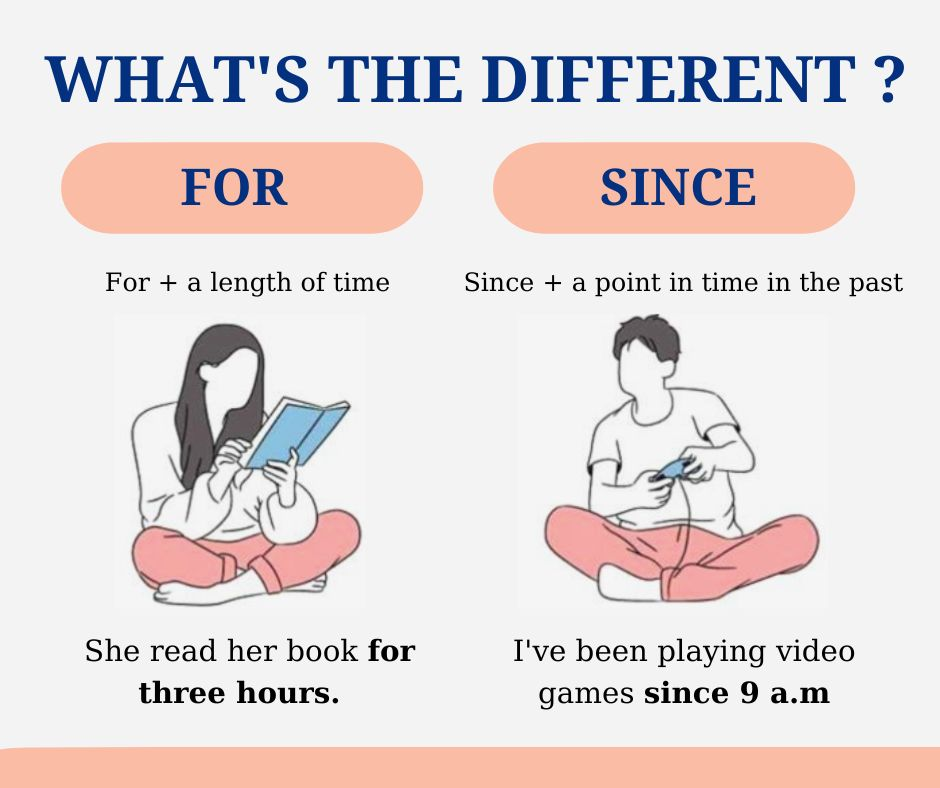

Tự luyện ngữ pháp Tiếng Anh
Lưu ý: Hiện tại trang vẫn đang trong quá trình tu sửa. Khi hoàn thành thì trang này sẽ được tự động xóa.
Trước khi bắt đầu
Giới thiệu
Chào mừng bạn đã đến với một cuốn sách tự học ngữ pháp Tiếng Anh hoan toàn miễn phí bằng Tiếng Việt (Có lẽ là đầu tiên). Mục tiêu của sách là cung cấp cho bạn những hành trang ngữ pháp cơ bản để bắt đầu quá trình tự học Tiếng Anh.
Chuẩn bị
Một trong những điều mình gợi ý những người mới học hoặc mất gốc Tiếng Anh nên làm là tìm những gì mình thích xem, nghe, đọc bằng Tiếng Anh.
Hướng dẫn ngữ pháp này được viết để làm nền tảng học ngữ pháp cho Hướng dẫn tự học lại Tiếng Anh từ đầu 30 ngày. Nếu bạn cũng đang tự học lại Tiếng Anh thì có thể học ngữ pháp cùng với Hướng dẫn 30 ngày.
Hướng dẫn cách học ngữ pháp trong cuốn sách này khá đơn giản:
- Đọc qua một lượt hướng dẫn ngữ pháp
- Đọc lại một lần nữa, ghi chú lại những điều quan trọng mà bạn muốn nhớ. Bạn hoàn toàn có thể tạo thẻ ghi nhớ trên Anki sử dụng câu ví dụ trong mỗi bài hướng dẫn.
Hướng dẫn ngữ pháp này sẽ không có bài tập ngữ pháp. Để có thể tiếp thu ngữ pháp một cách tự nhiên, bạn nên nghe đọc nhiều hơn.
Thói quen
Các bài hướng dẫn ngữ pháp trong đây tương đối ngắn và hoàn toàn không có bài tập ngữ pháp để bạn có thể dễ dàng xây dựng thói quen học tập hàng ngày.
Đọc hướng dẫn học Tiếng Anh
Phương pháp học Tiếng Anh đúng giúp bạn cải thiện quá trình và tốc độ học hơn rất nhiều. Bạn có thể đọc Tự luyện Tiếng Anh để học cách tự học Tiếng Anh (Hoàn toàn miễn phí).
"Đơn giản hóa" Parts Of Speech trong Tiếng Anh
Trong tiếng Anh, từ vựng được chia ra làm 9 loại là:
Mỗi từ loại trong tiếng Anh đóng một vai trò và chức năng riêng biệt, và đứng ở một vị trí quy định. Nếu muốn sử dụng tiếng Anh tốt hơn, bạn cần biết các từ thuộc từ loại nào và có chức năng gì, đứng ở đâu trong câu.
Sự khác nhau giữa "Từ loại" và "Loại từ"
Phần này mình xin phép được trích từ bài viết Từ Loại và Loại Từ Khác Nhau Như Thế Nào - Khám Phá Sự Khác Biệt
Trong ngôn ngữ học, khái niệm từ loại và loại từ thường được sử dụng để phân tích và hiểu rõ hơn về cấu trúc của ngôn ngữ. Dưới đây là sự khác biệt chi tiết giữa từ loại và loại từ trong tiếng Việt.
Từ Loại
Từ loại (parts of speech) là các nhóm từ có cùng chức năng ngữ pháp và thuộc tính giống nhau.
[...]
Loại Từ Loại từ (word type) là khái niệm rộng hơn, bao gồm cả từ đơn lẻ và cụm từ. Chúng được phân loại dựa trên ý nghĩa, cấu trúc, và ngữ cảnh sử dụng. Một số loại từ phổ biến gồm:
Từ đơn: Từ có nghĩa đầy đủ và có thể đứng độc lập. Ví dụ: nhà, cây.
Cụm từ: Tập hợp từ có nghĩa khi kết hợp với nhau. Ví dụ: ngôi nhà lớn, một cánh rừng xanh.
Điểm Khác Biệt Chính
Từ loại tập trung vào vai trò và chức năng của từ trong câu, giúp xác định cách từ đó tham gia vào cấu trúc ngữ pháp. Trong khi đó, loại từ đề cập đến việc phân loại từ dựa trên ý nghĩa và cấu trúc, bao gồm cả từ đơn và cụm từ.
Phần hôm nay chúng ta sẽ học là Từ loại hay Parts Of Speech.
Tìm hiểu cơ bản về từ loại
1. Danh từ
Danh từ là từ loại chỉ người, địa điểm, khái niệm hoặc đồ vật. Về cơ bản, bất cứ thứ gì là "vật", sự vật, hiện tượng... đều là một danh từ.
Danh từ có thể được chia thành các loại: danh từ chung và danh từ riêng -- số ít và số nhiều -- đếm được hay không đếm được. Khi học cụ thể về danh từ bạn sẽ hiểu các loại này.
Ví dụ: worker, apple, Paris, sugar...
2. Động từ
Động từ là từ loại diễn tả hành động, một tình trạng hay một cảm xúc. Động từ trong tiếng Anh giúp xác định chủ từ đang làm hay trong trạng thái như thế nào.
Ví dụ: go, like, say...
3. Tính từ
Tính từ là từ loại chỉ tính chất của sự vật, sự việc, hiện tượng
Ví dụ: nice, small, fast, strong...
4. Trạng từ
Trạng từ là từ loại trong tiếng Anh nêu ra trạng thái hay tình trạng, thường bổ sung ý nghĩa cho tính từ hoặc động từ
Ví dụ: often, slowly, usually,...
5. Giới từ
Giới từ là từ loại dùng để diễn tả mối tương quan về hoàn cảnh, thời gian hay vị trí của các sự vật, sự việc được nói đến.
Có nhiều giới từ quen thuộc mà chắc chắn bạn đã biết như: in, on, behind, at, up, for, with...
Đi sau giới từ thường là Object -- Tân ngữ, Verb-ing, cụm danh từ,...
Giới từ cho bạn biết mối quan hệ giữa các từ khác trong câu.
6. Đại từ
Đại từ là từ loại thay thế cho danh từ cụ thể khi người đọc hoặc người nghe biết bạn đang đề cập đến danh từ cụ thể nào.
Với nhiều chức năng khác nhau, đại từ trong tiếng Anh được phân ra các loại chính như sau: Đại từ nhân xưng (Personal pronouns), đại từ sở hữu (Possessive pronoun), đại từ phản thân (reflexive pronouns) và đại từ nhấn mạnh.
Ví dụ: I, you, him, her...
7. Liên từ
Liên từ là từ loại dùng để liên kết các cụm từ, các câu và các đoạn văn khi xây dựng các câu phức tạp thể hiện nhiều ý tưởng.
Liên từ được chia làm 3 loại:
- Liên từ kết hợp (Coordinating Conjunctions)
- Liên từ tương quan (Correlative Conjunctions)
- Liên từ phụ thuộc (Subordinating Conjunctions)
Ví dụ: And, so, however...
8. Từ hạn định
Mình có thấy bài viết này và một số bài viết khác để phần này là mạo từ nhưng theo mình thấy là nó chưa đủ. Mạo từ là một nhóm nhỏ của từ hạn định
Các từ hạn định hay chỉ định từ là những từ thường được đặt trước các danh từ xác định để chỉ một người/sự việc/sự vật cụ thể hoặc đặc biệt mà bạn đang đề cập đến.
9. Thán từ
Thán từ là từ loại diễn tả tình cảm hay cảm xúc đột ngột, không ngờ. Các từ loại này không can thiệp vào cú pháp của câu như Oh!, Um hoặc Ah!. Chúng không có giá trị thực sự về mặt ngữ pháp nhưng thường được sử dụng khá thường xuyên và chủ yếu là trong văn nói. Thán từ thường đứng một mình và đôi khi theo sau bởi một dấu chấm than (!)
Bài viết này được lấy nguồn từ bài viết này đồng thời được mình hiệu đính lại phần định dạng bài viết và bổ sung thêm các thông tin từ các nguồn khác.
Hiện tại tiếp diễn
Ví dụ
Hãy xem ví dụ mẫu sau:
She is driving. (Cô ấy đang lái xe)
Điều này có nghĩa là, ngay lúc này, ngay tại thời điểm chúng ta nói, cô ấy đang lái xe.
| I am = I’m | driving |
| he/ she/ it is = (he’s, she’s,….) | |
| We/ they/ you are = we’re, they’re…. |
Chúng ta dùng thì Present Continuous (Hiện tại tiếp diễn) khi nói về một việc nào đó đang diễn ra ngay lúc nói:
- Please don’t make so much noise. I’m studying. (Không dùng “I study”).
- “Where is Margaret?” “She’s having a bath.” (Không dùng “She has”)
- Let’s go out now. It isn’t raining any more.
- (at a party) Hello, Ann. Are you enjoying the party?
Chúng ta cũng dùng Present Continuous khi nói về một việc nào đó diễn ra trong khoảng thời gian của lúc nói, nhưng không nhất thiết chính xác ngay lúc nói.
Hãy xem tình huống mẫu sau:
- Tome and Ann are talking and drinking in a cafe. Tom says: “I’m reading an interesting book at the moment. I’ll lend it to you when I’ve finished it.”
Tom không đọc cuốn sách đó vào lúc anh ta nói. Anh ấy có ý nói rằng anh ấy đã bắt đầu đọc trước đó và hiện thời thì chưa đọc xong. Anh ấy đang đọc nửa chừng. Sau đây là một số ví dụ khác:
- Silvia is learning English at the moment.
- Have you heard about Tom? He is building his own house.
Nhưng có thể là ngay lúc nói Silvia và Tom đang không thực hiện những công việc này.
Chúng ta thường dùng Present Continuous khi nói về khoảng thời gian bao gồm cả hiện tại.
Ví dụ: today, this season….
- “You’re working hard today.” “Yes, I have a lot to do.”
- Tom isn’t playing football this season. He wants to concentrate on his studies.
Chúng ta dùng Present Continuous khi nói về những tình huống đang thay đổi.
- The population of the world is rising very fast. (Không dùng “rises”)
- Is your English getting better? (Không dùng “does….get?”)
Tham khảo
Chưa có
Thì hiện tại đơn (Present Simple Tense)
Thì hiện tại đơn (Present Simple Tense) là một thì trong tiếng Anh dùng để diễn tả một hành động hoặc sự việc xảy ra thường xuyên, lặp đi lặp lại, hoặc là một sự thật hiển nhiên. Dưới đây là cách sử dụng và cấu trúc của thì hiện tại đơn
Xây dựng câu ở thì hiện tại đơn
| Dạng | Chủ ngữ | Trợ động từ | Động từ chính | Phần còn lại của câu |
|---|---|---|---|---|
| Khẳng định | She | walks | to school every day | |
| They | play | soccer on weekends | ||
| Phủ định | He | does not (doesn't) | like | coffee |
| We | do not | (don't) | watch | |
| Nghi vấn | Does she | play | the piano? | |
| Do they | go | to the gym? |
Với câu khẳng định:
- Đối với chủ ngữ số ít (he, she, it - đúng hơn là "third person singular"): Động từ thêm "s/es".
- Đối với chủ ngữ số nhiều và I (you, we, they): động từ nguyên thể.
Với câu phủ định và câu hỏi:
- Trợ động từ được chia về thì hiện tại đơn: do, does
- Động từ chính ở dạng nguyên thể
- Ở câu phủ định thì ta thêm not vào sau trợ động từ: do not (don't), does not (doesn't)
- Ở câu hỏi thì ta đảo trợ động từ lên đầu câu: does she, do I chứ không phải she does hoặc I do nữa.
Dùng do để nhấn mạnh
Bình thường thì trong câu khẳng định sẽ không cần dùng do, nhưng nếu muốn nhấn mạnh thì có thể sử dụng do. Ví dụ như: "I do wish you'd be fine" hoặc "I do like it".
Với động từ chính là be
| Chủ ngữ | động từ chính be | |||
|---|---|---|---|---|
| Khẳng định | I | am | Vietnamese. | |
| You, we, they | are | Vietnamese. | ||
| He, she, it | is | Vietnamese. | ||
| Phủ định | I | am | not | late |
| You, we, they | are | not | late. | |
| He, she, it | is | not | late. | |
| Nghi vấn | am I (+ not) | late | ||
| are (+ not) | you, we, they | late. | ||
| is (+ not) | he, she, it | late. |
Cấu trúc bảng được lấy từ EnglishClub
Có thể rút ra được từ những ví dụ:
- Sẽ không có trợ động từ (do, does) kể cả khi ở dạng phủ định hoặc bị động.
- Động từ chính là be sẽ được chia dạng động từ.
- Với câu phủ định thì ta thêm not đằng sau động từ chính (ở đây là am, is, are)
Cách sử dụng
- Thói quen, hành động lặp đi lặp lại hoặc xảy ra đều đặn, thường xuyên.
- I go to school every day (Tôi đi học mỗi ngày)
- I live in Hanoi (Tôi sống ở Hà Nội) - Mình đang sống ở Hà Nội, mình đã sống ở Hà Nội từ quá khứ, bây giờ cũng ở Hà Nội và tương lai cũng sẽ ở Hà Nội (Có thể chuyển nhà vào thời điểm nào đó trong tương lai :D)
- Sự thật hiển nhiên hoặc chân lý: Những điều đúng với mọi thời điểm.
- The sun rises in the east. (Mặt trời mọc ở hướng đông.)
Một số lưu ý
- Các từ chỉ tần suất (always, usually, often, sometimes, never) thường đứng trước động từ chính. Ví dụ: I always do my homework.
Tham khảo
- Thì hiện tại đơn (Present Simple Tense) - hitbooksvn
- Thì Hiện Tại Đơn (Simple Present Tense) - clevaimath
- Present Simple tense - EnglishClub
Hiện tại đơn và hiện tại tiếp diễn
Trước khi học bài này, các bạn phải học bài số 1 và bài số 2 để hiểu rõ cách dùng của thì hiện tại tiếp diễn và thì hiện tại đơn.
a - Hãy xem phần giải thích dưới đây và so sánh các ví dụ sau:
| Present Continuous (I am doing) | Simple Present (I do) |
|---|---|
| Dùng thì Hiện Tại Tiếp Diễn để diễn tả một hành động xảy ra tại thời điểm nói hoặc xung quanh thời điểm nói. - The kettle is boiling. Can you turn it off, please? - Listen to those people. What language are they speaking? - “Where’s Tom?” “He’s playing tennis.” - What are you doing here? - Silvia is in Britain for three months. She’s learning English. Dùng Thì Hiện Tại Tiếp Diễn để chỉ một tình huống tạm thời: - I’m living with some friends until I can find a flat. - That machine isn’t working. It broke down this morning | Dùng Thì Hiện Tại Đơn để diễn tả các sự việc một cách tổng quát hoặc sự việc xảy ra lặp đi lặp lại - Water boils at 100 degrees Celsius. - Excuse me, do you speak English? - Tome plays tennis every Saturday. - What do you usually do at weekends? - What do you do? (= What’s your job?) - Most people learn to swim when they are children. Dùng thì Hiện tại đơn cho tình huống ổn định: - My parents live in London. They have been there for 20 years. - That machine doesn’t work. It hasn’t worked for years. |
b - Một số động từ chỉ được dùng trong các thì hiện tại đơn.
Ví dụ: Bạn không thể nói “I am knowing”. Bạn chỉ có thể nói “I know”. Sau đây là danh mục các động từ không thường dùng ở thì hiện tại tiếp diễn. (Nhưng cũng có những trường hợp ngoại lệ)
| want | like | belong | know | suppose | remember |
| need | love | see | release | mean | forget |
| prefer | hate | hear | believe | understand | seem |
| have (khi mang nghĩa là “có, sở hữu”) | |||||
| think (khi mang nghĩa là “tin, cho là”). |
- Do you like London? (Không dùng “are you liking”
- He doesn’t understand. (Không dùng “he isn’t understanding”)
- These shoes belong to me. (Không dùng “are belonging”)
- What do you think Tom will do? (= What do you believe he will do)
Nhưng:
- What are you thinking about? (= What is going on in your mind?)
Simple Past (Quá khứ đơn)
Cấu trúc: Thêm "-ed" vào động từ gốc hoặc sử dụng dạng quá khứ của các động từ bất quy tắc.
Ví dụ:
- You called Debbie.
- Did you call Debbie?
- You did not call Debbie.
CÁCH DÙNG:
1. Hành động đã hoàn thành trong quá khứ.

Dùng thì quá khứ đơn để diễn tả một hành động bắt đầu và kết thúc vào một thời điểm nhất định trong quá khứ. Đôi khi người nói không thật sự nêu ra một thời điểm nào đó chính xác khi nói nhưng họ có trong đầu một thời điểm chính xác nào đó.
Ví dụ:
- I saw a movie yesterday.
- I didn't see a play yesterday.
- Last year, I traveled to Japan.
- Last year, I didn't travel to Korea.
2. Một chuỗi các hành động đã kết thúc.

Chúng ta sử dụng quá khứ đơn để liệt kê các chuỗi hành động đã kết thúc trong quá khứ. Những hành động này xảy ra theo thứ tự 1, 2, 3, 4 v.v...
Ví dụ:
- I finished work, walked to the beach, and found a nice place to swim.
- He arrived from the airport at 8:00, checked into the hotel at 9:00, and met the others at 10:00.
- Did you add flour, pour in the milk, and then add the eggs?
3. Một diễn tiến trong quá khứ.

Quá khứ đơn còn có thể được dùng để diễn tả một diễn tiến khởi đầu và kết thúc trong quá khứ. Một diễn tiến là một hành động kéo dài và thường được mô tả bằng các từ như: for two years, for five minutes, all day, all year, v.v...
Ví dụ:
- I lived in Brazil for two years.
- Shauna studied Japanese for five years.
- They sat at the beach all day.
- They did not stay at the party the entire time.
- We talked on the phone for thirty minutes.
4. Các thói quen trong quá khứ

Thì quá khứ đơn cũng có thể được dùng để mô tả một thói quen đã không còn nữa trong quá khứ. Nó có cùng nghĩa với "used to". Để bảo đảm rằng người nghe hiểu người nói đang nói đến một thói quen nào đó, người nói thường thêm vào các từ sau: always, often, usually, never, when I was a child, when I was younger, v.v...
Ví dụ:
- I studied French when I was a child.
- He played the violin.
- He didn't play the piano.
- Did you play a musical instrument when you were a kid?
- She worked at the movie theater after school.
- They never went to school, they always skipped class.
5. Những sự thật và khái quát hóa trong quá khứ.

Thì quá khứ đơn cũng có thể được dùng để mô tả những sự thật hoặc những điều khái quát hóa mà trong hiện tại không còn đúng nữa. Cũng giống như ở cách dùng thứ 4, ở cách dùng này, thì quá khứ đơn khá giống với cách dùng "used to"
Ví dụ:
- She was shy as a child, but now she is very outgoing.
- He didn't like tomatoes before.
- Did you live in Texas when you were a kid?
- People paid much more to make cell phone calls in the past.
QUAN TRỌNG: Mệnh đề When luôn luôn xảy ra trước.
Mệnh đề (clause) là một cụm từ có nghĩa nhưng thường chưa phải là một câu hoàn chỉnh. Một số mệnh đề bắt đầu với từ "when", chẳng hạn như "when I dropped my pen..." hoặc "when class began...". Những mệnh đề này được gọi là các mệnh đề when. Những ví dụ sau có chứa mệnh đề when:
- When I paid her one dollar, she answered my question.
- She answered my question when I paid her one dollar.
Mệnh đề when luôn luôn diễn ra đầu tiên, trước mệnh đề còn lại trong cùng một câu ghép khi cả hai mệnh đề đều ở thì quá khứ đơn. Cả hai ví dụ phía trên đều có cùng một ý nghĩa: đầu tiên, tôi trả cho cô ta 1 dollar, rồi sau đó cô ấy mới trả lời câu hỏi của tôi. Mệnh đề "when I paid her one dollar" nằm ở đầu câu hay cuối câu không quan trọng.Tuy nhiên, ở ví dụ phía sau đây nó lại có một ý nghĩa khác: đầu tiên cô ấy trả lời câu hỏi của tôi rồi sau đó tôi mới trả cho cô ấy 1 dollar.
However, the example below has a different meaning. First, she answered my question, and then, I paid her one dollar.
- I paid her one dollar when she answered my question.
Cách thêm Adverb:
Những ví dụ dưới đây chỉ cách thêm các adverb như: always, only, never, ever, still, just, v.v... vào câu ở thì quá khứ đơn.
- You just called Debbie.
- Did you just call Debbie?
Chủ động/Bị động
- Tom repaired the car. Chủ động.
- The car was repaired by Tom. Bị động
Nguồn
Past Continuous (Thì quá khứ tiếp diễn)
FORM
[was/were + present participle]
Ví dụ:
- You were studying when she called.
- Were you studying when she called?
- You were not studying when she called.
CÁCH DÙNG
1. Một hành động bị gián đoạn trong quá khứ

Sử dụng thì quá khứ tiếp diễn để diễn tả một hành động kéo dài trong quá khứ đã bị gián đoạn. Tác nhân gây gián đoạn thường là một hành động ngắn hơn được chia ở thì hiện tại đơn. Đó có thể là một tác nhân gây gián đoạn thật sự hoặc chỉ gây gián đoạn trong một khoảng thời gian nào đó.
Ví dụ:
- I was watching TV when she called.
- When the phone rang, she was writing a letter.
- While we were having the picnic, it started to rain.
- What were you doing when the earthquake started?
- I was listening to my iPod, so I didn't hear the fire alarm.
- You were not listening to me when I told you to turn the oven off.
- While John was sleeping last night, someone stole his car.
- Sammy was waiting for us when we got off the plane.
- While I was writing the email, the computer suddenly went off.
A: What were you doing when you broke your leg?
-
B: I
-
was snowboarding
-
.
2. Hành động bị gián đoạn bởi một thời điểm nhất định

Ở cách dùng thứ nhất như đã được mô tả phía trên, thì quá khứ tiếp diễn bị gây gián đoạn bởi một hành động ngắn hơn ở thì quá khứ đơn. Tuy nhiên bạn cũng có thể dùng một khoảng thời gian cụ thể làm tác nhân gây gián đoạn.
Ví dụ:
- Last night at 6 PM, I was eating dinner.
- At midnight, we were still driving through the desert.
- Yesterday at this time, I was sitting at my desk at work.
LƯU Ý
Ở thì quá khứ đơn, thời gian được dùng để chỉ thời điểm hành động bắt đầu hoặc kết thúc. Ở thì quá khứ tiếp diễn, thời gian chỉ là tác nhân gây gián đoạn mà thôi.
Ví dụ:
Last night at 6 PM, I ate dinner --> Tôi bắt đầu ăn tối vào lúc 6 PM
Last night at 6 PM, I was eating dinner. --> Tôi bắt đầu ăn tối ở thời điểm trước đó và vào lúc 6 PM, tôi đang trong quá trình ăn tối.
3. Những hành động diễn ra song song

Nếu bạn sử dụng thì quá khứ tiếp diễn với cả 2 hành động trong cùng 1 câu thì có nghĩa là cả 2 hành động đó xảy ra cùng một lúc. Chúng xảy ra song song với nhau.
Ví dụ:
- I was studying while he was making dinner.
- While Ellen was reading, Tim was watching television.
- Were you listening while he was talking?
- I wasn't paying attention while I was writing the letter, so I made several mistakes.
- What were you doing while you were waiting?
- Thomas wasn't working, and I wasn't working either.
- They were eating dinner, discussing their plans, and having a good time.
4. Không khí
Trong tiếng Anh, chúng ta thường dùng một chuỗi các hành động xảy ra song song để diễn tả bầu không khí của môt nơi nào đó trong một khoảng thời gian nhất định trong quá khứ.
Ví dụ:
- When I walked into the office, several people were busily typing, some were talking on the phones, the boss was yelling directions, and customers were waiting to be helped. One customer was yelling at a secretary and waving his hands. Others were complaining to each other about the bad service.
5. Sự lặp đi lặp lại và gây khó chịu, dùng chung với "Always"

Thì hiện tại tiếp diễn được dùng cùng với các từ như "always" hoặc "constantly" diễn tả một việc gây khó chịu hoặc gây shock thường xảy ra trong quá khứ. Ý nghĩa của nó rất giống với "used to" nhưng với cảm giác tiêu cực (không tốt). Lưu ý đặt những từ như "always" hoặc "constantly" giữa "be" và "verb+ing"
Ví dụ:
- She was always coming to class late.
- He was constantly talking. He annoyed everyone.
- I didn't like them because they were always complaining.
While và When
Clause (mệnh đề) là một nhóm từ có ý nghĩa nhưng thường không phải là những câu hoàn chỉnh. Một số mệnh đề được bắt đầu bởi "when", chẳng hạn như "when she called" hoặc "when it bit me". Một số mệnh đề bắt đầu bởi từ "while", chẳng hạn như "while she was sleeping" và "while he was surfing". Khi bạn nói về những việc ở quá khứ, "when" thường được dùng nhiều nhất với các động từ ở thì quá khứ đơn còn "while" thường được dùng ở thì quá khứ tiếp diễn. "While" có ý là "diễn ra trong suốt khoảng thời gian đó". Đọc những ví dụ dưới đây. Chúng có ý nghĩa tương tự nhau nhưng nhấn mạnh ở những điểm khác nhau của câu.
Ví dụ:
- I was studying when she called. (Nhấn mạnh sự kiện cô ấy gọi đến)
- While I was studying, she called. (Nhấn mạnh sự kiện tôi đang học bài)
LƯU Ý: Non-Continuous Verbs / Mixed Verbs
Điểm quan trọng cần nhớ là các Non-continuous verb không thể được dùng ở bất kỳ thì tiếp diễn nào cả. Ngoài ra, các Mixed Verb có ý nghĩa Non-Continuous cũng không thể được dùng ở các thì tiếp diễn. Chúng ta phải dùng thì quá khứ đơn thay vì quá khứ tiếp diễn đối với các động từ này.
Ví dụ:
- Jane was being at my house when you arrived. Không đúng.
- Jane was at my house when you arrived. Đúng
Cách thêm Adverb:
Những ví dụ dưới đây chỉ cách thêm các adverb như: always, only, never, ever, still, just, v.v... vào một câu ở thì quá khứ tiếp diễn:
Ví dụ:
- You were just studying when she called.
- Were you just studying when she called?
CHỦ ĐỘNG / BỊ ĐỘNG
Ví dụ:
- The salesman was helping the customer when the thief came into the store. Chủ động
- The customer was being helped by the salesman when the thief came into the store. Bị động
Nguồn
Present Perfect (Thì hiện tại hoàn thành)
FORM
[has/have + past participle]
Ví dụ:
- You have seen that movie many times.
- Have you seen that movie many times?
- You have not seen that movie many times.
Một thời điểm không xác định trước thời điểm hiện tại

Chúng ta dùng thì hiện tại hoàn thành để diễn tả một hành động xảy ra tại một thời điểm không xác định trước thời điểm hiện tại. Thời điểm chính xác không quan trọng. Bạn KHÔNG THỂ dùng thì hiện tại hoàn thành với những từ chỉ một thời điểm xác định, chẳng hạn như: yesterday, one year ago, last week, when I was a child, when I lived in Japan, at that moment, that day, one day, v.v... Chúng ta CÓ THỂ dùng thì hiện tại hoàn thành với những từ chỉ thời điểm không xác định, chẳng hạn như: ever, never, once, many times, several times, before, so far, already, yet, v.v...
Ví dụ:
- I have seen that movie twenty times.
- I think I have met him once before.
- There have been many earthquakes in California.
- People have traveled to the Moon.
- People have not traveled to Mars.
- Have you read the book yet?
- Nobody has ever climbed that mountain.
A: Has there ever been a war in the United States?
-
B: Yes, there
-
has been
-
a war in the United States.
Khái niệm "thời điểm không xác định" có thể sẽ rất khó hiểu đối với những người học tiếng Anh. Do đó cách tốt nhất là liên hệ thì hiện tại hoàn thành với những chủ đề sau:
CHỦ ĐỀ 1: KINH NGHIỆM
Bạn có thể dùng thì hiện tại hoàn thành để diễn tả kinh nghiệm của mình. Cũng giống như khi bạn nói: "I have the experience of . . ." Bạn cũng có thể dùng thì này để nói rằng mình chưa từng có những kinh nghiệm như vậy. Thì hiện tại hoàn thành không được dùng để mô tả một hiện tượng xác định nào đó.
Ví dụ:
I have been to France.
- Câu này có nghĩa là bạn đã có kinh nghiệm sống ở Pháp. Có thể bạn đã ở đó 1 lần, hoặc một vài lần.
I have been to France three times.
- Bạn có thể thêm vào số lần ở cuối câu.
I have never been to France.
-
Câu này có nghĩa là bạn chưa từng có kinh nghiệm đến Pháp.
-
I think I have seen that movie before.
-
He has never traveled by train.
-
Joan has studied two foreign languages.
A: Have you ever met him?
-
B: No, I
-
have
-
not
-
met
-
him.
CHỦ ĐỀ 2: NHỮNG THAY ĐỔI THEO THỜI GIAN
Chúng ta thường dùng thì hiện tại hoàn thành để nói về những thay đổi xảy ra trong một khoảng thời gian.
Ví dụ:
- You have grown since the last time I saw you.
- The government has become more interested in arts education.
- Japanese has become one of the most popular courses at the university since the Asian studies program was established.
- My English has really improved since I moved to Australia.
CHỦ ĐỀ 3: NHỮNG THÀNH TỰU, THÀNH QUẢ ĐÃ ĐẠT ĐƯỢC
Chúng ta thường dùng thì hiện tại hoàn thành để liệt kê những thành tựu mà một cá nhân hay loài người đã đạt được. Bạn không thể đề cập đến một thời điểm xác định.
Ví dụ:
- Man has walked on the Moon.
- Our son has learned how to read.
- Doctors have cured many deadly diseases.
- Scientists have split the atom.
CHỦ ĐỀ 4: HÀNH ĐỘNG CHƯA HOÀN THÀNH MÀ BẠN ĐANG MONG ĐỢI
Chúng ta thường dùng thì hiện tại hoàn thành để nói về một hành động mà chúng ta mong đợi hoặc không mong đợi. Dùng thì hiện tại hoàn thành để thể hiện rằng chúng ta vẫn còn đang chờ đợi hành động đó xảy ra.
Ví dụ:
- James has not finished his homework yet.
- Susan hasn't mastered Japanese, but she can communicate.
- Bill has still not arrived.
- The rain hasn't stopped.
CHỦ ĐỀ 5: NHIỀU HÀNH ĐỘNG XẢY RA Ở NHỮNG THỜI ĐIỂM KHÁC NHAU
Chúng ta cũng có thể dùng thì hiện tại hoàn thành để nói về nhiều hành động khác nhau xảy ra ở quá khứ tại những thời điểm khác nhau. Thì hiện tại hoàn thành có ý nghĩa là quá trình đó vẫn chưa kết thúc và có thể còn nhiều hành động khác nữa.
Ví dụ:
- The army has attacked that city five times.
- I have had four quizzes and five tests so far this semester.
- We have had many major problems while working on this project.
- She has talked to several specialists about her problem, but nobody knows why she is sick.
Thì hiện tại hoàn thành và những từ chỉ thời gian
Khi chúng ta dùng thì hiện tại hoàn thành thì có nghĩa là có một điều gì đó đã xảy ra ở một thời điểm trong cuộc sống của chúng ta trước thời điểm hiện tại. Lưu ý là thời điểm chính xác lúc hành động xảy ra không quan trọng.

Đôi khi chúng ta muốn giới hạn lại khoảng thời gian của những hành động này, chúng ta có thể dùng những thành ngữ chỉ thời gian như sau: in the last week, in the last year, this week, this month, so far, up to now v.v...
Ví dụ:
- Have you been to Mexico in the last year?
- I have seen that movie six times in the last month.
- They have had three tests in the last week.
- She graduated from university less than three years ago. She has worked for three different companies so far.
- My car has broken down three times this week.
LƯU Ý
"Last year" và "in the last year" có ý nghĩa rất khác nhau. "Last year" có nghĩa là vào năm trước, nó được xem là một thời điểm xác định và phải dùng thì quá khứ đơn. Còn "in the last year" có nghĩa là một khoảng thời gian kéo dài từ 365 ngày trước đây cho đến bây giờ. Nó không được xem là một thời điểm xác định và do đó cần phải dùng thì hiện tại hoàn thành.
Ví dụ:
I went to Mexico last year. (Tôi đã đến Mexico vào năm trước được tính trên lịch so với năm nay, ví dụ nếu năm nay là năm 2011 thì người nói câu này muốn nói rằng mình đã đến Mexico vào năm 2010, và "năm 2010" được xem là một thời điểm xác định)
I have been to Mexico in the last year. (Tôi đã đến Mexico ít nhất 1 lần tại một thời điểm nào đó trong khoảng thời gian tính từ 365 ngày trước đây cho đến bây giờ, và khoảng thời gian này không phải là một thời điểm xác định)
Kéo dài từ quá khứ cho đến hiện tại (Non-Continuous Verb)

Với các Non-Continuous Verb và những Mixed Verb với nghĩa non-continuous, chúng ta dùng thì hiện tại hoàn thành để diễn tả những hành động xảy ra trong quá khứ và tiếp tục kéo dài cho đến thời điểm hiện tại. "For five minutes," "for two weeks," và "since Tuesday" đều có thể được dùng với thì Present Perfect.
Ví dụ:
- I have had a cold for two weeks.
- She has been in England for six months.
- Mary has loved chocolate since she was a little girl.
Mặc dù cách dùng này giới hạn trong những động từ non-continuous và mixed verb với ý nghĩa non-continuous, các từ như "live," "work," "teach," và "study" đôi khi có thể được dùng theo cách này mặc dù chúng không phải là các Non-Continuous Verb.
Cách đặt Adverb
Những ví dụ dưới đây mô tả các đặt các adverb như: always, only, never, ever, still, just, v.v... vào một câu ở thì hiện tại hoàn thành:
Ví dụ:
- You have only seen that movie one time.
- Have you only seen that movie one time?
CHỦ ĐỘNG / BỊ ĐỘNG
Ví dụ:
- Many tourists have visited that castle. Chủ động
- That castle has been visited by many tourists. Bị động
Present Perfect Continuous (Thì hiện tại hoàn thành tiếp diễn)
Cấu trúc
[has/have + been + present participle]
Ví dụ:
- You have been waiting here for two hours.
- Have you been waiting here for two hours?
- You have not been waiting here for two hours.
Cách dùng
1. Một diễn tiến từ quá khứ kéo dài đến hiện tại.

Chúng ta dùng thì hiện tại hoàn thành tiếp diễn để mô tả một sự việc bắt đầu trong quá khứ và tiếp tục cho đến hiện tại. "For five minutes", "for two weeks", và "since Tuesday" là những khoảng thời gian có thể được dùng với thì hiện tại hoàn thành tiếp diễn.
Ví dụ:
- They have been talking for the last hour.
- She has been working at that company for three years.
- What have you been doing for the last 30 minutes?
- James has been teaching at the university since June.
- We have been waiting here for over two hours!
- Why has Nancy not been taking her medicine for the last three days?
2. Recently, Lately

Chúng ta cũng có thể dùng thì hiện tại hoàn thành tiếp diễn mà không cần những từ chỉ các khoảng thời gian như "for two weeks" giống như ở cách dùng thứ 1. Nếu không có những từ như vậy thì hiện tại hoàn thành tiếp diễn sẽ có nghĩa chung là mới gần đây. Chúng ta thường dùng các từ như "lately" hoặc "recently" để nhấn mạnh nghĩa này.
Ví dụ:
- Recently, I have been feeling really tired.
- She has been watching too much television lately.
- Have you been exercising lately?
- Mary has been feeling a little depressed.
- Lisa has not been practicing her English.
- What have you been doing?
QUAN TRỌNG
Bạn cần nhớ là thì hiện tại hoàn thành tiếp diễn có nghĩa là những sự việc xảy ra gần đây. Nếu bạn dùng thì hiện tại hoàn thành tiếp diễn trong những câu hỏi kiểu như "Have you been feeling alright?", nó có thể có ý là người được hỏi trong có vẻ mệt mỏi. Còn một câu hỏi kiểu như là "Have you been smoking?" có thể có ý là bạn ngửi thấy mùi thuốc lá trên người được hỏi. Sử dụng thì hiện tại hoàn thành tiếp diễn trong câu hỏi có nghĩa là bạn có thể nhìn thấy, ngửi thấy, nghe thấy, hoặc cảm thấy kết quả của hành động đó. Nếu sử dụng sai thì này, bạn có nguy cơ bị hiểu lầm là đang sỉ nhục, lăng mạ người khác.
CẦN NHỚ
Điều quan trọng cần nhớ là các động từ Non-Continuous không thể được dùng với bất kỳ thì tiếp diễn nào. Ngoài ra, một số Mixed Verb nếu được dùng với ý nghĩa non-continuous cũng không thể được dùng trong các thì tiếp diễn. Thay vì dùng thì hiện tại hoàn thành tiếp diễn với những động từ như vậy, bạn phải dùng thì hiện tại hoàn thành.
Ví dụ
- Sam has been having his car for two years. Không đúng
- Sam has had his car for two years. Đúng
Cách đặt adverb
Những ví dụ dưới đây mô tả các đặt các adverb như: always, only, never, ever, still, just, v.v... vào một câu ở thì hiện tại hoàn thành tiếp diễn:
- You have only been waiting here for one hour.
- Have you only been waiting here for one hour?
CHỦ ĐỘNG / BỊ ĐỘNG
Ví dụ:
- Recently, John has been doing the work. Chủ động
- Recently, the work has been being done by John. Bị động
LƯU Ý: Thì hiện tại hoàn thành tiếp diễn hiếm khi được sử dụng ở thể bị động.
!!! info "Nguồn" Nguồn bài viết
FOR và SINCE
Since và For là hai giới từ được dùng rất nhiều trong ngữ pháp tiếng Anh và đặc biệt trong các bài liên quan tới thì, về thì quá khứ đơn và các thì hoàn thành.
Since: Từ khi, khi, kể từ khi
Ví dụ cụ thể: Since 8 a.m, since July, since 2005,....
For: Khoảng, trong
Ví dụ: For 5 days, for a long time, for 5 years,...

https://www.facebook.com/NOPAINNOGAIN.0988919388/posts/775199897940407/
https://www.facebook.com/notes/733207490603882/
Past Perfect (Thì quá khứ hoàn thành)
FORM
[had + past participle]
Ví dụ:
- You had studied English before you moved to New York.
- Had you studied English before you moved to New York?
- You had not studied English before you moved to New York.
CÁCH DÙNG:
1. Một hành động được hoàn thành trước một hành động khác trong quá khứ.

Thì quá khứ hoàn thành diễn tả một hành động xảy ra trước một hành động khác trong quá khứ. Nó cũng có thể dùng để diễn tả một hành động xảy ra trước một thời điểm nhất định trong quá khứ.
Ví dụ:
- I had never seen such a beautiful beach before I went to Kauai.
- I did not have any money because I had lost my wallet.
- Tony knew Istanbul so well because he had visited the city several times.
- Had Susan ever studied Thai before she moved to Thailand?
- She only understood the movie because she had read the book.
- Kristine had never been to an opera before last night.
- We were not able to get a hotel room because we had not booked in advance.
A: Had you ever visited the U.S. before your trip in 2006?
-
B: Yes, I
-
had been
-
to the U.S. once before.
2. Một diễn tiến xảy ra trước một điều nào đó trong quá khứ (Non-Continuous Verb)

Với Non-Continuous Verb và một số Mixed Verb được dùng với nghĩa non-continuous, chúng ta dùng thì quá khứ hoàn thành để diễn tả một điều bắt đầu trong quá khứ và tiếp tục diễn ta cho đến khi có một hành động khác xảy ra trong quá khứ.
Ví dụ:
- We had had that car for ten years before it broke down.
- By the time Alex finished his studies, he had been in London for over eight years.
- They felt bad about selling the house because they had owned it for more than forty years.
Mặc dù cách dùng trên thường chỉ giới hạn trong các động từ Non-Continuous và các nghĩa non-continuous của các mixed verb, nhưng đôi khi ta cũng có thể dùng các từ "live," "work," "teach," và "study" mặc dù chúng không phải là các động từ Non-Continuous.
QUAN TRỌNG: Những thời điểm xác định trong thì quá khứ hoàn thành.

Không giống như thì hiện tại hoàn thành, chúng ta có thể dùng các từ hoặc các ngữ chỉ thời gian trong thì quá khứ hoàn thành. Mặc dù có thể dùng được nhưng hiếm khi cần phải dùng như vậy.
Ví dụ:
- She had visited her Japanese relatives once in 1993 before she moved in with them in 1996.
NGOÀI RA
Nếu hành động của thì quá khứ hoàn thành xảy ra ở một thời điểm xác định, ta thay thế được bằng thì quá khứ đơn khi có từ "before" hoặc "after" được dùng. Do từ "before" và "after" đã nói được cho ta biết hành động nào xảy ra trước, hành động nào xảy ra sau nên việc dùng thì quá khứ hoàn thành đã không còn cần thiết nữa. Do đó, cả hai câu phía dưới đây đều đúng:
- She had visited her Japanese relatives once in 1993 before she moved in with them in 1996.
- She visited her Japanese relatives once in 1993 before she moved in with them in 1996.
TUY NHIÊN

Nếu thì quá khứ hoàn thành không dùng để chỉ một hành động ở một thời điểm xác định thì việc dùng thì quá khứ hoàn thành là bắt buộc. So sánh 2 ví dụ dưới đây. Ở đây, thì quá khứ hoàn thành dùng để chỉ sự thiếu kinh nghiệm chứ không phải là một hành động ở một thời điểm nhất định. Do đó, ta không thể dùng thì quá khứ đơn được.
- She never saw a bear before she moved to Alaska. Không đúng.
- She had never seen a bear before she moved to Alaska. Đúng
Cách đặt adverb
Những ví dụ dưới đây mô tả các đặt các adverb như: always, only, never, ever, still, just, v.v... vào một câu ở thì quá khứ hoàn thành:
- You had previously studied English before you moved to New York.
- Had you previously studied English before you moved to New York?
CHỦ ĐỘNG/ BỊ ĐỘNG
- George had repaired many cars before he received his mechanic's license. Chủ động
- Many cars had been repaired by George before he received his mechanic's license. Bị động
Quá Khứ Hoàn Thành Tiếp Diễn
Giới thiệu
Chúng ta sử dụng thì quá khứ hoàn thành tiếp diễn để diễn tả một hành động xảy ra trong suốt một quãng thời gian trong quá khứ, trước một hành động khác cũng xảy ra trong quá khứ.
- David is talking about a situation in the past (I fell and broke my leg).
When we look back to something before this past time, we use the past perfect simple or the past perfect continuous.
- Past perfect simple: had taken a bus into town.
- Past perfect continuous: had been swimming in the pool
Cấu trúc:
Cấu trúc cơ bản là: Chủ ngữ + HAD BEEN + VERB-ING
Ví dụ:
- I had been waiting ages, (OR I'd been waiting ages.)
- I had not been paying attention, OR (I hadn't been paying attention.)
- Was the ground wet? Had it been raining?
C. Phân biệt thì Quá khứ hoàn thành và Quá khứ hoàn thành tiếp diễn:
Quá khứ hoàn thành tiếp diễn:
OVER A PERIOD (had been doing)
Ví dụ:
- I found the calculator. I'd been looking for it for ages.
- Vicky felt tired because she'd been working all day.
- We are thinking of Vicky's work going on as she got tired.
Chúng ta thường dùng thì Quá khứ hoàn thành tiếp diễn với cụm từ diễn tả khoảng thời gian bao lâu. (How long)
- When the company went bankrupt, it had been losing money for months.
Quá khứ hoàn thành:
COMPLETE (had done)
Ví dụ:
I finally bought a new calculator. I'd looked everywhere for the old one. Vicky felt pleased because she'd done so much work. We are thinking of Vicky's work as complete.
Chúng ta thường dùng thì Quá khứ hoàn thành với cụm từ diễn tả số lượng/ định lượng. (How much/ How many)
We normally use the simple form with a phrase saying how much/many.
- When the company went bankrupt, it had lost over a million pounds.
D. So sánh với các thì tiếp diễn khác:
*So sánh thì Hiện tại hoàn thành tiếp diễn và Quá khứ hoàn thành tiếp diễn:
Ví dụ:
- Vicky looks very upset. I think she's been crying.
- Vicky looked very upset. I thought she'd been crying. Compare the past
*So sánh thì Quá khứ tiếp diễn và Quá khứ hoàn thành tiếp diễn:
Ví dụ:
- When I phoned, Natasha was having a piano lesson (I phoned during the lesson).
- When I phoned, Natasha had been having a piano lesson. (I phoned after the lesson).
Tham khảo
Cách dùng 'have' và 'have got' khiến nhiều người nhầm lẫn:
Trong khi "have" mang nghĩa nắm giữ, sở hữu, dùng để đánh dấu hoặc nói về mối quan hệ, "have got" dùng trong tình huống hiện tại hoặc văn bản trang trọng.
 " Have" và "have got" nghĩa là gì?
" Have" và "have got" nghĩa là gì?
Trước khi tìm hiểu sự khác biệt giữa "have" và "have got", bạn cần biết nghĩa của chúng. Theo từ điển Merriam-Webster, "have got" nghĩa là có, được dùng trong các tình huống của thì hiện tại, trong các văn bản trang trọng, bài phát biểu. Còn "have" mang đa nghĩa hơn, có thể là nắm giữ, sử dụng hoặc sở hữu điều gì; miêu tả bạn đang trong một mối quan hệ với ai đó; dùng để đánh dấu hoặc diễn đạt.
Người Mỹ và Canada thường dùng "have", còn người Anh có vẻ yêu thích dùng "have got" hơn. Tiếng Anh-Mỹ dùng "have got" để nhấn mạnh về sự xuất hiện, dùng để nhắc về việc mua được thứ gì hoặc nhấn mạnh sự cần thiết, khẩn cấp của điều gì đó.
Ví dụ:
-
I have just gotten a new phone! (Tôi vừa nhận được một cuộc điện thoại).
-
My niece has got four teeth now. (Cháu gái tôi đã mọc được bốn chiếc răng).
-
You have got to get out of my house. (Ra khỏi nhà của tôi ngay)
Khi nào có thể dùng dùng "have got" để thay thế "have"?
- "Have" nghĩa là nắm giữ, sử dụng, chiếm hữu.
Ví dụ: "I have a bicycle" và "I've got a bicycle" (Tôi có một chiếc xe đạp).
- "Have" ám chỉ việc có nghĩa vụ.
Ví dụ: "He has to go home for dinner tonight" và "He has got to go home for dinner tonight" (Anh ấy phải về nhà ăn tối tối nay). Câu sử dụng từ "has got" nhấn mạnh sự khẩn cấp hơn.
- "Have" mang nghĩa ở trong một mối quan hệ.
Chẳng hạn: "They have three lovely children" và "They've got three lovely children" (Họ đã có ba đứa con xinh xắn).
- "Have" nghĩa là trải nghiệm.
Ví dụ: "I have a headache" và "I've got a headache" (Tôi bị đau đầu).
- "Have" là đánh dấu, gây sự chú ý.
Chẳng hạn: "She has bright red hair" và "She's got bright red hair" (Cô ấy có mái tóc màu đỏ).
Khi nào không dùng "have got" thay thế "have"?
Các ví dụ phía trên đều ở thì hiện tại. Bạn không thể dùng "have got" để thay cho "have" ở thì quá khứ. Ví dụ, câu đúng là "I had to leave early" (Tôi đã phải về sớm). Bạn không được dùng hai câu thay thế sau "I had got to leave early" và "I had gotten to leave early".
Ngoài ra, bạn cũng không thể dùng thay thế hai động từ này trong các tình huống chỉ thói quen, hành động lặp lại hàng ngày. Chẳng hạn, câu đúng là "He has to go to the doctor every Friday" (Anh ấy phải đi khám vào thứ sáu hàng tuần), không dùng "He has got to go to the doctor every Friday".
Cách dùng "have" và "have got" trong câu hỏi
Cả hai động từ này đều được dùng trong câu hỏi, tuy nhiên bạn cần lưu ý rằng khi ở dạng phỏng đoán, "have" và "got" không đi liền nhau mà có chủ thể xen ở giữa. Ví dụ: "Have you got a water bottle?" (Bạn đã có một chai nước chưa?), "What has she got in her purse?" (Cô ấy có gì trong ví?).
Trường hợp sử dụng trợ động từ "do", bạn không được dùng "have got". Chẳng hạn: "Do you have a pencil I can borrow?" (Bạn có bút chì cho tôi mượn không?).
Cách dùng "have" và "have got" trong câu phủ định
Ví dụ:
-
No, he hasn't got any money. (Không, anh ấy không có tiền)
-
You have not got any friends? (Bạn không có bất kỳ người bạn nào sao?)
-
I haven't got a clue. (Tôi không có manh mối nào)
Nếu thay "have got" bằng "have", câu sẽ thay đổi. Thay vì dùng "has not got", bạn dùng "does not have". Khi đó, các câu trên trở thành "No, he doesn't have any money", "You do not have any friends?", "I don't have a clue".
https://www.facebook.com/story.php?story_fbid=1826764204168008&id=259358450908599&_rdr
Cách sử dụng used to, be used to và get used to
Be used to: Đã quen với
Be used to + cụm danh từ hoặc verb-ing (trong cấu trúc này, used là 1 tính từ và to là 1 giới từ).
You are used to do something, nghĩa là bạn đã từng làm việc gì đó rất nhiều lần hoặc đã có kinh nghiệm với việc đó rồi, vì vậy nó không còn lạ lẫm, mới lạ hay khó khăn gì với bạn nữa.
Ví dụ
- I am used to getting up early in the morning. (Tôi đã quen với việc dậy sớm vào buổi sáng).
- He didn't complain about the noise nextdoor. He was used to it. (Anh ta không than phiền về tiếng ồn bên nhà hàng xóm nữa. Anh ta đã quen với nó rồi).
Nghĩa ngược lại của be used to la be NOT used to: không quen với, chưa quen với
Ví dụ
I am not used to the new system in the factory yet. (Tôi vẫn chưa quen với hệ thống mới ở nhà máy).
Get used to: Dần quen với
Get used to + cụm danh từ hoặc verb-ing (trong cấu trúc này, used là 1 tính từ và to là 1 giới từ)
You are used to something, nghĩa là bạn đang trở nên quen với việc đó. Đây là một quá trình của việc dần trở nên quen với việc gì đó.
Ví dụ
- I got used to getting up early in the morning. (Tôi đã quen dần với việc dậy sớm buổi sáng.)
- After a while he didn't mind the noise in the office, he got used to it. (Sau một thời gian không để ý đến tiếng ồn trong văn phòng thì anh ta quen dần với nó.)
Used to: Đã từng, từng
Used to + verb chỉ một thói quen hay một tình trạng ở quá khứ. Nó thường chỉ được sử dụng ở quá khứ đơn.
Thói quen trong quá khứ: You used to do something, nghĩa là bạn đã làm việc đó trong 1 khoảng thời gian ở quá khứ, nhưng bạn không còn làm việc đó nữa.
Ví dụ
- We used to live there when I as a child. (Chúng tôi đã từng sống ở đó khi tôi còn là một đứa trẻ.)
- I used to walk to work when I was younger. (Tôi từng hay đi bộ đến công ty khi tôi còn trẻ.)
Tình trạng / trạng thái trong quá khứ: Used to còn thể hiện tình trạng trong quá khứ nhưng không còn tồn tại nữa được thể hiện bằng những động từ biểu hiện trạng thái sau: have, believe, know và like.
Ví dụ
- I used to Like The Beatles but now I never listen to them. (Tôi đã từng thích nhóm The Beatles nhưng bây giờ tôi không còn nghe nhạc của họ nữa.)
- He used to have long hair but nowadays this hair is very short. (Anh ta đã từng để tóc dài nhưng dạo này anh ấy để tóc rất ngắn.)
Dạng câu hỏi của Used to: Did(n't) + subject + use to
Ví dụ
Did he use to work in the office very late at night? (Anh ta có thường hay làm việc trong văn phòng rất trễ vào buổi tối không?)
Dạng phủ định của Used to: Subject + didn't + used to
Ví dụ
- We didn't use to be vegestarians. (Chúng tôi không từng những người ăn chay.)
- We didn't use to get up early when we were children. (Chúng tôi không từng dậy sớm khi còn là những đứa trẻ.)
Austin: If you want to save it, share it!
!!! info "Nguồn" Nguồn bài viết
Simple Future (Tương lai đơn)
Thì tương lai đơn có 2 dạng khác nhau trong tiếng Anh: "will" và "be going to". Mặc dù 2 dạng này đôi khi có thể dùng thay đổi cho nhau nhưng chúng lại thường cho những ý nghĩa rất khác nhau. Ban đầu có thể bạn sẽ thấy sự khác nhau giữa chúng khá trừu tượng nhưng sau một thời gian thực tập thì bạn sẽ cảm thấy sự khác nhau rõ ràng giữa chúng. Cả "will" và "be going to" đều được dùng để chỉ một thời điểm nhất định trong tương lai.

FORM
Will: [will + verb]
Ví dụ:
- You will help him later.
- Will you help him later?
- You will not help him later.
Be Going To: [am/is/are + going to + verb]
Ví dụ:
- You are going to meet Jane tonight.
- Are you going to meet Jane tonight?
- You are not going to meet Jane tonight.
CÁCH DÙNG
1. "Will" dùng để chỉ một hành động tự nguyện
"Will" thường có ý là người nói sẽ làm điều đó một cách tự nguyện. Một hành động tự nguyện là một hành động mà người nói làm cho một người nào đó khác. Thông thường, chúng ta dùng "will" để đáp lại lời phàn nàn hoặc yêu cầu giúp đỡ của ai đó. Chúng ta cũng có thể dùng "will" khi muốn yêu cầu sự giúp đỡ hoặc sự tình nguyên của một ai đó đối với mình. Tương tự, chúng ta dùng "will not" hoặc "won't" khi muốn từ chối làm một việc gì đó một cách tình nguyện.
Ví dụ
- I will send you the information when I get it. (Tôi sẽ gửi thông tin cho bạn khi tôi nhận được nó)
- I will translate the email, so Mr. Smith can read it. (Tôi sẽ dịch lại cái email này để ông Smith có thể đọc được)
- Will you help me move this heavy table? (Cậu có thể giúp tớ dời cái bàn nặng nề này được không?)
- Will you make dinner? (Anh có thể nấu bữa tối được không?)
- I will not do your homework for you. (Tao sẽ không làm bài tập về nhà cho mày đâu).
- I won't do all the housework myself! (Em sẽ không làm tất cả công việc nhà một mình đâu nhé!)
A: I'm really hungry. (Anh đói thiệt đó!)
-
B: I
-
'll make
-
some sandwiches. (Em sẽ làm một ít sandwich)
A: I'm so tired. I'm about to fall asleep. (Mệt quá. Mình đang cảm thấy buồn ngủ)
-
B: I
-
'll get
-
you some coffee. (Tớ sẽ lấy cho cậu một ít cafe)
A: The phone is ringing. (Điện thoại đang reo kìa!)
-
B: I
-
'll get
-
it.(Để tớ bắt máy cho).
2. "Will" dùng để biểu hiện một lời hứa:
Ví dụ:
- I will call you when I arrive. (Tớ sẽ gọi cậu khi đến nơi)
- If I am elected President of the United States, I will make sure everyone has access to inexpensive health insurance. (Nếu tôi được bầu làm Tổng Thống Hoa Kỳ, tôi sẽ bảo đảm mọi người có thể tiếp cận được chính sách bảo hiểm sức khỏe không đắt tiền)
- I promise I will not tell him about the surprise party. (Mình hứa mình sẽ không nói với hắn về bữa tiệc bất ngờ này đâu)
- Don't worry, I'll be careful. (Đừng lo, anh sẽ cẩn thận mà)
- I won't tell anyone your secret. (Tôi sẽ không nói với bất kỳ ai về bí mật của anh đâu)
3. "Be going to" dùng để mô tả một kế hoạch
"Be going to" được dùng để mô tả một kế hoạch nào đó. Nó diễn tả những thứ mà một người dự định làm trong tương lai. Không quan trọng việc kế hoạch đó có thực tế hay không.
Ví dụ
- He is going to spend his vacation in Hawaii.
- She is not going to spend her vacation in Hawaii.
A: When are we going to meet each other tonight?
-
B: We
-
are going to meet
-
at 6 PM.
-
I'm going to be an actor when I grow up.
-
Michelle is going to begin medical school next year.
-
They are going to drive all the way to Alaska.
-
Who are you going to invite to the party?
A: Who is going to make John's birthday cake?
-
B: Sue
-
is going to make
-
John's birthday cake.
4. "Will" hoặc "Be Going to" để nói lên một sự dự đoán
Cả "will" và "be going to" đều có thể diễn tả một sự dự đoán nào đó trong tương lai. Trong các câu dự đoán, chủ thể thường ít kiểm soát được tương lai hơn so với các cách dùng từ 1 đến 3. Trong những ví dụ dưới đây, các câu không có sự khác biệt về ý nghĩa:
Ví dụ:
-
The year 2222 will be a very interesting year.
-
The year 2222 is going to be a very interesting year.
-
John Smith will be the next President.
-
John Smith is going to be the next President.
-
The movie "Zenith" will win several Academy Awards.
-
The movie "Zenith" is going to win several Academy Awards.
QUAN TRỌNG
Trong thì tương lai đơn, không phải lúc nào cũng rõ ràng việc người nói muốn dùng nó theo cách nào trong đầu. Thông thường thì có nhiều hơn một cách lý giải ý nghĩa của một câu được viết ở thì tương lai đơn.
Không có thì tương lai ở các mệnh đề thời gian (Time Clause)
Cũng giống như tất cả các thì tương lai khác, thì tương lai đơn không thể được sử dụng ở các mệnh đề bắt đầu bởi những từ chỉ thời gian, chẳng hạn như: when, while, before, after, by the time, as soon as, if, unless v.v... Thay vào đó, ta phải dùng thì hiện tại đơn.
Ví dụ
- When you will arrive tonight, we will go out for dinner. Không đúng.
- When you arrive tonight, we will go out for dinner. Đúng.
Cách thêm Adverb:
Những ví dụ dưới đây chỉ cách thêm các adverb như: always, only, never, ever, still, just v.v... vào một câu ở thì tương lai đơn.
Ví dụ:
-
You will never help him.
-
Will you ever help him?
-
You are never going to meet Jane.
-
Are you ever going to meet Jane?
CHỦ ĐỘNG/ BỊ ĐỘNG
Ví dụ:
-
John will finish the work by 5:00 PM. Chủ động
-
The work will be finished by 5:00 PM. Bị động
-
Sally is going to make a beautiful dinner tonight. Chủ động
-
A beautiful dinner is going to be made by Sally tonight. Bị động
!!! info "Nguồn bài viết" Nguồn bài viết
Phân biệt giữa 'Be going to' và Present continuous (hiện tại tiếp diễn)
Ta dùng 'be going to' để nói về kế hoạch tương lai. Kế hoạch này có thể xảy ra, nhưng không phải là kế hoạch rõ ràng.
Ví dụ: I'm going to meet my friends.
→ Có nghĩa là tôi đã lên kế hoạch với bạn bè, nhưng có thể chưa quyết định gặp ở đâu, khi nào.
Mặt khác, thì hiện tại tiếp diễn được dùng để nói về những kế hoạch tương lai gần như chắc chắn
Ví dụ: I'm meeting my friends this weekend
→ Có nghĩa là tôi đã lên kế hoạch với bạn bè, và đã quyết định gặp ở đâu và thời gian cụ thể khi nào. Do đó, kế hoạch này gần như chắc chắn và rất khó để hủy bỏ (trừ khi bị bùng kèo  )
)
https://www.facebook.com/groups/tonghopbaigiangieltsfree/posts/ph%C3%A2n-bi%E1%BB%87t-gi%E1%BB%AFa-be-going-to-v%C3%A0-present-continuous-hi%E1%BB%87n-t%E1%BA%A1i-ti%E1%BA%BFp-di%E1%BB%85nta-d%C3%B9ng-be-go/7281536001966186/?_rdr
Cách dùng "be going to do"
I am going to do
I am going to do something = Tôi đã quyết định thực hiện điều gì đó, tôi có ý định làm điều đó.
Ví dụ
- Mẩu hội thoại 1:
- A: There's a film on television tonight. Are you going to watch it? (Sẽ có chiếu phim trên truyền hình tối nay đó. Bạn có định xem phim không?)
- B: No, I'm tired. I'm going to have an early night (Không, tôi đang mệt. Tôi sẽ đi ngủ sớm).
- Mẩu hội thoại 2:
- A: I hear Ruth has won some money. What is she going to do with it? (Tôi nghe rằng Ruth vừa mới kiếm được một khoảng tiền. Cô ấy định làm gì với số tiền đó nhỉ?)
- B: She is going to buy new car. (Cô ấy sẽ mua một chiếc xe hơi mới)
- Mẩu hội thoại 3:
- A: Have you made the coffee yet? (Em đã pha cà phê chưa?)
- B: I'm just going to make it. (just = right at this moment) (Em pha ngay bây giờ đây. (just = ngay tại thời điểm này))
- This food looks horrible. I'm not going to eat it (Món ăn này trông ghê quá. Em sẽ không ăn món này đâu)
I am doing và I am going to do.
I am doing
Chúng ta dùng I am doing khi nói về những việc chúng ta đã sắp xếp để làm - chẳng hạn như sắp xếp để gặp ai đó, chuẩn bị để đi đến nơi nào đó:
- What time are you meeting Ann evening? (Bạn sẽ gặp Ann lúc mấy giờ chiều nay?)
- I'm leaving tomorrow. I've got my plane ticket (Sáng mai tôi sẽ đi. Tôi đã có vé máy bay rồi.).
I am going to do something
Tôi đã có dự định làm điều đó (nhưng có thể tôi chưa sắp xếp để thực hiện điều đó):
"The window are dirty" ("Cái cửa sổ này bẩn quá.").
"Yes, I know. I'm going to clean them later." ("Vâng, tôi biết rồi. Tôi sẽ lau chúng.")
=> I've decided to clean them but I haven't arranged to clean them (= Tôi đã có dự định để lau các cửa sổ nhưng tôi chưa sắp xếp để làm điều đó).
- I've decided not to stay here any longer. Tomorrow I'm going to look for somewhere else to stay (Tôi đã quyết định không ở đây nữa. Sáng mai tôi sẽ đi tìm nơi khác để ở).
Thường thì sự khác biệt giữa hai cách nói trên là rất nhỏ và dùng cách nào cũng được.
Ví dụ: Bạn cũng có thể nói "Something is going to happen" trong tương lai (một điều gì đó sắp sửa xảy ra). Xem ví dụ:
- The man can't see where he's walking. There is a hole in front of him (Người đàn ông kia không thể nhìn thấy lối đi. Có một cái hố phía trước anh ta).
- He is going to fall into the hole (Anh ta sắp rơi xuống hố).
Khi chúng ta nói rằng một điều gì đó sắp sửa xảy ra theo cách trên đây, tình huống thực tế khiến chúng ta tin vào điều đó: hiện giờ người đàn ông đang đi về phía cái hố, vì vậy anh ta sắp sửa rơi xuống hố.
"I was going to (do something)" = tôi đã có ý định làm điều gì đó nhưng tôi đã không làm:
- Ví dụ 1: We were going to travel by train but then we decided to go by car instead (Chúng tôi đã định đi du lịch bằng xe lửa nhưng sau đó chúng tôi đã quyết định đi bằng xe hơi)
- Ví dụ 2:
- A: Did Peter do the examination? (Peter có tham dự kỳ thi không?)
- B: No, he was going to do it but he changed his mind (Không, anh ấy đã định tham dự kỳ thi nhưng anh ấy đã thay đổi quyết định.).
- I was just going to cross the road when somebody shouted: "stop!". (Tôi vừa định băng qua đường khi có ai đó la lên: " Đứng lại!")
Bạn có thể nói rằng một sự việc nào đó đã suýt xảy ra (something was going to happen) nhưng đã không xảy ra:
- I thought it was going to rain but then the sun came out (Tôi đã tưởng là trời sắp mưa nhưng sau đó mặt trời lại hiện ra).
https://www.facebook.com/tienganh.cho.nguoidilam/posts/793591794017991/
CÁCH DÙNG "WILL" VÀ "SHALL"
WILL và SHALL đều có nghĩa là sẽ làm gì đó, dùng trong thì tương lai đơn.
SHALL thì đi với ngôi thứ nhất số ít và số nhiều (I, we, ...)
WILL thì đi với ngôi thứ hai (you) và ngôi thứ ba (she, he, it, they)
Ví dụ:
_ He will go to school tomorrow (Ngày mai anh ấy sẽ đến trường)
_ I shall check your email tomorrow (Tôi sẽ xem email của bạn vào ngày mai)
- Tuy nhiên, nếu như để nhấn mạnh và để thể hiện sự quyết tâm, một lời hứa, thì chúng ta sẽ dùng ngược lại, tức là:
WILL thì đi với ngôi thứ nhất số ít và số nhiều (I, we, ...)
SHALL thì đi với ngôi thứ hai (you) và ngôi thứ ba (she, he, it, they ...)
Ví dụ:
You shall recieve the result 2 days to come (Hai ngày nữa, bạn sẽ nhận được kết quả)
I will send you the report at 6 (Tôi hứa sẽ đưa cho bạn bản báo cáo vào lúc 6 giờ).
https://www.facebook.com/tienganhonline/posts/c%C3%A1ch-d%C3%B9ng-will-v%C3%A0-shallwill-v%C3%A0-shall-%C4%91%E1%BB%81u-c%C3%B3-ngh%C4%A9a-l%C3%A0-s%E1%BA%BD-l%C3%A0m-g%C3%AC-%C4%91%C3%B3-d%C3%B9ng-trong-th%C3%AC/10153190531620258/
THÌ TƯƠNG LAI TIẾP DIỄN - FUTURE CONTINUOUS
 Định nghĩa thì tương lai tiếp diễn
Định nghĩa thì tương lai tiếp diễn
Thì tương lai tiếp diễn được dùng để nói về 1 hành động đang diễn ra tại một thời điểm xác định trong tương lai.
 Cách dùng thì tương lai tiếp diễn
Cách dùng thì tương lai tiếp diễn
- Dùng để diễn tả một hành động hay sự việc đang diễn ra tại một thời điểm xác định trong tương lai.
Ex: At 12 o'clock tomorrow, my friends and I will be having lunch at school. (Vào lúc 12h ngày mai, các bạn tôi và tôi sẽ đang ăn trưa tại trường.)
- Dùng để diễn tả một hành động, một sự việc đang xảy ra thì một hành động, sự việc khác xen vào trong tương lai.
Ex: When you come tomorrow, they will be playingtennis. ( Khi bạn đến vào ngày mai, thì họ sẽ đi chơi tennis rồi )
- Hành động sẽ diễn ra và kéo dài liên tục suốt một khoảng thời gian ở tương lai.
Ex: My parents are going to London, so I'll be staying with my grandma for the next 2 weeks.(Cha mẹ tôi sẽ đi London, vì vậy tôi sẽ ở với bà trong 2 tuần tới)
- Hành động sẽ xảy ta như một phần trong kế hoạch hoặc một phần trong thời gian biểu
Ex: The party will be starting at ten o'clock. (Bữa tiệc sẽ bắt đầu lúc 10 giờ)
 Công thức thì tương lai tiếp diễn
Công thức thì tương lai tiếp diễn
-
Khẳng định: S + shall/will + be + V-ing+ O
-
Phủ định: S + shall/will + not + be + V-ing + O
-
Nghi vấn: Shall/Will+S + be + V-ing + O?
 Dấu hiệu thì tương lai tiếp diễn
Dấu hiệu thì tương lai tiếp diễn
Trong câu có các trạng từ chỉ thời gian trong tương lai kèm theo thời điểm xác định:
-
at this time/ at this moment + thời gian trong tương lai: Vào thời điểm này ....
-
At + giờ cụ thể + thời gian trong tương lai: vào lúc .....
Ex :
-
At this time tomorrow I will be watching my favorite TV show. (Vào thời điểm này ngày mai, tôi đang xem chương trình TV yếu thích của mình.)
-
At 6 a.m tomorrow, I will be running in the park. (Vào 6h sáng mai, tôi đang chạy bộ trong công viên)
- THÌ TƯƠNG LAI HOÀN THÀNH TIẾP DIỄN (THE FUTURE PERFECT CONTINUOUS TENSE)
Định nghĩa: Thì tương lai hoàn thành tiếp diễn (tiếng Anh: Future perfect continuous tense) dùng để diễn tả một hành động đã đang sảy ra cho tới một thời điểm được nói trong tương lai. Công thức: Câu khẳng định: S + shall/will + have been + V-ing + O Ex: By this August I have been studying for 2 years at this school. (Tính đến tháng 8 này thì tôi đã học tại ngôi trường này được 2 năm.)
Câu phủ định: S + shall/will not+ have + been + V-ing Ex: The workers won’t have been finishing this bridge for 4 years by the end of next month. (Tới cuối tháng này công nhân sẽ chưa thi công cái cầu này được 4 năm.)
Câu ghi vấn: Shall/Will + S+ have been + V-ing + O? Ex: Will you have been living in this house for 10 years by this week? (Bạn sẽ sống ở căn nhà này dduocj 10 năm tính tới tuần này à?)
Cách dùng: Diễn tả một hành động xảy ra trong quá khứ tiếp diễn liên tục đến một thời điểm cho trước trong tương lai Ex: Until the end of this month, I will have been working at Step Up for 5 years. (Cho đến cuối tháng này, tôi sẽ làm việc tại Step Up được 5 năm.)
Dấu hiệu nhận biết: Có chứa For + khoảng thời gian + by/before + mốc thời gian trong tương lai: by then, by the time,…
https://www.facebook.com/story.php?story_fbid=366031210632159&id=146326759269273
Động từ khuyết thiếu
Cơ bản
1. Cấu trúc chung
Chủ ngữ + động từ khuyết thiếu + động từ chính (động từ chính sẽ luôn ở dạng infinitive: động từ nguyên thể không "to")
Ví dụ: They can play the piano (Họ có thể chơi đàn piano).
2. Không biến đổi dạng động từ khuyết thiếu
Hiểu cơ bản là, không chia dạng thì cho động từ khuyết thiếu, đọc ví dụ sau:
She can speak many languages. (Không nói: She cans speak many languages.) - Cô ấy có thể nói rất nhiều ngôn ngữ.
3. Tồn tại ở dang hiện tại và quá khứ đơn
Ví dụ:
- He can ride a bike (Anh ấy có thể đi được xe đạp)
- He could ride a bike when he was eight (Anh ấy đã có thể đi xe được xe đạp khi ấy mới 8 tuổi).
4. Không cần mượn trợ động từ trong phủ định, nghi vấn, câu hỏi đuôi và câu trả lời ngắn.
Ví dụ: We cannot sing as beautifully as John (Chúng tôi không thể hát hay như John).
5. Không bao giờ có trường hợp 2 động từ khuyết thiếu đi cùng nhau
Nếu có thì từ thứ 2 sẽ phải biến đổi sang một dạng khác. Ví dụ ta dùng will have to chứ không dùng will must, dùng will able to chứ không dùng will can.
I will have to have my eyes checked next Monday (Thứ 2 tuần tới tôi sẽ phải đi khám mắt).
MUST
Diễn đạt sự cần thiết, bắt buộc ở hiện tại hoặc tương lai. Đưa ra lời khuyên hoặc suy luận mang tính chắc chắn, yêu cầu được nhấn mạnh.
- This sign says "No left turn" so You must turn right or go straight ahead (Biển báo này chỉ dẫn không được rẽ trái nên bạn phải rẽ phải hoặc đi thẳng).
Sử dụng MUST trong câu suy luận hay phỏng đoán.
- He has been out for an hour, so he must be cold (Anh ấy đã ở ngoài trời trong một tiếng đồng hồ vì vậy anh ấy chắc lạnh lắm).
MUST NOT (MUSTN'T) diễn tả một lệnh cấm.
- You mustn't smoke here (Bạn không được phép hút thuốc ở đây).
Khi muốn diễn tả thể phủ định của MUST với ý nghĩa "không cần thiết", người ta sử dụng NEED NOT (NEEDN'T)
- Must I go to the market to buy sugar now? - No, you needn't. There is some left (Bây giờ tôi có cần phải ra chợ mua đường không? - Không, không cần đâu, vẫn còn một chút mà).
HAVE TO
Diễn tả sự cần thiết phải làm gì nhưng là do khách quan (nội quy, quy định...).
- In Japan, guest have to leave their shoes at the door (Ở Nhật Bản, khách phải để giày ở ngoài cửa).
- I have to wear helmets when driving a motorbike. - Tôi phải đội mũ bảo hiểm khi đi xe máy. (Luật quy định như vậy)
SHALL
Dùng để xin ý kiến, lời khuyên. "Will" được sử dụng nhiều hơn
- Where shall we eat tonight? - Tối nay chúng ta ăn ở đâu?
- I shall to save more money to buy a house (Tôi sẽ tiết kiệm nhiều tiền hơn để mua một căn nhà) (lời hứa)
WILL
Diễn đạt, dự đoán sự việc xảy ra trong tương lai. Đưa ra một quyết định tại thời điểm nói.
- Tomorrow will be sunny (Ngày mai trời sẽ nắng)
- I will pay you the salary you want (Tôi sẽ trả cho bạn mức lương bạn mong muốn)
- I will win (Tôi sẽ chiến thắng).
- I won't forget your birthday. I will come (Tôi không quên sinh nhật bạn đâu, tôi sẽ tới mà)
Dùng Will hay Would trong câu đề nghị, yêu cầu, lời mời
- Will I use your computer for a while? (Tôi có thể sử dụng máy vi tính của bạn một lúc không?)
- Will you have a cup of coffee?
WOULD
Dùng để hình thành thì tương lai trong quá khứ hay được dùng trong câu điều kiện.
- He promised he would visit me but he didn't (Anh ấy hứa sẽ đến thăm tôi nhưng anh ấy không đến)
- If I were you, I would buy the dictionary (Nếu tôi là bạn, tôi sẽ mua quyển từ điển).
Diễn tả một thói quen trong quá khứ. Với trường hợp này, WOULD có thể dùng thay cho used to.
- After school he would play football (Sau giờ học anh ấy đi chơi đá bóng).
!!! info "Nguồn" Nguồn.
Can, could và be able to trong Tiếng Anh
CAN
CAN chỉ có 2 thì là hiện tại và quá khứ đơn. Những hình thức khác ta có thể dùng động từ tương đương: "be able to V". Can cũng có thể dùng như một trợ động từ để hình thành một số cách nói riêng.
Can nghĩa là "có thể" dùng để diễn tả khả năng làm điều gì đó ở hiện tại và tương lai
- Can you play volleyball? (hiện tại) -> Bạn có thể chơi bóng chuyền không?
Chúng ta trả lời: Yes, I can (Tôi có thể)/No, I can't (Tôi không thể)
- We can stay in a hotel when we are in Paris next week. (Tương lai) Chúng tôi sẽ ở trong khách sạn khi chúng tôi đến Paris vào tuần tới.
Trong văn nói, CAN được dùng thay cho MAY để diễn đạt một sự cho phép và thể phủ định CANNOT (CAN'T) được dùng để diễn đạt một sự cấm đoán.
Ví dụ:
- All of you can't go out after 11 p.m (Tất cả các bạn đều không được phép ra ngoài sau 11 giờ đêm).
- You can leave early today (Bạn có thể về sớm ngày hôm nay).
CAN cũng diễn tả một điều có khả năng xảy đến. Trong câu hỏi và câu cảm thán, CAN có nghĩa là: "Is it possible...?"
Ví dụ:
- Can it be practical? (Nó có thực tế không?)
- It exactly can't be Peter! - (Đó chắc chắn không thể là Peter được)
COULD
COULD là quá khứ đơn của CAN, cũng có nghĩa là có thể.
Ví dụ: This baby could read books when he was only four years old (Em bé này đã có thể đọc sách khi chỉ 4 tuổi).
Ta sử dụng can/could trong câu hỏi đề nghị/xin phép, yêu cầu và COULD mang tính chất trang trọng hơn CAN.
- Can: Can you give me a hand? (Bạn có thể giúp tôi được không?)
- Could: Excuse me! Could you show me the way to the post office? (Xin lỗi, Bạn có thể chỉ đường cho tôi đến bưu điện được không?)
COULD cũng được dùng để diễn tả một sự nghi ngờ hay một lời phản khàng nhẹ nhàng.
Ví dụ: This machine could be good, but I think I will check it again (Chiếc máy này có vẻ ổn nhưng tôi nghĩ tôi cần kiểm tra nó lại lần nữa).
Be able to
Phần "be able to" được viết lại dựa trên phần nội dung của EnglishClub. Đây là bài viết của họ
Tuy be able to không phải là một động từ khuyết thiếu nhưng vẫn sẽ được đề cập trong bài viết này. Đôi lúc chúng ta sẽ muốn dùng be able to thay vì can hoặc could
Chúng ta dùng be able to để nói về khả năng.
Chúng ta có thể sử dụng be able to ở tất cả các thì
- I was able to drive...
- I will be able to drive...
- I have been able to drive...
Một số ví dụ khác từ EnglishClub:
- I have been able to swim since I was five. (hiện tại hoàn thành)
- You will be able to speak perfect English very soon. (Tương lai)
- I would like to be able to fly an airplane. (infinitive)
COULD (DO) vs COULD HAVE (DONE)
Có bạn nào đã gặp phải khó khắn khi làn bài tập trắc nghiệm có 2 cấu trúc này chưa nhỉ? Chắc chắn là có rồi  Các em hãy note lại chủ điểm này và làm bài tập dưới nhé. Hôm sau cô sẽ post các bài tập trong đề thi có liên quan đến cấu trúc này. Have fun, guys!
Các em hãy note lại chủ điểm này và làm bài tập dưới nhé. Hôm sau cô sẽ post các bài tập trong đề thi có liên quan đến cấu trúc này. Have fun, guys!
#A. Chúng ta dùng "could" theo nhiều cách. Đôi khi "could" là dạng quá khứ của can
- Listen. I can hear something. (now)
Hãy lắng nghe. Tôi có thể nghe thấy điều gì đó. (hiện tại)
- I listened. I could hear something (in the past)
Tôi đã lắng nghe. Tôi đã có thể nghe thấy điều gì đó rồi. (quá khứ)
Nhưng ngoài ra "could" cũng được dùng để nói về những hành động có thể xảy ra trong tương lai (đặc biệt khi nói các lời đề nghị - suggestions), ví dụ như:
- A: What shall we do this evening? Chúng ta sẽ làm gì tối nay nhỉ?
B: We could go to the cinema. Chúng ta có thể sẽ đi xem phim.
#B. SO SÁNH COULD (DO) VÀ COULD HAVE (DONE)
-
Chúng ta thường sử dụng "could have (done)" cho những việc có thể xảy ra nhưng đã không xảy ra:
-
"Could have (done) = would have been able to (do)" (đã có thể có khả năng làm việc gì đó)
-
"S couldn't have done something" = "tôi đã không thể làm điều gì đó cho dù tôi muốn hoặc cố gắng".
Eg: Why did you stay at a hotel when you went to New York? You could have stayed with Barbara.  you had the opportunity to stay with her but you didn't)
you had the opportunity to stay with her but you didn't)
Tại sao bạn lại ở khách sạn khi bạn đến New York? Bạn có thể ở với Barbara cơ mà. (=bạn đã có cơ hội ở với cô ấy nhưng bạn không thực hiện)
-
The situation was bad but it could have been worse. (Tình hình là xấu nhưng nó đã có thể tồi tệ hơn nhiều.)
-
The football match was cancelled last week. Tom couldn't have played anyway because he was ill.
Tuần rồi người ta đã không tổ chức trận bóng đá đó; nhưng dù sao Tom cung chẳng thể chơi được vì nó bị bệnh mà.
Nugoonf
https://www.facebook.com/hoctienganhcungms.Thao/posts/1402690053384621/?locale=vi_VN
MAY - MIGHT
!!! warning "Lưu ý" May và might dùng để xin phép nhưng có tính chất trang trọng hơn can/ could. Nhưng might ít được dùng trong văn nói.
Diễn đạt sự cho phép, xin phép. Hãy thử đọc một số ví dụ sau:
- May I come in? (Tôi có thể vào trong không?)
- Mary asked her father whether she might go to the cinema (Mary hỏi bố cô ấy liệu cô ấy có thể đi xem phim không).
MAY/MIGHT diễn tả khả năng có thể hay không thể xảy ra của một sự việc.
Ví dụ:
- It may be very cold (Trời có thể rất lạnh).
- They thought that this result might be true (Họ cho rằng kết quả này có thể đúng).
MAY/MIGHT thường được dùng trong mệnh đề trạng ngữ chỉ sự nhượng bộ.
Ví dụ:
- He may not have good qualification, but he is a hard worker. (Though he doesn't have good qualification, he is hard) (Mặc dù anh ấy không có trình độ cao nhưng anh ấy lại là người rất chăm chỉ)
- Try as she might, she could not finish her task on time. (Though she tried hard, she could not finish her task on time.) Mặc dù đã cố gắng hết sức nhưng cô ấy vẫn không hoàn thành công việc đúng thời hạn.
MY/MIGHT được dùng trong mệnh đề trạng ngữ chỉ mục đích. Trong trường hợp này chúng ta cũng có thể dùng CAN/COULD thay cho MAY/MIGHT.
- Linh practiced English as much as possible so that she might study abroad (Linh luyện tập tiếng anh càng nhiều càng tốt để cô ấy có thể ra nước ngoài học).
PHÂN BIỆT "MUST" VÀ "HAVE TO" HẾT SỨC RÕ RÀNG VÀ DỄ HIỂU
"Must" và "Have to" đều có nghĩa là "phải" : để chỉ sự cần thiết phải làm một việc gì đó.
E.g. Oh,dear. It's later than I thought. I must/have to go now.
=> Ôi trời. Trời đã tối hơn tôi tưởng. Tôi phải đi bầy giờ.
Đôi khi cũng có sự khác biệt giữa Must và Have to:
1. Must:
Người nói đang bày tỏ cảm tưởng của chính mình, nói ra điều mà họ thấy là cần thiết.
E.g. I must write to Ann. I haven't written to her for ages.
=> Tôi phải viết thư cho Ann. Đã lâu lắm rồi tôi không viết thư cho cô ấy.
Must chỉ thể hiện được thì hiện tại và tương lai.
E.g.1. We must go now.
=> Chúng tôi phải đi bây giờ.
E.g.2. Must you leave tomorrow?
=> Bạn phải đi ngày mai sao?
2. Have to:
Have to = Have got to: Người nói không bày tỏ quan điểm của mình, mà chỉ nêu ra các sự kiện.
E.g.1. Ann's eyes are not very good. She has/ has got to wear glasses for reading.
=> Mắt của Ann không được tốt lắm. Cô ấy phải đeo kính để đọc sách.
E.g.2. I can't meet you on Friday. I have to work.
=> Tôi không thể gặp bạn vào ngày thứ sáu được. Tôi phải làm việc.
Have to thể hiện được tất cả các thì:
E.g.1. I had to go to hospital (quá khứ).
=> Tôi phải đi tới bệnh viện.
E.g.2. I might have to go to hospital (nguyên mẫu).
=> Có lẽ tôi phải đi tới bệnh viện.
E.g.3. Have you ever had to go to hospital (hiện tại hoàn thành).
=> Bạn có bao giờ phải đi bệnh viện chưa?
Note: DO/DOES/DID được dùng với Have to trong câu hỏi và câu phủ định ở hiện tại và quá khứ.
E.g.1. What do I have to do to get a driving licence? (not "have I to do").
=> Tôi sẽ phải làm gì để lấy được bằng lái xe.
E.g.2. Tom doesn't have to work on Saturdays. (not "hasn't to work").
=> Tom không phải làm việc vào những ngày thứ bảy.
3. Mustn't và Don't have to
- Mustn't: không được làm gì đó, nhất định không được làm.
E.g. You mustn't tell anyone what I said.
=> Bạn không được nói với bất cứ ai những gì tôi đã nói.
- Don't have to = Don't need to: không cần làm gì, hoặc làm điều gì đó là không cần thiết.
E.g. I don't have to wear a suit but I usually do.
=> Tôi không phải mặc áo comple đi làm nhưng tôi thường mặc thế.
https://www.facebook.com/univerenglish/posts/ph%C3%A2n-bi%E1%BB%87t-must-v%C3%A0-have-to-h%E1%BA%BFt-s%E1%BB%A9c-r%C3%B5-r%C3%A0ng-v%C3%A0-d%E1%BB%85-hi%E1%BB%83umust-v%C3%A0-have-to-%C4%91%E1%BB%81u-c%C3%B3-ngh%C4%A9a/423070957857368/
 CÁCH PHÂN BIỆT MUST - MUSTN'T - NEEDN'T
CÁCH PHÂN BIỆT MUST - MUSTN'T - NEEDN'T
Hôm nay chúng ta sẽ tìm hiểu cách sử dụng của must, mustn't và needn't. Làm sao để có thể nhận biết được dùng chúng ở tình huống nào cho phù hợp:
Cách sử dụng must và musn't
You must do something = bạn phải làm gì
 Ví dụ:
Ví dụ:
You must keep the contract a secret.
Bạn phải giữ bí mật về hợp đồng này.
 You mustn't do something = bạn không được làm điều gì
You mustn't do something = bạn không được làm điều gì
Ví dụ:
 You mustn't tell anyone about the contract, even your family.
You mustn't tell anyone about the contract, even your family.
Bạn không được nói cho ai về hợp đồng, kể cả gia đình bạn.
Cách sử dụng needn't
You needn't do something = bạn không cần phải làm gì
Ví dụ:
You can come to the party but if you are busy, you needn't attend it.
Bạn có thể tới bữa tiệc nhưng nếu bạn bận, bạn không cần tới.
Needn't có thể được thay thế bằng do not need to do something.
Ví dụ:
We needn't wake up early in the morning.
= we don't need to wake up early in the morning.
Chúng tôi không cần dậy sớm vào buổi sáng.
Vậy dùng needn't hay don't need to?
Needn't được người Anh dùng nhiều hơn, và don't need to được người Mỹ dùng nhiều hơn.
Cả Anh lẫn Mỹ ngoài ra còn dùng 'there is no need to ...'
US: You don't need to do homework.
UK: You needn't do homework
US/UK: There is no need to do homework.
https://www.facebook.com/theenglishvalley/posts/c%C3%A1ch-ph%C3%A2n-bi%E1%BB%87t-must-mustnt-neednth%C3%B4m-nay-ch%C3%BAng-ta-s%E1%BA%BD-t%C3%ACm-hi%E1%BB%83u-c%C3%A1ch-s%E1%BB%AD-d%E1%BB%A5ng-c%E1%BB%A7a-m/538654020211269/
SHOULD
Dùng trong câu khuyên ai đó nên làm gì, và tương đương với OUGHT TO.
- You should get up early to do morning exercise (Bạn nên dậy sớm tập thể dục).
- Children shouldn't spend much time on playing computer games (Trẻ em không nên dành nhiều thời gian chơi điện tử).
Dùng thay cho MUST khi không muốn diễn tả một ý nghĩa quá bắt buộc ai đó làm gì.
- All the students should fill in the form by Tuesday (Tất cả học sinh nên hoàn thành mẫu đơn này muộn nhất là vào thứ 3).
OUGHT TO
OUGHT TO có nghĩa là "nên", gần giống với should. Trong hầu hết các trường hợp, OUGHT TO có thể thay thế bằng should.
- He ought to (should) drive slowly (Anh ấy nên lái xe chậm lại).
- You ought not to eat candy at night. - Bạn không nên ăn kẹo vào buổi tối.
OUGHT TO cũng dùng để diễn tả một sự việc có khả năng xảy ra rất cao.
- If you read book carefully, you ought to understand it deeply (Nếu bạn đọc cuốn sách này cần thận thì bạn sẽ hiểu sâu sắc về nó).
OUGHT TO có thể dùng trong thì tương lai với các từ xác định thời gian tương lai như tomorrow, next+...
- Our class ought to join in this club next month (Trong tháng tới lớp tôi sẽ tham gia câu lạc bộ này)
NHỮNG CÁCH SỬ DỤNG CỦA WOULD
1. Would được dùng trong những yêu cầu lịch sự, trong nhiều trường hợp would thay thế cho could hoặc can, quan sát các ví dụ sau:
Would you/ Could you hold my umbrella while I put my coat on?
(Bạn có thể cầm giúp tôi cái ô này trong khi tôi mặc áo khoác được không?)
Would you/ Can you turn the music down, please? I'm trying to write an essay.
(Bạn có thể vặn nhỏ đài được không? Tôi đang cố gắng tập trung viết bài luận)
Lưu ý: Nếu bạn dùng "would you mind", thì động từ sau đó phải để ở dạng V-ing chứ không được để ở dạng nguyên thể không có TO. Xem ví dụ sau:
Would you mind picking Jenny up from school for me today? I may be late getting back.
(Anh có thể đón Jenny ở trường học giúp em hôm nay được không? Có lẽ em sẽ phải về muộn)
2. Would được sử dụng để mời hay đưa ra một đề nghị nào đó. Ta thường nói would you like, would prefer, would rather để thay cho do you want trong những văn cảnh đòi hỏi tính chất trang trọng. Xem các ví dụ sau:
Would you like coffee, or would you prefer tea? ~ I'd love some tea -- Earl Grey would be lovely, if you have it.
(Bạn có muốn uống cà fê không, hay bạn muốn uống trà? ~ Tôi muốn uống trà -- loại Earl Grey thì thật là tuyệt nếu bạn có)
I can see you're struggling. Would you like me to help you with that?
(Tôi có thể thấy là bạn đang rất cố gắng. Bạn có cần tôi giúp đỡ bạn không?)
3. Would được sử dụng trong hội thoại với mục đính để từ chối một cách lịch sự, xem các ví dụ sau đây:
I advised her not to go out late at night on her own, but she wouldn't listen. refused to listen)
(Tôi đã khuyên cô ta không nên đi về muộn một mình, nhưng cô ta không nghe.)
4. Would dùng để nói lên ý định, dự định của người nói trong hội thoại, trong trường hợp nàywould thường được sử dụng trong các câu điều kiện như là một trợ động từ. Xem các ví dụ sau đây:
I would help you with your homework if I could, but I can't. I just don't understand maths.
(Tôi sẽ giúp bạn làm bài tập về nhà nếu tôi có thể nhưng tôi lại không thể giúp được bạn. Tôi không hiểu môn toán lắm)
If I knew where Sarah was, I'd tell you. But I've no idea where she is.
(Nếu tôi biết Sarah ở đâu, tôi sẽ nói cho bạn biết. Nhưng tôi không biết cô ấy ở đâu cả)
5. Would được sử dụng trong hội thoại để đề nghị một cách lịch sự (chủ yếu là trong văn viết), xem ví dụ sau:
I would be grateful if you could / would send me further information and an application form in relation to the job advertised on page 6 of your publication -- reference DS 112.
(Tôi rất biết ơn nếu ngài có thể cung cấp cho tôi thêm một số thông tin và mẫu đơn để xin vào công việc được quảng cáo ở trang 6 trong ấn phẩm của ngài -- liên quan tới Data screens 112)
https://www.facebook.com/DamMeHocTiengAnh/posts/nh%E1%BB%AFng-c%C3%A1ch-s%E1%BB%AD-d%E1%BB%A5ng-c%E1%BB%A7a-would1-would-%C4%91%C6%B0%E1%BB%A3c-d%C3%B9ng-trong-nh%E1%BB%AFng-y%C3%AAu-c%E1%BA%A7u-l%E1%BB%8Bch-s%E1%BB%B1-trong-/196753163811209/
Phân biệt CAN, COULD và WOULD
1. Asking people to do things (requests):
- We often use can or could to ask people to do something:
E.g:
Can you wait a moment, please? or Could you wait a moment, please?
Liz, can you do me a favour?
Excuse me, could you tell me how to get to the station?
I wonder if you could help me.
- We also say "Do you think (you) could...?" (without using can):
E.g: Do you think you could lend me some money until next week?
- We can use will and would to ask people to do something:
Kate, will you do me a favor?
Would you please be quiet? I'm trying to concentrate.
2. Asking for things.
To ask for something, you can say Can I have...? or Could I have...?
E.g:
(in a shop) Can I have these postcards, please?
(during a meal) Could I have salt, please?
You can use May I have...?
E.g:
May I have these postcards, please?
3. Asking for and giving permission.
To ask for permission, we usually use can, could or may:
E.g:
(on the phone) Hello, can I speak to Tom, please?
"Could I use your phone?" "Yes, of course."
Do you think I could borrow your bike?
"May I come in?" "Yes, please do."
To give somebody permission to do something, we use can or may:
E.g: You can use the phone. or You may use the phone.
May is more formal and less used than can and could.
4. Offering to do things.
E.g:
"Can I get you a cup of coffee?" "Yes, that would be very nice."
"Can I help you?" "No, it's all right. I can manage."
5. Offering and inviting.
To offer something or invite somebody to do something, we use Would you like...? (not "do you like")
E.g:
"Would you like a cup of coffee?" "Yes, please."
"Would you like to come to dinner tomorrow evening?" "Yes, I'd love to."
I'd like... is a polite and formal way to show what we want.
E.g:
(at a tourist information office) I'd like some information about hotels, please.
(in a shop) I'd like to try on this jacket, please.
https://www.facebook.com/tienganh.cho.nguoidilam/posts/ph%C3%A2n-bi%E1%BB%87t-can-could-v%C3%A0-would1-asking-people-to-do-things-requests-we-often-use-c/770508489659655/
Câu điều kiện (conditional sentences)
Câu điều kiện (conditional sentences) là một phần quan trọng trong tiếng Anh, giúp diễn đạt các tình huống có điều kiện và kết quả tương ứng. Chúng giúp thể hiện mối quan hệ giữa điều kiện và kết quả có thể xảy ra.
Cấu trúc cơ bản của câu điều kiện
Theo EnglishClub, cấu trúc cơ bản của câu điều kiện sẽ trông thế này:
| if | điều kiện | kết quả |
|---|---|---|
| if | y = 10 | 2y = 20 |
Hoặc như thế này:
| kết quả | if | điều kiện |
|---|---|---|
| 2y = 20 | if | y = 10 |
Từ cấu trúc đó ta có thể lấy thử một số ví dụ:
- If I see her, I will tell her.
- I will tell her if I see her.
Trong một câu điều kiện sẽ được chia ra làm hai phần chính đó là: if-clause (mệnh đề if) và main-clause (mệnh đề chính). Đây là bảng thể hiện cơ bản
| Loại điều kiện | Cách dùng | if-clause | main-clause |
|---|---|---|---|
| 1 | Các tình huống thực tế hoặc có thể xảy ra trong hiện tại hoặc tương lai và kết quả của chúng | hiện tại đơn | will + động từ gốc |
| 2 | Những tình huống bất khả thi hoặc không chắc sẽ xảy ra trong hiện tại hoặc tương lai và kết quả của chúng | past simple | would + động từ gốc |
| 3 | Những tình huống không có thật ở quá khứ và kết quả không có thật của chúng | past perfect | would have + past participle |
| 0 | Sự thật và thói quen chung | hiện tại đơn | hiện tại đơn |
Loại 1
Sử dụng cho các sự việc có khả năng xảy ra trong tương lai hoặc thực tế.
If you heat ice, it melts.
| if | điều kiện | kết quả |
|---|---|---|
| Hiện tại đơn | Tương lai đơn | |
| If | it rains tomorrow | I will stay at home |
| Nếu ngày mai mưa | tôi sẽ ở nhà |
Loại 2:
Chúng ta sử dụng câu điều kiện loại 2 để nói về những tình huống bất khả thi hoặc không chắc sẽ xảy ra trong hiện tại hoặc tương lai và kết quả của chúng.
| if | điều kiện | kết quả |
|---|---|---|
| Quá khứ đơn | would + động từ gốc | |
| If | I had more time | I would travel around the world |
| Nếu | tôi có nhiều thời gian hơn | tôi sẽ du lịch quanh thế giới |
Loại 3:
Sử dụng cho các sự việc không có khả năng xảy ra trong quá khứ.
| if | điều kiện | kết quả |
|---|---|---|
| Quá khứ hoàn thành | would have + past participle | |
| If | she had studied harder | she would have passed the exam |
| Nếu | cô ấy học chăm chỉ hơn | cô ấy đã đỗ kì thi |
Loại 0
Chúng ta sử dụng câu điều kiện loại 0 để nói về sự thật và thói quen chung.
If you heat ice, it melts.
| if | điều kiện | kết quả |
|---|---|---|
| Hiện tại đơn | hiện tại đơn | |
| If | you heat water to 100°C | it boils |
| Nếu | bạn đun nước đến 100°C | nó sôi |
Câu Điều Kiện Không Sử Dụng "If"
Thay "if" bằng "unless" để thể hiện điều kiện phủ định.
| if | điều kiện | kết quả |
|---|---|---|
| Unless | Hiện tại đơn | Tương lai đơn |
| Unless | you work hard | you won't succeed |
(Sẽ còn bổ sung thêm về phần nội dung cho các dạng điều kiện và các dạng đặc biệt khác)
Tham khảo
CÙNG HỌC VỀ CÂU BỊ ĐỘNG
I. Định nghĩa.
Câu bị động được dùng khi ta muốn nhấn mạnh vào hành động trong câu, tác nhân gây ra hành động dù là ai hay vật gì cũng không quá quan trọng.
Ví dụ: My bike was stolen. (Xe đạp của tôi bị đánh cắp.)
Trong ví dụ trên, người nói muốn truyền đạt rằng chiếc xe đạp của anh ta bị đánh cắp. Ai gây ra hành động "đánh cắp" có thể chưa được biết đến. Câu bị động được dùng khi ta muốn tỏ ra lịch sự hơn trong một số tình huống.
II. Cấu trúc câu bị động.
1. Form: Active: S + V + O + .......
--> Passive: S + be + PP2 + by + O + ......
Ex: Active: She arranges the books on the shelf every weekend.
Passive: The books are arranged on the shelf by her every weekend.
2. Điều kiện để có thể biến đổi 1 câu từ chủ động thành bị động:
-
V trong câu chủ động phải là Transitive Verb (Ngoại động từ: đòi hỏi có O theo sau)
-
Các O (trực tiếp, gián tiếp) phải được nêu rõ ràng
Quy tắc:
Khi biến đổi 1 câu từ chủ động sang bị động ta làm theo các bước sau:
a. Xác định S, V, O và thì của V trong câu chủ động.
b. Lấy O trong câu chủ động làm S của câu bị động.
Lấy S trong câu chủ động làm O và đặt sau By trong câu bị động.
c. Biến dổi V chính trong câu chủ động thành PP2 (Past Participle) trong câu bị động.
d. Thêm To be vào trước PP2 trong câu bị động (To be phải chia theo thời của V chính trong câu chủ động và chia theo số của S trong câu bị động).
Notes:
a. Trong câu bị động by + O luôn đứng sau adverbs of place (trạng từ chỉ nơi chốn) và đứng trước adverbs of time (trạng từ chỉ thời gian).
b. Trong câu bị động, có thể bỏ: by people, by us, by them, by someone, by him, by her...nếu chỉ đối tượng không xác định.
c. Nếu O trong câu bị động là sự vật, sự việc thì dùng with thay cho by.
Ex: The bird was shot with the gun. --> The bird was shot by the hunter.
III. Câu chủ động có 2 tân ngữ
- Đối với câu chủ động có 2 tân ngữ (trong đó thường có 1 tân ngữ chỉ người và 1 tân ngữ chỉ vật) như give, show, tell, ask, teach, send ...... muốn nhấn mạnh vào tân ngữ nào người ta đưa tân ngữ đó lên làm chủ ngữ của câu bị động. Do đó, ta có thể viết được 2 câu bị động bằng cách lần lượt lấy O1 và O2 của câu chủ động ban đầu làm chủ ngữ để mở đầu các câu bị động.
Ex: I gave her a gift.
--> She was given a gift (by me).
Or: A gift was given to her (by me).
V. Động từ trong câu chủ động có giới từ đi kèm
- Chúng ta không thể tách giới từ khỏi V mà nó đi cùng. Ta đặt giới từ đó ngay sau V trong câu bị động.
Ex: Someone broke into our house .
--> Our house was broken into.
The boys usually picks her up.
--> She is usually picked up by the boys
-st-
https://www.facebook.com/stepupenglishcenter/posts/c%C3%B9ng-h%E1%BB%8Dc-v%E1%BB%81-c%C3%A2u-b%E1%BB%8B-%C4%91%E1%BB%99ngi-%C4%91%E1%BB%8Bnh-ngh%C4%A9ac%C3%A2u-b%E1%BB%8B-%C4%91%E1%BB%99ng-%C4%91%C6%B0%E1%BB%A3c-d%C3%B9ng-khi-ta-mu%E1%BB%91n-nh%E1%BA%A5n-m%E1%BA%A1nh-v/764451060277659/
1. It is said that Henry is in love with Claire.
People say that Henry is in love with Claire. Người ta nói là Henry yêu Claire.)
Ta có thể dùng cấu trúc
it + passiveverb + clause
với các động từ báo cáo. Ta dùng cấu trúc này khi không thể nói hay không cần nói ai là người nói, như trong các bản tin thời sự chẳng hạn.
It is thought that the company is planning a new advertising campaign.
It was reported that the President suffered a heart attack.
It has been agreed that changes to the scheme are necessary.
Có vài động từ ta có thể dùng trong cấu trúc này là: agree,allege, announce, assure,believe, consider, decide,expect, explain, hope, know, report, say, suggest,suppose,think, understand
2. He is said to ...
Ta cũng có thể dùng câu trúc
subject+ passiveverb + to-infinitive.
Ví dụ:
Henry is said to be in love with Claire.
Cấu trúc này cũng được dùng trong các bản tin thời sự.
United were expected win. Peopletoexpectedthat they would win. Mọi người mong họ sẽ thắng.)
The company is thought to be planning a new advertising campaign.
Someonethinks that it is planning a new advertisingcampaign. Một số người nghĩ là công ty này đang định tổ chức một chiến dịch quảng cáo mới.)
The President was reported to have suffered a heart attack.
Someone reported that he had suffered a heart attack. Có người báo là tổng thống đã bị lên cơn đau tim.)
Ta có thể dùng các động từ sau với cấu trúc này: believe, expect. Find, know, report, say, think, understand.
Ta thường dùng be supposed tođể nói về điều mọi người nói.
I might watch the programme. It's supposed to be very funny.(Chắc tôi xem chương trình này. Nghe nói hài lắm.)"
https://www.facebook.com/stepupenglishcenter/posts/nh%E1%BB%AFng-c%E1%BA%A5u-tr%C3%BAc-b%E1%BB%8B-%C4%91%E1%BB%99ng-%C4%91%E1%BA%B7c-bi%E1%BB%87t1-it-is-said-that-henry-is-in-love-with-claire-pe/790579364331495/
CÙNG HỌC LẠI CẤU TRÚC "HAVE SOMETHING DONE" (HAVE + O + PII) ĐỂ KHÔNG "NHẦM LẪN" ĐÁNG TIẾC NHƯ NHÂN VẬT NÀO ĐÓ NHA CÁC BẠN 
a/ Dùng khi ai đó làm việc gì cho ta
Theo từ điển Cambridge, HAVE SOMETHING DONE là cấu trúc được dùng khi chúng ta muốn nói về việc một người làm một việc gì đó cho cho ta mà ta muốn hoặc hướng dẫn người đó làm như vậy. Cấu trúc này được sử dụng với mục đích nhấn mạnh hành động và quá trình được thực hiện chứ không phải chủ thể thực hiện hành động. Hãy cùng xem ví dụ dưới đây để hiểu được sự khác biệt và cách dùng cụ thể của HAVE SOMETHING DONE nhé!
(1) I have my car washed.
(2) I washed my car.
Ở câu số (1) với cấu trúc HAVE SOMETHING DONE, nó mang ý nghĩa "ai đó đã rửa xe của tôi do tôi muốn họ làm vậy," hay tôi đã bảo (nhờ/thuê) ai đó rửa xe cho mình. Với câu số (2), tôi chính là người rửa cái xe của tôi chứ không phải ai khác.
Tương tự như thế, các bạn có thể xem thêm một vài ví dụ dưới đây để hiểu hơn.
(1) I have my hair cut. (Tôi mới đi cắt tóc.)
(2) I cut my hair. (Tôi mới tự cắt tóc.)
(1) They have their room painted. (Họ mới được sơn phòng cho.)
(2) They painted their room. (Họ tự sơn phòng của mình.)
b/ Nói về một việc xấu xảy ra
Một cách dùng khác của HAVE SOMETHING DONE là để diễn tả một việc xấu xảy ra, đặc biệt là khi một người nào đó bị ảnh hưởng bởi một hành động mà họ không phải người gây ra.
e.g.
-- I have had my bag stolen last week in Thailand. (Tôi bị ai đó lấy trộm mất túi vào tuần trước ở Thái Lan.)
-- Thousands of people have had their home destroyed by the tsunami. (Nhà của hàng ngàn người đã bị sóng thần phá huỷ toàn bộ.)
Ngoài việc sử dụng HAVE SOMETHING DONE, chúng ta cũng có thể sử dụng GET SOMETHING DONE để diễn tả ý nghĩa tương tự như vậy. Tuy nhiên, GET SOMETHING DONE mang sắc thái ít trang trọng hơn.
e.g. I will get my hair cut next week. (Tôi sẽ đi cắt tóc vào tuần tới.)
Như đã nói ở trên, cấu trúc HAVE SOMETHING DONE rất dễ gây nhầm lẫn với nó có nhiều cấu trúc khá tương tự và đều là những cấu trúc quan trọng không thể bỏ qua. Đừng lo lắng nhé, vì Language Link Academic sẽ giúp bạn phân biệt được tất cả chúng.
2. Cấu trúc HAVE SOMEBODY DO SOMETHING
Cấu trúc HAVE SOMEBODY DO SOMETHING , có cách dùng tương tự như HAVE SOMETHING DONE, tuy nhiên thường được sử dụng hơn khi chủ ngữ là người hướng dẫn hoặc yêu cầu ai đó làm việc gì. Cấu trúc này chỉ đích danh rõ ràng người thực hiện hành động và có ý nhấn mạnh người thực hiện hành động.
e.g.
-- I had Jon fix my bike. (Tôi nhờ Jon sửa xe cho tôi.)
-- He has had Dr Larry check his wound. (Bác sĩ Larry đã kiểm tra vết thương cho anh ấy.)
3. Cấu trúc GET SOMEBODY TO DO SOMETHING
Tương tự như have SOMEONE DO SOMETHING, GET SOMEBODY TO DO SOMETHING cũng dùng để diễn tả việc chủ ngữ yêu cầu hoặc hướng dẫn ai đó thực hiện một hành động, và trọng tâm của câu được chú trọng vào người thực hiện hành động đó hay vì vào hành động được thực hiện như cách sử dụng HAVE SOMETHING DONE.
Tuy nhiên, nếu như dùng HAVE sẽ theo sau bởi động từ nguyên thể (V-inf), thì với GET, ta phải dùng động từ có TO (to V). Cấu trúc GET SOMEONE TO DO SOMETHING thường nghiêng về hướng ngữ nghĩa rằng chủ ngữ phải thuyết phục hoặc bắt buộc ai đó thực hiện hành động hơn là các ý nghĩa chung chung như các cấu trúc bên trên.
e.g.
-- I get my daughter to cook dinner. (Tôi hướng dẫn/khiến con gái nấu bữa tối.)
-- She gets her boyfriend to clean the house. (Cô ấy khiến/bắt cho bạn trai phải dọn nhà.)
Như vậy, không thể phủ nhận rằng cấu trúc HAVE SOMETHING DONE và các cấu trúc xung quanh gây nhầm lẫn khá nhiều. Nhưng chỉ cần bạn hiểu bản chất và cách dùng của chúng thì sẽ không có gì khó khăn cả.
Reported Speech
to report (verb): to tell somebody what you have heard or seen
Mở đầu
Hãy tưởng tượng, bạn và Julie đang nói chuyện với nhau, và cô ấy nói rằng: "I saw David yesterday" ("Mình đã nhìn thấy David ngày hôm qua "). David là người anh họ từng rất thân với gia đình bạn nhưng đã mất liên lạc một thời gian, bạn chạy về nhà và kể ngay với mẹ mình: "Mom, Julie said that she had seen David the day before"
Câu nói của Julie khi đang nói chuyện với bạn: "I saw David yesterday" được xem là câu nói trực tiếp (direct speech)
Khi về nhà, bạn thuật lại lời nói của Julie cho mẹ nghe: Julie said that she had seen David the day before. Lúc này câu nói của bạn trở thành một câu gián tiếp, một câu kể lại lời nói của Julie. (indirect /reported speech)
Hai câu ví dụ ở trên cho chúng ta thấy sự tương quan giữa lời nói trực tiếp và gián tiếp -- hay thường được gọi là câu tường thuật. Chủ điểm ngữ pháp này được xem là một trong những chủ điểm khá phức tạp, vì phần lớn các câu tường thuật đều yêu cầu có sự lùi thì (backshift of tenses) và có một số thay đổi đối với một số trạng từ chỉ nơi chốn và thời gian (ví dụ: yesterday the day before)
Trích từ Reported speech: statements
Reported speech is when we tell someone what another person said. To do this, we can use direct speech or indirect speech.
- direct speech: 'I work in a bank,' said Daniel.\
- indirect speech: Daniel said that he worked in a bank.
In indirect speech, we often use a tense which is 'further back' in the past (e.g. worked) than the tense originally used (e.g. work). This is called 'backshift'. We also may need to change other words that were used, for example pronouns.
Reported Statements
I. KHÁI NIỆM\
- Lời nói trực tiếp (direct speech): là nói chính xác điều ai đó diễn đạt (còn gọi là trích dẫn). Lời của người nói sẽ được đặt trong dấu ngoặc kép.
Ví dụ: She said ," The exam is difficult". "The exam is difficult" là lời nói trực tiếp hay câu trực tiếp\ - Lời nói gián tiếp -- câu tường thuật (indirect speech): Là thuật lại nội dung lời nói của một người khác dưới dạng gián tiếp, không nhất thiết phải đúng từng chữ, từng câu và không dùng dấu ngoặc kép.
Ví dụ: Hoa said,"I want to go home" -> Hoa said she wanted to go home là câu gián tiếp (indirect speech)
II. CÁCH CHUYỂN CÂU TRỰC TIẾP SANG CÂU GIÁN TIẾP
Khi chuyển từ một lời nói trực tiếp sang gián tiếp khá đơn giản, chúng ta chỉ cầnghép nội dung tường thuật ở phía sau câu nói và hạ động từ của nó xuống một cấp quá khứ, đại từ được chuyển đổi cho phù hợp.
Các thay đổi về nội dung
When we use our own words to report speech, there are one or two things that we sometimes change:
pronouns may need to change to reflect a different perspective tense sometimes has to go back one tense (eg, present becomes past) - this is called backshift
Thay đổi về người:
Trong các sách văn phạm người ta thường nói : ngôi thứ nhất thì đổi thành gì, ngôi thứ hai thì đổi thành gì .... Thật tình mà nói trong quá trình giảng dạy tôi thấy rất nhiều em hoàn toàn không hiểu khái niệm "ngôi thứ nhất" "ngôi thứ hai" là gì cả ! Từ "thực tế phủ phàng" đó chúng ta thống nhất không dùng khái niệm "ngôi" ngiếc gì ở đây hết, mà các em chỉ cần nhớ "câu thần chú" này là đủ:
TÔI đổi thành NGƯỜI NÓI
BẠN đổi thành NGƯỜI NGHE
TÔI ở đây các em phải hiểu là bao gồm tất cả các đại từ nào mà dịch ra tiếng việt có chữ TÔI trong đó ,bao gồm : I : tôi (chủ từ), my : của tôi, me : tôi (túc từ). Tương tự chữ BẠN cũng vậy, bao gồm : you : bạn (chủ từ), your : của bạn, you : bạn (túc từ).
Lưu ý là khi đổi thành người nghe hay người nói thì các em phải dùng đại từ chứ không lặp lại tên hay danh từ nhé.
Ví dụ:
My mother said to me "I will give you a present"
I : tôi => người nói : my mother nhưng không để vậy mà phải đổi thành đại từ, vì mẹ tôi là phụ nữ - chủ từ nên đổi thành she
You : bạn => người nghe : me
Cuối cùng ta có: My mother said to me she would give me a present.
Backshift - Thay đổi về thì:
)Thay đổi về thời gian:
Now => then
Tomorrow => the next day / the following day
Next => the next
Yesterday => the day before / the previous day
Ago => before
Last + thời điểm => the + thời điểm before
3)Thay đổi về nơi chốn:
Here => there
This => that
These => those
4)Thay đổi về thì:
Nếu động từ tường thuật bên ngoài dấu ngoặc ở quá khứ thì khi thuật lại lời nói trong ngoặc ta phải giảm thì.
Thông thường trên lớp học và trong sách các em sẽ được dạy là thì gì thì phải giảm thành thì gì, ví dụ như thì hiện tại sẽ giảm thành thì quá khứ .... Tuy nhiên cách này có hạn chế là phải học thuộc công thức thì gì sẽ giảm thành thì gì, chưa kể khi gặp các câu không biết gọi là thì gì thì các em sẽ ....bí ! sau đây Thầy sẽ chỉ cho các em cách giảm thì theo một công thức duy nhất, không cần biết tên thì
Giảm thì là lấy động từ gần chủ từ nhất giảm xuống 1 cột. Ví dụ cột 1 thì giảm thành cột 2, (không phải là động từ bất qui tắc thì thêm ed), cột 2 thì giảm thành cột 3 (riêng cột 3 không đứng 1 mình được nên phải thêm had phía trước )
Ví dụ:
she is => she was
She goes => she went ( cột 2 của go là went )
She went => she had gone ( vì gone là cột 3 nên phải thêm had vào phía trước gone )
She will be => she would be ( chỉ cần lấy 1 động từ gần chủ từ nhất là will để giảm thì chứ không lấy be )
Lưu ý:
Các trường hợp sau đây không giảm thì:
-
Chân lý, sự thật.
-
Trong câu có năm xác định.
-
Thì quá khứ hoàn thành.
-
Câu thuộc cấu trúc đã giảm thì rồi ( Sau: as if, as though, if only, wish, it's high time, would rather, câu điều kiện loại 2, 3 )
Tóm lại :
Trên đây là những thay đổi căn bản mà trong tất cả các mẫu mà các bạn học sau này đều áp dụng.
Reported Questions
ORDERS, REQUESTS, SUGGESTIONS
1. When we want to report an order or request, we can use a verb like 'tell' with a to-clause.
Example
He told me to go away.
The pattern is verb + indirect object + to-clause.
(The indirect object is the person spoken to.)
Other verbs used to report orders and requests in this way are: command, order, warn, ask, advise, invite, beg, teach, forbid.
Examples
a. The doctor said to me, "Stop smoking!". => The doctor told me to stop smoking. "Get out of the car!" said the policeman. => The policeman ordered him to get out of the car. "Could you please be quiet," she said. => She asked me to be quiet. The man with the gun said to us, "Don't move!" => The man with the gun warned us not to move.
- Requests for objects are reported using the pattern ask + for + object:
Examples
"Can I have an apple?", she asked. => She asked for an apple "Can I have the newspaper, please?" => He asked for the newspaper. "May I have a glass of water?" he said. => He asked for a glass of water. "Sugar, please." => She asked for the sugar. "Could I have three kilos of onions?" => He asked for three kilos of onions.
- Suggestions are usually reported with a that-clause. 'That' and 'should' are optional in these clauses:
She said: "Why don't you get a mechanic to look at the car?" => She suggested that I should get a mechanic to look at the car. OR She suggested I get a mechanic to look at the car.
Other reporting verbs used in this way are: insist, recommend, demand, request, propose.
Examples
"It would be a good idea to see the dentist", said my mother. => My mother suggested I see the dentist. The dentist said, "I think you should use a different toothbrush". => The dentist recommended that I should use a different toothbrush. My manager said, "I think we should examine the budget carefully at this meeting." => My manager proposed that we examine the budget carefully at the meeting. "Why don't you sleep overnight at my house?" she said. => She suggested that I sleep overnight at her house.
Notes
Suggest
can also be followed by a gerund: I
suggested
postponing the visit to the dentist.
https://www.facebook.com/Duong.Minh.School/posts/2003798673003384/ https://www.facebook.com/GeekoEnglishCenter/posts/523686174461349/ https://www.facebook.com/tienganhgiaotiepmoingay/posts/161768310679001/ https://www.facebook.com/englisheveryday/posts/575997615794528/
Câu hỏi đuôi trong Tiếng Anh
Một số nội dung cơ bản về câu hỏi đuôi
Câu hỏi đuôi là gì
Câu hỏi đuôi (tag questions) là một trong những cấu trúc quan trọng trong giao tiếp tiếng Anh hàng ngày. Được sử dụng để xác nhận thông tin hoặc tìm kiếm sự đồng ý từ người nghe, câu hỏi đuôi sẽ giúp cuộc trò chuyện trở nên tự nhiên và thân thiện hơn.
Cấu trúc của câu hỏi đuôi
Câu hỏi đuôi thường được đặt ở cuối câu trần thuật, gồm hai phần chính:
- Phần câu khẳng định: Thường là một câu bình thường.
- Phần câu hỏi đuôi: Là một câu hỏi ngắn, được tạo bằng cách đảo ngược dạng khẳng định/phủ định của phần câu chính.
Ví dụ:
- You're coming to the meeting, aren't you?
- She doesn't like coffee, does she?
Nguyên tắc sử dụng câu hỏi đuôi:
Nếu câu chính là khẳng định, câu đuôi sẽ là phủ định:
He is a doctor, isn't he?
Nếu câu chính là phủ định, câu đuôi sẽ là khẳng định:
You don't have any questions, do you?
Chú ý đến thì của câu: Thì của động từ trong câu hỏi đuôi phải khớp với thì của câu chính.
- They were at the party, weren't they?
- She will come tomorrow, won't she?
Khi nào sử dụng câu hỏi đuôi?
- Khi bạn muốn xác nhận thông tin: "It's your first time here, isn't it?"
- Khi bạn muốn tìm kiếm sự đồng ý hoặc xác nhận từ người nghe: "We had a great time, didn't we?"
Một số trường hợp sử dụng khác
Với trợ động từ
Trong câu có trợ động từ 'have' hoặc động từ 'be' thì câu hỏi đuôi sử dụng chính trợ động từ trong câu.
They've gone away for a few days, haven't they?
They weren't here, were they?
He had met him before, hadn't he?
This isn't working, is it?
Không có trợ động từ
Nếu như trong câu không có trợ động từ hoặc động từ 'be', câu hỏi đuôi sẽ sử dụng trợ động từ 'do' với dạng thích hợp.
I said that, didn't I?
You don't recognise me, do you?
She eats meat, doesn't she?
Động từ hình thái
Trong câu có động từ hình thái, câu hỏi đuôi sẽ sử dụng chính động từ hình thái đó. (Can, may, might, must, should,etc.)
They couldn't hear me, could they?
You won't tell anyone, will you?
Trường hợp 'I am'
Lưu ý với câu hỏi đuôi với câu bắt đầu bằng 'I am'. Câu hỏi đuôi cho 'I am' là 'aren't I?', không phải 'amn't I'
I'm the fastest, aren't I?
Nhưng khi sử dụng dạng phủ định, câu hỏi đuôi sẽ sử dụng dạng 'am'
I'm not strong, am I?
https://www.facebook.com/EtalkVN/photos/1069377418523462 https://www.facebook.com/tienganhxungquanhban/posts/991158977736785/
Danh từ trong Tiếng Anh
It's not easy to describe a noun. In simple terms, nouns are "things" (and verbs are "actions"). Like food. Food (n) is something you eat (v). Or happiness. Happiness (n) is something you want (v). Or human being. A human being (n) is something you are (v).
Danh từ là gì
Noun là một từ chỉ một người, một nơi chốn, hoặc một vật.
Ví dụ:
Sarah, lady, cat, New York, Canada, room, school, football, reading.
Các câu ví dụ:
- People like to go to the beach.
- Emma passed the test.
- My parents are traveling to Japan next month.
Từ "noun" là nguồn gốc là một từ Latin "nomen" có nghĩa là "name" (tên), và noun quả thực đúng là cách mà chúng ta gọi tên người này, người kia, các nơi chốn và các đồ vật.
Các kiểu danh từ
Liệt kê qua thì có 8 kiểu danh từ: Common nouns và proper nouns, concrete nouns and abstract nouns, đếm được và không đếm được, collective nouns, compound nouns
Common Nouns (Các danh từ chung)
Common noun là một danh từ chỉ những thứ chung chứ không phải những thứ riêng biệt.
Cat là một common noun.
Các ví dụ: Boy, girl, city, country, company, planet, location, war.
Proper Nouns (Các danh từ riêng)
Proper noun là một danh từ chỉ tên riêng của một thứ gì đó. Nó được bắt đầu bằng một chữ viết hoa.
Mabel (tên của con mèo) là một danh từ riêng.
Các ví dụ: Robin, Alice, London, Sweden, Google, Earth, Eiffel Tower, Civil War. (So sánh những ví dụ này với các ví dụ trong phần "Common nouns" để biết sự khác nhau.)
Abstract Nouns (Các danh từ trừu tượng)
Abstract noun là một danh từ chỉ một ý tưởng chứ không phải là những thực thể.
Love là một abstract noun.
Ví dụ: Hope, interest, peace, ability, success, knowledge, trouble.
Concrete Nouns (Các danh từ cụ thể)
Concrete noun là một danh từ chỉ những vật thực thể.
House là một concrete noun.
Các ví dụ: Boy, table, floor, coffee, beach, king, rain, children, professor.
Countable Nouns (Các danh từ đếm được)
Một countable noun là một danh từ chỉ những thứ bạn có thể thật sự đếm được.
Cup là một countable noun.
Ví dụ, bạn có thể đếm được cup: one cup, two cups, three cups...
Tuy nhiên bạn không thể đếm được water (nước): những từ như one water, two water không có nghĩa gì cả.
Một countable noun có hai dạng: số ít (singular) và số nhiều (plural), và nó có thể được dùng với một mạo từ không xác định (a/an).
Ví dụ:
Window, teacher, tree, lion, eye, cloud, pencil, heart, movie.
Uncountable Nouns (Các danh từ không đếm được)
Uncountable noun là một danh từ chỉ những thứ bạn không thể đếm được.
Water là một uncountable noun.
Ví dụ, bạn có thể đếm được cup: one cup, two cups, three cups...
Tuy nhiên bạn không thể đếm được water (nước): những từ như one water, two water không có nghĩa gì cả.
Một uncountable noun chỉ có một dạng (không có số nhiều) và không thể dùng được với các mạo từ không xác định (a/an).
Ví dụ: Furniture, advice, mail, news, equipment, luggage, work, coffee, information.
Plural-Only Nouns (Các danh từ chỉ có dạng số nhiều)
Các danh từ chỉ có dạng số nhiều, như tên gọi, để chỉ các danh từ chỉ có dạng số nhiều. Đây là một nhóm danh từ nhỏ mà từ sẽ luôn ở số nhiều
Ví dụ: trousers, boxers, headphones, belongings
Sở hữu cách
Kiến thức cơ bản về sở hữu cách
Noun as Adjective
love story, tooth-brush, bathroom Sometimes we use a noun to describe another noun. In that case, the first noun is "acting as" an adjective.
Compound Nouns
A compound noun is a noun that is made with two or more words.
tennis shoe, six-pack, bedroom
Đếm được hay không đếm được?
, an, và the là mạo từ phổ biến, nhưng dễ gây nhầm lẫn. Dưới đây là cách sử dụng đúng:
"A" và "An" (Mạo từ không xác định)
Dùng cho danh từ số ít khi ta nói về một vật chưa xác định hoặc lần đầu nhắc đến:
"A" trước danh từ bắt đầu bằng phụ âm: a book, a cat, a university.
"An" trước danh từ bắt đầu bằng nguyên âm (a, e, i, o, u): an apple, an hour.
"The" (Mạo từ xác định)
Dùng khi danh từ đã xác định hoặc được nhắc lại:
Ví dụ: I saw a dog. The dog was big.
Lỗi thường gặp:
a apple  → an apple
→ an apple 
an car → a car
I saw the a movie → I saw the movie
https://www.facebook.com/story.php?story_fbid=949622473872657&id=100064747384673&_rdr
Sử dung mạo từ "THE" :
Có "The"
- Dùng trước tên các đại dương, sông ngòi, biển, vịnh và các cụm hồ (số nhiều)
The Red Sea, the Atlantic Ocean, the Persian Gufl, the Great Lakes
- Trước tên các dãy núi:
The Rocky Mountains
- Trước tên những vật thể duy nhất trong vũ trụ hoặc trên thế giới:
The earth, the moon
- The schools, colleges, universities + of + danh từ riêng
The University of Florida
- The + số thứ tự + danh từ
The third chapter.
- Trước tên các cuộc chiến tranh khu vực với điều kiện tên khu vực đó phải được tính từ hoá
The Korean War (=> The Vietnamese economy)
- Trước tên các nước có hai từ trở lên (ngoại trừ Great Britain)
The United States, The Central African Republic
- Trước tên các nước được coi là một quần đảo hoặc một quần đảo
The Philipines, The Virgin Islands, The Hawaii
- Trước tên các tài liệu hoặc sự kiện lịch sử
The Constitution, The Magna Carta
- Trước tên các nhóm dân tộc thiểu số
the Indians
- Trước tên các môn học cụ thể
The Solid matter Physics
- Trước tên các nhạc cụ khi đề cập đến các nhạc cụ đó nói chung hoặc khi chơi các nhạc cụ đó.
The violin is difficult to play
Who is that on the piano
Không THE
- Trước tên một hồ
Lake Geneva
- Trước tên một ngọn núi
Mount Vesuvius
- Trước tên các hành tinh hoặc các chòm sao
Venus, Mars
- Trước tên các trường này nếu trước nó là một tên riêng
Stetson University
- Trước các danh từ đi cùng với một số đếm
Chapter three, Word War One
- Trước tên các nước chỉ có một từ:
China, France, Venezuela, Vietnam
- Trước tên các nước mở đầu bằng New, một tính từ chỉ hướng:
New Zealand, North Korean, France
- Trước tên các lục địa, tỉnh, tiểu bang, thành phố, quận, huyện:
Europe, Florida
- Trước tên bất kì môn thể thao nào
baseball, basketball
- Trước các danh từ trừu tượng (trừ một số trường hợp đặc biệt):
freedom, happiness
- Trước tên các môn học nói chung
mathematics
- Trước tên các ngày lễ, tết
Christmas, Thanksgiving
- Trước tên các loại hình nhạc cụ trong các hình thức âm nhạc cụ thể (Jazz, Rock, classical music..)
To perform jazz on trumpet and piano
https://www.facebook.com/tienganhgiaotiepmoingay/posts/s%E1%BB%AD-dung-m%E1%BA%A1o-t%E1%BB%AB-the-c%C3%B3-the-d%C3%B9ng-tr%C6%B0%E1%BB%9Bc-t%C3%AAn-c%C3%A1c-%C4%91%E1%BA%A1i-d%C6%B0%C6%A1ng-s%C3%B4ng-ng%C3%B2i-bi%E1%BB%83n-v%E1%BB%8Bnh-v%C3%A0-c%C3%A1/141000769422422/
Sở hữu cách
Tìm hiểu về sở hữu cách
Khi ta muốn thể hiện một thứ gì đó thuộc về một người hoặc một thứ khác, ta thêm 's nếu là danh từ số ít và ' nếu là danh từ số nhiều. Danh từ đằng sau dù là số ít hay số nhiều không quan trọng.
Ví dụ: Tom's father (cha của Tom)
Nghĩa là cứ nhớ nói ngược lại với tiếng Việt, nói người trước, rồi đến chữ của, rồi mới đến vật hoặc người thuộc về người đó. Chữ S này không phải là viết tắt của chữ IS hay chữ nào hết, nó là một ký hiệu có nghĩa là 'CỦA' thôi.
Ở bảng này sẽ phân ra làm hai thứ: the possessor (thứ sở hữu) và the possessed (thứ được sở hữu).
| Thứ được sở hữu số ít | Thứ được sở hữu số nhiều | |
|---|---|---|
| Thứ sở hữu số ít | Mary's shirt (Áo sơ mi của Mary) | Doris's jeans (quần jeans của Doris) |
| Thứ sở hữu số nhiều | students' library (thư viện của sinh viên) | children's books (sách của trẻ em) |
Nếu vật hay người thuộc về hai danh từ nói nhau bằng chữ "AND" chỉ thêm 's cho danh từ thứ hai: Carol and Susan's car.
Lưu ý
- Sở hữu cách chỉ dùng cho người, quốc gia và vật có sự sống (nghĩa là thú vật, như my cat's legs), ngoài ra có thể dùng sở hữu cách cho tàu bè, xe cộ, máy bay (nhưng tốt hơn là dùng of) và thời gian (VD: today's paper)
- Chúng ta có thể bỏ bớt danh từ sau 's nếu là từ thông dụng, ai cũng biết: my mother's (house) , the doctor's (office), the baker's (shop)
- Danh từ sau 's không có "the": the car of the engineer => the engineer's car
- Với đồ vật, phải dùng "of" (nghĩa là "của") và "the" cho hai danh từ nếu không có tính từ sở hữu, this, that, these, those: the door of my class, the roof of the house
https://www.facebook.com/ClbTiengAnh/posts/1161413437220836/
 ĐẠI TỪ PHẢN THÂN TRONG TIẾNG ANH
ĐẠI TỪ PHẢN THÂN TRONG TIẾNG ANH
Đại từ phản thân (Reflexive pronouns) là một đại từ trong tiếng Anh và có chức năng thay thế cho danh từ. Nghe thì có vẻ xa lạ nhưng thực chất đây lại là một trong những đơn vị ngữ pháp được sử dụng rất phổ biến trong giao tiếp hàng ngày. Hôm nay, EnXpace sẽ cùng các bạn tìm hiểu kĩ hơn về đại từ phản thân và cách sử dụng những đại từ này.
Đại từ phản thân bao gồm các từ: myself, yourself/ yourselves, himself, herself, ourselves, themselves và itself - mang ý nghĩa là bản thân ai, chính ai.
Ví dụ: I can do all the housework 𝐦𝐲𝐬𝐞𝐥𝐟.
Khác với các loại đại từ khác, đại từ phản thân không bao giờ đứng ở vị trí chủ ngữ mà chỉ đứng sau động từ, giới từ, danh từ làm chủ ngữ hoặc đứng ở cuối câu. Đại từ phản thân có thể được sử dụng với ba mục đích, tương ứng với các vị trí khác nhau ở trong câu. Cụ thể:
 Đại từ phản thân có chức năng là tân ngữ
Đại từ phản thân có chức năng là tân ngữ
Nếu chủ ngữ và tân ngữ trong câu cùng chỉ một đối tượng, ta có thể dùng đại từ phản thân để thay thế cho tân ngữ đó. Vị trí của đại từ phản thân thay thế tân ngữ là ở phía sau động từ.
Ví dụ: I cut 𝐦𝐲𝐬𝐞𝐥𝐟 as I was cooking.
Ở câu trên, đối tượng được nhắc đến là "tôi" vừa đóng vai trò là chủ ngữ vừa đóng vai trò là tân ngữ cho động từ "cut". Vì vậy, thay vì sử dụng "I cut me", ta viết: "I cut myself".
Đại từ phản thân có chức năng làm tân ngữ cho giới từ
Tương tự với trường hợp trên, đại từ phản thân có thể đứng sau giới từ và làm tân ngữ cho giới từ đó khi chủ ngữ và tân ngữ trong câu cùng nhắc đến một đối tượng.
Ví dụ: That girl is weird. She has been talking 𝐭𝐨 𝐡𝐞𝐫𝐬𝐞𝐥𝐟 for hours.
Trong câu này, "cô ấy" vừa đóng vai trò là chủ ngữ vừa đóng vai trò là tân ngữ bổ nghĩa cho giới từ "to". Vì vậy, chúng ta không nói "she has been talking to her" mà sử dụng " she has been talking to herself".
 Lưu ý: Nếu đại từ phản thân đứng sau giới từ "by" thì nó có nghĩa là "tự làm"/ "một mình".
Lưu ý: Nếu đại từ phản thân đứng sau giới từ "by" thì nó có nghĩa là "tự làm"/ "một mình".
Ví dụ: I can do all the housework 𝐛𝐲 𝐦𝐲𝐬𝐞𝐥𝐟.
Đại từ phản thân dùng để nhấn mạnh chủ ngữ
Đối với các trường hợp đại từ phản thân đi sau chủ ngữ hoặc đứng ở cuối câu, chúng sẽ đóng vai trò nhấn mạnh danh từ đóng vai trò chủ ngữ trong câu.
Ví dụ: I won't believe it unless I can see it 𝐦𝐲𝐬𝐞𝐥𝐟.
Từ "myself" ở đây có ý nghĩa là "đích thân/tự tôi", nhấn mạnh việc đích thân chủ ngữ phải là đối tượng thực hiện hành động đó. Câu này có nghĩa là "Tôi sẽ không tin trừ khi tự tôi nhìn thấy nó."
Nguồn
https://www.facebook.com/story.php/?story_fbid=204841742059074&id=100075997495211&_rdr
Difference between "by myself" and "on my own" "I learn to play baseball by myself."
"I learn to play baseball on my own."
Do they have same meaning? If they don't, can someone explain their difference?
"On my own" connotes doing something without assistance from others.
"By myself" connotes doing something without the company of other people.
There are situations where one implies the other, of course, but for example, I might "live on my own" meaning I am not being financially supported by my parents any more, but I have roommates, so I am not living "by myself." Conversely, if I were to get a studio apartment and live alone, I would be living "by myself," but I could only afford to do so with my family's assistance, so I would not be living "on my own."
https://www.reddit.com/r/EnglishLearning/comments/x0v7z2/difference_between_by_myself_and_on_my_own/
Cách dùng của " Some" và "Any" dành cho ai chưa nhớ hay đã quên :#
1. Some
some: vài, 1 vài, 1 ít trong số, 1 số.
some được xem là hình thức số nhiều của a, an.
some đứng trước danh từ số nhiều đếm được và danh từ ko đếm được
EX: There's some milk in the fridge. Có 1 ít sữa trong tủ lạnh.
There are some books on the table. Có vài quyển sách trên bàn.
-
Sử dụng "some" khi chưa xác định rõ số lượng.
-
Sử dụng "some" trong câu hỏi để bộc lộ rõ ý muốn của người nói, đặc biệt trong câu yêu cầu và đề nghị. Khi đó, người nói mong muốn được đáp lại bằng "yes".
EX: Did you buy some milk? Bạn đã mua 1 ít sữa phải ko?
2. Any.
any ko có nghĩa xác định.
any thường được dùng trong câu hỏi và câu phủ định.
any đứng trc danh tù số nhiều đếm được hoặc danh từ ko đếm được.
- Khi đạt câu hỏi với "any", người nói ngụ ý nghi ngờ, ko biết điều mình hỏi có hay ko có.
EX: Are there any oranges? Có quả cam nào ko?
No, there aren't any oranges. Ko, ko có quả cam nào cả.
Is there any cheese in the fridge? Có chút fomat nào trong tư lạnh ko?
No, there isn't any cheese in the fridge. / No,there isn't.
https://www.facebook.com/tienganhenglishaction/posts/c%C3%A1ch-d%C3%B9ng-c%E1%BB%A7a-some-v%C3%A0-any-d%C3%A0nh-cho-ai-ch%C6%B0a-nh%E1%BB%9B-hay-%C4%91%C3%A3-qu%C3%AAn-1-somesome-v%C3%A0i-1-v%C3%A0i-/575992265799902/
Đại từ bất định (Indefinite pronouns) được dùng để chỉ ai đó, cái gì đó hoặc nhóm người hoặc vật một cách chung chung, mơ hồ.
 Các đại từ bất định phổ biến được hình thành bằng cách kết hợp các tiền tố 𝑒𝑣𝑒𝑟𝑦-, 𝑠𝑜𝑚𝑒-, 𝑎𝑛𝑦-, và 𝑛𝑜- với các gốc -𝑡ℎ𝑖𝑛𝑔, -𝑜𝑛𝑒 và -𝑏𝑜𝑑𝑦. Các bạn hãy xem hình dưới đây để nắm rõ hơn cách viết nhé!
Các đại từ bất định phổ biến được hình thành bằng cách kết hợp các tiền tố 𝑒𝑣𝑒𝑟𝑦-, 𝑠𝑜𝑚𝑒-, 𝑎𝑛𝑦-, và 𝑛𝑜- với các gốc -𝑡ℎ𝑖𝑛𝑔, -𝑜𝑛𝑒 và -𝑏𝑜𝑑𝑦. Các bạn hãy xem hình dưới đây để nắm rõ hơn cách viết nhé!
Chúng mình thường được học là tính từ đứng TRƯỚC danh từ mà nó bổ nghĩa. (VD: a cute puppy). Nhưng khi từ được bổ nghĩa là Đại từ bất định thì Tính từ sẽ đứng SAU nó nha!
VD: Do you want to drink something cold? (Bạn muốn uống gì đó lạnh không?)
 "Cold" là tính từ, đứng sau đại từ bất định "something".
"Cold" là tính từ, đứng sau đại từ bất định "something".
Phân biệt No và None
1. No\
- No chỉ sử được sử dụng như một tính từ, mang nghĩa tương đương với not a/ not any.
Ví dụ:
I have no houses = I don't have a house. (Tôi không có một ngôi nhà.)
There is no salt = There isn't any salt. (Không có muối.)\ - Các từ ghép thường gặp có chứa no
Noone (Không một ai)
Nobody (Không một ai)
Nothing (Không thứ gì)\ - No được sử dụng để làm câu trả lời trong câu hỏi yes/no
Ví dụ:
Do you love him? - No, I don't. (Bạn yêu anh ấy phải không? - Không, không hề)
Can he swim ? - No, he can't. (Anh ấy biết bơi không? - Không, không biết.)
2. None\ - None chỉ sử dụng như một đại từ, mang nghĩa tương đương với no + danh từ
Ví dụ:
He has a car but I have none (none = no cars). (Anh ấy có một chiếc xe hơi nhưng tôi không có cái nào.)
He bought a lot of milk but she bought none (none = no milk). (Anh ấy đã mua nhiều sữa nhưng cô ấy đã không mua sữa.)\ - None of + danh từ số nhiều/ danh từ không đếm được
Ví dụ:
None of us knows him. (Không một ai trong chúng tôi biết anh ấy.)
None of the clothes is cheap. (Không có cái nào trong đống quần áo đó mà rẻ cả.)
Lưu ý: động từ đi theo sau none + of có thể được chia theo số ít hoặc số nhiều nhưng người ta thường chia theo số ít.
https://www.facebook.com/photo/?fbid=2811453885772492&set=a.1763013253949899#
https://www.facebook.com/story.php?story_fbid=1089677262804840&id=100052877298808&_rdr
Phân biệt : LITTLE, A LITTLE , FEW, A FEW ,A LOT OF, LOTS OF, MANY,MUCH, PLENTY OF, A GREAT DEAL OF
◕ Little + danh từ không đếm được: rất ít, không đủ để (có khuynh hướng phủ định)
I have little money, not enough to buy groceries.
◕ A li
ttle + danh từ không đếm được: có một chút, đủ để
I have a little money, enough to buy groceries
◕ Few + danh từ đếm được số nhiều: rất ít, không đủ để (có tính phủ định)
I have few books, not enough for reference reading
◕ A few + danh từ đếm được số nhiều: có một chút, đủ để
I have a few records, enough for listening.
◕ A lot of và lots of (Informal):
Không có sự khác biệt nhiều giữa a lot of và lots of: cả hai chủ yếu đứng trước danh từ không đếm được số ít, số nhiều và trước đại từ. Chính chủ ngữ chứ không phải lot / lots quy định hình thức số ít / nhiều của động từ => Vì vậy a lot of được dùng trước chủ ngữ số nhiều, động từ ở số nhiều; lots of được dùng trước chủ ngữ số ít, động từ ở số ít.
Ví dụ: A lot of my friends want to emigrate.
Nhiều bạn của tôi muốn xuất cảnh.
Lots of us think it's time for an election.
Nhiều người trong chúng tôi nghĩ đã đến lúc phải bầu cử.
A lot of time is needed to learn a language.
Cần nhiều thời gian để học một ngôn ngữ.
Lots of patience is needed, too.
Cũng cần có nhiều kiên nhẫn.
◕ Many hoặc much:
- Many đi với danh từ đếm được và much đi với danh từ không đếm được:
She didn't eat much breakfast.
(Cô ta không ăn sáng nhiều)
There aren't many large glasses left.
(Không còn lại nhiều cốc lớn)
- Many và much "dùng nhiều" trong câu phủ định và câu nghi vấn, trong câu khẳng định có thể dùng các loại từ khác như plenty of, a lot, lots of... để thay thế.
How much money have you got? I've got plenty.
He got lots of men friends, but he doesn't know many women.
- Tuy vậy trong tiếng Anh, much và many vẫn có thể được dùng bình thường trong câu khẳng định.
Much has been written about the causes of unemployment in the opinion of many economists.
◕ Plenty of được dùng phổ biến trong informal English.
Don't rush, there's plenty of time.
Plenty of shops take checks.
◕ A large a mount of = a great deal of + non-count noun (formal English)
I have thrown a large amount of old clothing.
Mr Lucas has spent a great deal of time in the Far East.
Ngoài ra, A lot và a great deal có thể được dùng làm phó từ và vị trí của nó là ở cuối câu.
On holiday we walk and swim a lot
The gorvernment seems to change its mind a great deal.
Ya
https://www.facebook.com/seatosea.vn/posts/ph%C3%A2n-bi%E1%BB%87t-little-a-little-few-a-few-a-lot-of-lots-of-manymuch-plenty-of-a-great-/359070310842837/
Grammar: Cấu trúc BOTH, EITHER, NEITHER, SO, NOR
1. BOTH: Cả hai đều, cái này hay cái kia đều
Both + noun + and + noun
Both +Adjective + and + Adjective
a. Cách dùng
*Nhấn mạnh môt trong hai đối tượng được nhắc đến là đúng
-
Both Adam and Vicky said Colin was very kind.
-
Simon is both rude and unkind
*Để mô tả điểm chung giống nhau của hai sự vật
- My sister and I were both shocked by what you said
b. Chú ý: Đôi lúc có thể dùng of với both trong trường hợp Both of đứng trước một đại từ
Ex: I used to be good friends with Lisa and Like, but I've had an argument with both of them.
2. EITHER: Cái này hoặc cái kia
Either + Noun + or + Noun
Either + Adjective + or + Adjective
Either + verb + or + verb
a. Cách dùng:
- Nhấn mạnh môt trong hai đối tượng được nhắc đến là đúng
-
I think I'll buy a Valentine's card with either a puppy or kitten on it.
-
I'm not sure how Tom will react -- he'll be either happy or shocked!
-
You can either tell him how you feel or hope he notices.
- Để mô tả điểm chung giống nhau của hai sự vật
- My sister and I were both shocked by what you said
b. Chú ý: Đôi lúc có thể dùng of với either trong trường hợp Either of đứng trươc một đại từ
Ex: I really like Robert and Martin -- I'll go with either of them!
3. NEITHER: Cái này hoặc cái kia không
Neither + Noun + nor + Noun
Neither + Adjective + nor + Adjective
Neither + verb + nor + verb
a. Cách dùng
Nhấn mạnh môt trong hai điều phủ định được nhắc đến là đúng (mang nghĩa cũng không)
-
I've got neither the time nor the energy to take up a new hobby at the moment.
-
What you said to Lucy was neither true nor fair.
b. Chú ý: Đôi lúc có thể dùng of với neither trong trường hợp Neither of đứng trươc một đại từ
Ex: Neither of us found Jason's joke funny.
4. SO, NOR: Cũng vậy, cũng không như vậy
So +do/have/be/modal + subject
Nor + Do/have/be/modal + subject
a. Cách dùng
- Thêm thông tin vào câu khẳng định (mang nghĩa: cũng vậy)
-
Lisa is really unkind, and so is Angela
-
You're good at listening to people, and so am I.
*Thêm thông tin vào câu phủ định (mang nghĩa: cũng không như thế)
-
My brother hasn't been invited to the party, and nor has his friend.
-
Tom wouldn't forgive Jenny if she told everyone his secret, and nor would I.
b. Chú ý: Có thể sử dụng các cấu trúc này trong các hội thoại:
-
I like Hannah's sense of humor. - So do I.
-
I don't find Mark funny. -- Nor do I
https://www.facebook.com/help.and.support.online/posts/grammar-c%E1%BA%A5u-tr%C3%BAc-both-either-neither-so-nor-1-both-c%E1%BA%A3-hai-%C4%91%E1%BB%81u-c%C3%A1i-n%C3%A0y-hay-c%C3%A1i-ki/601364700000651/
Phân biệt #Entire #Whole & #All nào 🍊 🍅 Entire là một adj - đứng trước danh số ko đếm được và số ít với mục đích nhấn mạnh cho từ này. Đứng trước entire thường có đại từ hoặc mạo từ ( my/your/a/an/the…). Tương tự như whole : ✅ We spent the entire/whole afternoon reading books. ✅ I invited my whole class to my birthday party. 🍅 All cũng là adj - được dùng cho cả danh từ số ít lẫn số nhiều. Khi không có mạo từ xác định thì dùng ở số nhiều : ✅ All children should be taught to swim. ✅ We realized that all conversations had been recorded 📌 Thế này để dể nhớ nhé : "All the time" vs "The whole time" "All my life" vs " My whole life" Chúc các bạn học tốt nhé 😊
https://www.facebook.com/tieng.anh.hireme/posts/ph%C3%A2n-bi%E1%BB%87t-entire-whole-all-n%C3%A0o-entire-l%C3%A0-m%E1%BB%99t-adj-%C4%91%E1%BB%A9ng-tr%C6%B0%E1%BB%9Bc-danh-s%E1%BB%91-ko-%C4%91%E1%BA%BFm-%C4%91%C6%B0%E1%BB%A3c-/2369206379998705/
trong tiếng Anh giao tiếp cũng như văn viết.\
-
GIỐNG NHAU:
Each và every giống nhau về nghĩa. Thường thì việc dùng each hay every là như nhau:
Eg:\ -
Each time (hay "every time") I see you, you look different.\
-
There's a telephone in each room (hay "every room") of the house.
Each có thể làm đại từ hay tính từ trong khi Every chỉ dùng làm tính từ. Khi dùng làm tính từ, cả hai đều là từ hạn định đứng trước danh từ số ít -
KHÁC NHAU:
EACH
 Ta dùng EACH khi chúng ta nghĩ tới các vật, sự việc như những phần tử rời rạc, từng cái một. Nói cách khác EACH được dùng khi ta chú ý trực tiếp tới từng thành viên riêng biệt.
Ta dùng EACH khi chúng ta nghĩ tới các vật, sự việc như những phần tử rời rạc, từng cái một. Nói cách khác EACH được dùng khi ta chú ý trực tiếp tới từng thành viên riêng biệt.
thường được dùng hơn với số lượng nhỏ
Có thể dùng EACH cùng với danh từ hoặc đứng một mình (không kèm danh từ)
EVERY:
Ta dùng EVERY khi ta nghĩ tới các vật, sự việc như một nhóm. Nghĩa tương tự như all. EVERY đứng trước danh từ đếm được số ít để chỉ đến tất cả các thành viên của nhóm, một tập thể chứ không phải chỉ nói đến một thành viên nào đó.
EACH (không phải every) có thể được dùng cho hai vật, sự việc
Every có thể dùng every với danh từ, dùng trong cấu trúc each one hoặc each of + (the..., those..., my..., her....) giống như Each
Everyone (một từ) chỉ dùng cho người 'everybody') . Every one (hai từ) dùng được cho cả người và vật. Với each one cũng vậy:
https://www.facebook.com/photo.php?fbid=2709672309358101&id=1848613588797315&set=a.1849453495379991&locale=vi_VN
Tính từ trong Tiếng Anh
Tìm hiểu về tính từ
Adjectives are an important part of speech. They usually describe a person or thing. They tell us what somebody or something is like.
Tính từ là gì
Tính từ là từ chỉ tính chất, mức độ, phạm vi, ... của một người hoặc vật. Nó bổ nghĩa cho danh từ, đại từ hoặc liên động từ (linking verb). Nó trả lời cho câu hỏi What kind?. Tính từ luôn đứng trước danh từ được bổ nghĩa: That is my new red car.
Một số cách sử dụng tính từ
- Đứng trước danh từ:
- Đây là chức năng thường gặp nhất của tính từ trong tiếng Anh. Khi ADJ đứng trước danh từ, chúng bổ nghĩa cho chính danh từ đó.
- Ví dụ: An expensive car - "expensive" là tính từ mang nghĩa "đắt tiền", đứng trước danh từ "car" "chiếc ô tô" để tạo thành cụm danh từ "Một chiếc ô tô đắt tiền."
- Đứng sau động từ to be:
- Tính từ đứng sau động từ to be (thì/là/ở) trong câu để bổ nghĩa cho chủ ngữ trong câu đó.
- Ví dụ: My laptop is old. - "old" là tính từ mang nghĩa "cũ kĩ", đứng sau to be "is" để miêu tả về chủ ngữ "my laptop" của câu (Cái máy tính xách tay của tôi cũ rồi.)
- Đứng sau các động từ tri giác
- Một số các động từ theo sau bởi tính từ trong tiếng Anh thường gặp là: look, seem, taste, sound, feel, ...
Câu so sánh
Tất tần tật về tính từ trong câu so sánh Tiếng Anh.
Adjective Gradability
rather hot, hot, very hot; hot, hotter, the hottest
Proper Adjectives
the Russian winter, a Shakespearean sonnet
Compound Adjectives
Adjective Order
Trong cùng 1 câu bạn có thể dùng nhiều tính từ cùng lúc để miêu tả sự vật, khi đó, các tính từ sẽ được sắp xếp theo thứ tự như sau: O-S-A-C-O-M-P
- Opinion -- tính từ chỉ quan điểm, sự đánh giá. Ví dụ: ugly, beautiful, wonderful, stunning...
- Size -- tính từ chỉ kích cỡ. Ví dụ: long, short, big, small, tiny, tall...
- Age -- tính từ chỉ độ tuổi. Ví dụ: old, young, new...
- Color -- tính từ chỉ màu sắc. Ví dụ: black, pink, yellow, light blue, dark brown ....
- Origin -- tính từ chỉ nguồn gốc, xuất xứ. Ví dụ: Vietnmaese, Japanese, American, British...
- Material -- tính từ chỉ chất liệu. Ví dụ: plastic, leather, stone, steel, silk...
- Purpose -- tính từ chỉ mục đích, tác dụng. Ví dụ: working, eating, walking,
Ví dụ 1
Chúng ta có các tính từ sau cần được sắp xếp để đi với danh từ handbag.
a/leather/handbag/black
Ta thấy xuất hiện các tính từ:
- leather chỉ chất liệu làm bằng da (Material)
- black chỉ màu sắc (Color)
Vậy theo trật tự OSASCOMP cụm danh từ trên sẽ theo vị trí đúng là: a black leather handbag.
Ví dụ 2
Mom bought me a beautiful (O) big (S) antique (A) black (C) Japanese (O) metal (M) decorative (P) lamp
→ Mẹ mua cho tôi 1 cái đèn bàn trang trí bằng kim loại của Nhật màu đen cổ kính to và đẹp.
Nouns as adjectives
Ví dụ như: coffee cup, bus station, research centre
!!! info "Nguồn bài viết" Bài viết được lấy nguồn và hiệu đính từ các bài viết dưới đây:
- https://www.facebook.com/AmericanEnglishCoach/posts/334147612732166/
- https://www.facebook.com/photo.php?fbid=1808998049258278&id=191267494364683&set=a.193013664190066Adverbs
Adverbs are an important part of speech. They usually answer questions such as how? where? when? how often? and how much?
What is an Adverb?
Trạng từ là từ dùng để bổ nghĩa cho động từ, tính từ, một trạng từ khác hay cho cả câu.
Adverb Form
How do we make adverbs?
Hầu hết các trạng từ là do tính từ (adjective)tạo thành bằng cách thêm "ly" đằng sau. Trạng từ này để chỉ "cách, manner" . Cũng như tiếng Việt thì thêm chữ "một cách..." vô tính từ. Ngoại lệ: GOOD --> WELL
Thí dụ :
- "Slow" sẽ thành "slowLY" : một cách chậm chạp
Nhưng có những trạng từ chuyên môn để chỉ THỜI GIAN, SỐ LƯỢNG, ÐỂ HỎI CÓ KHÔNG, hay những trạng từ giống y hệt tĩnh từ., intelligent --> intelligently, slow --> slowly, precise --> precisely
-
Nếu tính từ tận cùng bằng "le", thì thay chữ "e" bằng chữ "y", simple --> simply, subtle --> subtly
-
Có những trạng từ giống y hệt tính từ:, high, low, hard, better, fast
Kinds of Adverbs
What are the main kinds of adverbs? Adverbs of Manner, Place, Time, Degree
- Trạng từ thời gian và không gian:
Thông thường những trạng từ chỉ thời gian và không gian không có tính từ tương ứng, giống như trạng từ số lượng:, yesterday, today, tomorrow, early, soon, late, here, there, less, more, as, very, much, a lot of, little of
Adverb Position
Where do we put the adverb in a sentence?
III- Vị trí trạng từ:
Khi một trạng từ bổ nghĩa cho một động từ, nó thường ở cuối câu (nhưng nó luôn đứng trước những câu giới từ (prepositional phrases) hay mệnh đề phụ (subordinated clauses)
Trừ:
Vài trạng từ ngụ ý nói lên quan niệm của người nói, như "probably," "undoubtedly," "surely," "certainly," vân vân... hay là giữa modal verb (hay auxiliary) và động từ chính:
-
We are probably going to spend the summer in Corsica.
-
Certainly we would never do that!
- Trạng từ thời gian và không gian:
Thuờng ở cuối câu. Tuy nhiên nếu câu dài quá, nó có thể ở đầu câu:
-
I saw her yesterday.
-
We're going to the beach today.
-
She went to bed very early.
-
Tomorrow we will try to get up early to prepare for our trip.
Trạng từ bổ nghĩa cho tính từ hay một trạng từ khác đứng trước tính từ hay trạng từ mà nó bổ nghĩa:
-
She was really very happy to see you.
-
It was a brilliantly staged performance.
Adverbs of Frequency
hourly, weekly, once a year... always, sometimes, never...
Adverbs - Trạng từ
:putnam: 
 Trạng từ trong tiếng anh là gì? :putnam:
Trạng từ trong tiếng anh là gì? :putnam:
Vị trí: Trạng từ thường đứng trước từ hay mệnh đề mà nó cần bổ nghĩa. Nhưng cũng tùy trường hợp câu nói mà ngưới ta có thể đặt nó đứng sau hay cuối câu.
:putnam: Phân loại và và cách dùng trạng từ trong tiếng anh :putnam:
Trạng từ có thể được phân loại theo nghĩa hoặc theo vị trí của chúng trong câu.
Tuỳ theo ý nghĩa chúng diễn tả, trạng từ có thể được phân thành 8 loại cơ bản sau đây:
1. Trạng từ chỉ tần suất (Frequency)\
1. Trạng từ chỉ tần suất (Frequency)
Diễn tả mức độ thường xuyên của một hành động, dùng để trả lời câu hỏi HOW OFTEN? và được đặt sau động từ "to be" hoặc trước động từ chính.
Ví dụ:
 John is always on time. (John luôn đúng giờ.)
John is always on time. (John luôn đúng giờ.)
 He seldom works hard. (Anh ấy ít khi làm việc chăm chỉ.)
He seldom works hard. (Anh ấy ít khi làm việc chăm chỉ.)
 Adverbs of indefinite Frequency (trạng từ chỉ tần suất )
Adverbs of indefinite Frequency (trạng từ chỉ tần suất )
Theo chiều: xảy ra thường xuyên -> không xảy ra: Always -> almost always -> frequently -> usually -> generally -> often -> sometimes -> occasional -> rarely -> seldom -> hardly ever -> almost never -> never.
-
Trong tình huống khẳng định, trạng từ chỉ tần suất thường đứng sau be và đứng trước động từ thường.
-
Trong tình huống phủ định, hầu hết các Adverbs of Frequency đứng trước be + not hoặc do/ does + not
Adverbs of definite Frequency: cho ta biết khi nào một điều gì đó xảy ra.
Vị trí: có thể đứng đầu và cuối đều được như: yesterday, last year, tomorrow, daily, lately, ...
Ngoại trừ: Still và Just chỉ có thể đứng ở vị trí giữa câu. Tức là: đứng sau trợ động từ và trước những động từ khác trong câu. Ngoài ra còn có: Finally, already, soon, và last cũng có thể đứng ở giữa câu.
Ghi chú: Nếu như trong câu có đến 2 trợ động từ thì adverb thường đứng sau trợ động từ đầu tiên.
Những trạng từ tần suất thường gặp nhất trong tiếng Anh gồm có:
Always 100% khoảng thời gian
Frequently 90% Khoảng
Usually 80%
Often 70%
Sometimes 50%
Occasionally 40%
Seldom 20%
Rarely 10%
Never 0%
Sau đây là 3 vị trí thường gặp nhất của các trạng từ tần suất, sẽ có một số trạng từ có vị trí riêng biệt nên các bạn nhớ lưu ý để không bị sai oan uổng nha.
1. Common position -- before the main verbs and after the be verbs (vị trí phổ biến của hầu hết tính từ là đứng trước động từ chính và sau động từ be)
For example:
I always come to work on time.
They are seldom home when we call.
He's usually eating breakfast at this time.
She's never been to Paris
2. At the beginning and end of sentences, not before main verbs:
Ngoài đa số trạng từ ở vị trí phổ biến như đã đề cập ở trên, vẫn có một vài trạng từ chỉ có thể ở vị trí đầu hoặc cuối câu:
Every day/week/month
Every other day/week
Once a week/month/year
Twice a year/day, etc.
(Every) once in a while
Every so often
For example:
 Every once in a while I visit my grandmother in Can Tho.
Every once in a while I visit my grandmother in Can Tho.
I visit my grandmother in Can Tho every once in a while.
I every once in a while visit my grandmother in Can Tho. ( WRONG )
3. Various points in the sentence (ở các vị trí đa dạng trong câu):
Regularly (theo như lịch trình),
Normally (thường làm ở hiện tại),
Traditionally (thường làm trong quá khứ)
For example:
I regularly floss my teeth.
I floss my teeth regularly.
Traditionally, that was considered child's play.
I normally get up around 6 o'clock.
Normally, I get up around 6 o'clock.
LƯU Ý: 4 trạng từ seldom, rarely, never và hardly ever là các trạng từ có sắc thái tiêu cực
For example:
A: Do you always carry a briefcase?
B: (Yes,) I usually do.
No, I usually don't.
No, I rarely do.
Các trạng từ chỉ tần suất thông dụng
Adverb Meaning
Always ► Luôn luôn
Usually ► Thường xuyên
Nomally, Generally ► Thông thường, thường lệ
Often, Frequently ► Thường thường
Sometimes ► Đôi khi, đôi lúc
Occasionally ► Thỉnh thoảng
Hardly ever ► Hầu như không bao giờ
Rarely ► Hiếm khi
Never ► Không bao giờ
Vị trí trạng từ chỉ tần suất:
Trạng từ chỉ tần suất thường xuất hiện ở 3 vị trí: trước động từ thường, sau trợ động từ, và sau động từ TO BE.
Đứng sau động từ TO BE
Ex : He is always modest about his achievements. (Anh ta luôn khiêm tốn về những thành tựu của mình).
Đứng trước động từ thường:
Ex : I continually have to remind him of his family. (Tôi phải liên tục nhắc anh ta nhớ đến gia đình.)
He sometimes writes to me. (Thỉnh thoảng anh ta có viết thư cho tôi.)
Đứng giữa trợ động từ và động từ chính
I have never been abroad. (Tôi chưa bao giờ ra nước ngoài.)
You should always check your oil before starting. (Bạn luôn luôn nên kiểm tra dầu nhớt trước khi khởi hành.)
Các trạng từ chỉ tần suất (trừ always, hardly, ever và never) còn có thể xuất hiện ở đầu câu và cuối câu. Vị trí đứng đầu câu được dùng với mục đích nhấn mạnh.
The teacher usually gives us an assignment.
The teacher gives us an assignment usually.
Usually the teacher gives us an assignment. (Thầy giáo thường ra bài tập cho chúng tôi.)
Comparative Adverbs
Joe ran fast but Mary ran faster.
CÁCH DÙNG " SO" VÀ "SUCH"
A. Để hiểu thêm về cách dùng SO và SUCH bạn hãy xem các ví dụ sau đây :
-
I didn't enjoy the book. The story was so stupid. Tôi không thích cuốn sách đó. Câu chuyện thật nhảm nhí.
-
I didn't enjoy the book. It was such a stupid story. Tôi không thích cuốn sách đó. Thật là một câu chuyện thật nhảm nhí
✤ Ta dùng so + tính từ/trạng từ:
so stupid so quick
so nice so quickly
✤ Ta dùng such + danh từ:
such a story such people
✤ Ta dùng such + tính từ + danh từ:
such a stupid story - such nice people
Để ý rằng ta nói such a ... (không nói 'a such')
B. So và such làm cho ý nghĩa của tính từ (hay trạng từ) mạnh hơn:
-
It's a lovely day, isn't it? It's so warm
really warm) Quả là một ngày đẹp trời phải không? Thật ấm áp. -
We enjoyed our holiday. We had such a good time.
a really good time) Chúng tôi đã có những giờ phút thật thú vị. -
He's difficult to understand because he speaks so quickly. Thật khó mà hiểu anh ấy bởi vì anh ấy nói quá nhanh.
✤ Hãy so sánh so và such ở những câu dưới đây:
-
I like Tom and Ann. They are so nice. Tôi quý Tom và Ann. Họ thật tốt.
-
I like Tom and Ann. They are such nice people. (không nói so nice people). Tôi quý Tom và Ann. Họ quả là những người tốt.
✤ Bạn có thể nói so ... that.../such...that:
-
The book was so good that I couldn't put in down. Cuốn sách đó hay đến nỗi tôi không thể bỏ xuống.
-
It was such a good book that I couldn't put it down. Đó là một cuốn sách hay đến nỗi tôi không thể bỏ xuống.
-
I was so tired that I fell asleep in the armchair. Tôi mệt tới mức đã ngủ gật trên ghế.
-
It was such a good lovely weather that we spent the whole day on the beach. Thời tiết đẹp đến mức chúng tôi đã ở cả ngày trên bãi biển.
Ta có thể bỏ that trong những câu trên:
-
I was so tired (that) I fell asleep.
-
It was such lovely weather (that) we...
C. Ta cũng có thể dùng so và such với nghĩa like this (như thế, như vậy):
-
I was surprised to find out that the house was built 100 year ago. I didn't realise it was so old. (as old as it is) Tôi rất ngạc nhiên phát hiện ra ngôi nhà được xây dựng cách đây 100 năm. Tôi không ngờ nó cổ đến như vậy.
-
I expected the weather to be much cooler. I didn't expect it to be so warm. Tôi đã nghĩ rằng trời rất lạnh. Tôi không ngờ thời tiết lại ấm áp như vậy.
-
I'm tired because I got up at 6 o'clock. I don't usually get up so early. Tôi thấy mệt vì đã phải dậy từ 6h. Tôi không thường dậy sớm đến như vậy.
-
I didn't realise it was such an old house. Tôi không ngờ đó là ngôi nhà cổ đến như vậy.
-
The house was so untidy. I've never seen such a mess.
a mess like this) Căn nhà thật lộn xộn. Tôi chưa bao giờ thấy một sự bừa bãi đến như vậy.
✤ Hãy để ý thành ngữ no such ...:
You won't find the word "blid" in an English dictionary because there is no such word. this word does not exists) Bạn sẽ không tìm thấy từ "blid" trong từ điển tiếng Anh vì không có từ nào như vậy.
D. Ta nói: so long, nhưng such a long time:
-
I haven't seen her for so long I've forgotten what she looks like. Tôi đã không gặp cô ấy lâu tới mức quên mất hình dáng cô ấy như thế nào rồi.
-
I haven't seen her for such a long time. (không nói 'a so long time') Tôi đã không gặp cô ấy từ lâu lắm rồi.
Ta nói: so far nhưng lại nói: such a long way
-
I didn't known it was so far. Tôi đã không biết là xa đến thế.
-
I didn't known it was such a long way. Tôi đã không biết quãng đường lại xa đến thế.
✤ Ta có thể nói: so much, so many nhưng: such a lot (of)
-
Why did you buy so much food? Sao bạn mua nhiều thức ăn quá thế này?
-
Why did you buy such a lot of food? Sao bạn mua thức ăn quá nhiều thế này?
Nguồn
https://www.facebook.com/Enci.English/posts/c%C3%A1ch-d%C3%B9ng-so-v%C3%A0-sucha-%C4%91%E1%BB%83-hi%E1%BB%83u-th%C3%AAm-v%E1%BB%81-c%C3%A1ch-d%C3%B9ng-so-v%C3%A0-such-b%E1%BA%A1n-h%C3%A3y-xem-c%C3%A1c-v%C3%AD-d%E1%BB%A5/10152474432970031/
'enough' và 'too'
Trạng từ chỉ mức độ: Fairly, quite, rather và pretty
- Fairly:
Thường bổ nghĩa cho tính từ và trạng từ. Nó không diễn đạt một mức độ cao (mức độ của tính từ và trạng từ được bổ nghĩa sẽ được giảm xuống một chút).
How was the exam? -> "Fairly good. I did not study hard enough to get good mark"
I speak English fairly well-enough for everyday purposes.
Vì vậy nếu bạn nhận xét người yêu bạn là fairly nice hoặc fairly clever với thái độ nghiêm túc, có lẽ người yêu bạn sẽ không vui đâu.
- Quite
Thường được dùng trong tiếng Anh của người Anh để đưa ra một mức độ cao hơn Fairly (khá hơn chút).
How was the film? -> "Quite interesting."
Practise every day so she speaks english quite well.
Quite có thể bổ nghĩa cho cả danh từ và động từ.
I quite enjoyed my first success.
The room was quite a mess.
- Rather
Rather mạnh hơn Quite với nghĩa là "hơn bình thường, hơn mong đợi, nhiều hơn mong muốn....".
How was her? -> "Rather nice, I was supprised"
She speak English rather well. People often think she is English.
Rather có thể bổ nghĩa cho động từ (đặc biệt là động từ chỉ ý nghĩ và cảm xúc) và danh từ.
I rather think we're going to lose.
It was rather a disappointment.
She rather likes kissing.
- Pretty
Tương tự như Rather nhưng chỉ bổ nghĩa cho tính từ và trạng từ. Và sắc thái khá thân mật.
How's things? Pretty good. You ok?
She's a pretty nice girl.
I've pretty well finished. (Pretty well có nghĩa là Hầu Hết)
https://www.facebook.com/iShareTVs/posts/-02tr%E1%BA%A1ng-t%E1%BB%AB-ch%E1%BB%89-m%E1%BB%A9c-%C4%91%E1%BB%99-fairly-quite-rather-v%C3%A0-pretty-fairly-th%C6%B0%E1%BB%9Dng-b%E1%BB%95-ngh%C4%A9a-cho-/275751069251606/
1. So sánh ngang bằng
Cấu trúc sử dụng là as .... as
S + V + as + {adj/ adv} + as + {noun/ pronoun}
My book is as interesting as yours. His car runs as fast as a race car. John sings as well as his sister. Their house is as big as that one. His job is not as difficult as mine. They are as lucky as we.
Nếu là câu phủ định, as thứ nhất có thể thay bằng so. He is not as tall as his father.
He is not so tall as his father.
Sau as phải là một đại từ nhân xưng chủ ngữ, không \được là một đại từ tân ngữ. Peter is as tall as I. (ðÚNG)
Peter is as tall as me. (SAI)
Danh từ cũng có thể được dùng ñể so sánh, nhưng nên nhớ trước khi so sánh phải đảm bảo rằng danh từ đó phải có các tính từ tương đương.
Khi so sánh bằng danh từ, sử dụng cấu trúc sau:
S + V + the same + (noun) + as + {noun/
pronoun}
My house is as high as his.
My house is the same height as his.
Chú ý rằng ngược nghĩa với the same...as là different from... Không bao giờ dùng
different than. Sau ñây là một số ví dụ khác về so sánh bằng danh từ.
These trees are the same as those.
He speaks the same language as she. Her address is the same as Rita's. Their teacher is different from ours.
She takes the same course as her husband.
2. So sánh hơn kém
Trong loại so sánh này người ta chia làm hai dạng: tính từ và phó từ ngắn (chỉ có một hoặc hai âm tiết khi phát âm) và tính từ, phó từ dài (3 âm tiết trở lên). Khi so sánh không ngang bằng:
- ðối với tính từ và phó từ ngắn chỉ cần cộng ñuôi -er. (thick -- thicker; cold-colder;
quiet-quieter)
-
ðối với tính từ ngắn có một phụ âm tận cùng (trừ w,x,z) và trước ñó là một nguyên âm, phải gấp ñôi phụ âm cuối. (big-bigger; red-redder; hot-hotter)
-
ðối với tính từ, phó từ dài, thêm more hoặc less trước tính từ hoặc phó từ ñó
(more beautiful; more important; more believable).
-
ðối với tính từ tận cùng là phụ âm+y, phải ñổi y thành -ier (happy-happier; dry- drier; pretty-prettier).
-
ðối với các tính từ có hậu tố -ed, -ful, -ing, -ish, -ous cũng biến ñổi bằng cách thêm more cho dù chúng là tính từ dài hay ngắn (more useful, more boring, more cautious)
-
Trường hợp đặc biệt: strong-stronger; friendly-friendlier than = more friendly than.
-
Chú ý khi đã dùng more thì không dùng hậu tố -er và ngược lại. Các ví dụ sau là
SAI: more prettier, more faster, more better
Chú ý:
1. Chỉ một số phó từ là có đuôi --er, bao gồm: faster, quicker, sooner, latter.
2. Nhớ dùng dạng thức chủ ngữ của đại từ sau than, không được dùng dạng tân ngữ. Ví dụ về so sánh không ngang bằng:
John's grades are higher than his sister's. Today is hotter than yesterday.
This chair is more comfortable than the other.
He speaks Spanish more fluently than I. (không dùng than me) He visits his family less frequently than she does.
This year's exhibit is less impressive than last year's.
So sánh không ngang bằng có thể ñược nhấn mạnh bằng cách thêm much hoặc far trước cụm từ so sánh.
A waterlemon is much sweeter than a a lemon. His car is far better than yours.
Henry's watch is far more expensive than mine.
That movie we saw last night was much more interesting than the one on TV.
She dances much more artistically than her predecessor.
He speaks English much more rapidly than he does Spanish.
Danh từ cũng được dùng để diễn đạt phép so sánh ngang bằng hoặc hơn/kém. Chú ý dùng tính từ bổ nghĩa ñúng với danh từ đếm được hoặc không đếm được.
He earns as much money as his brother. They have as few classes as we.
Before payday, I have as little money as my brother.
I have more books than she.
February has fewer days than March.
Their job allows them less fredom than ours does.
Khi so sánh một người/ một vật với tất cả những người hoặc vật khác phải thêm else sau
anything/anybody...
He is smarter than anybody else in the class.
Lưu ý:
- ðằng sau as và than của các mệnh đề so sánh có thể loại bỏ chủ ngữ nếu nó trùng hợp với chủ ngữ thứ nhất, đặc biệt là khi động từ sau than và as ở dạng bị động. Lúc này than và as còn có thêm chức năng của một đại từ quan hệ thay thế.
Their marriage was as stormy as had been expected
(Incorrect: as it had been expected).
He worries more than was good for him. (Incorrect: than it/what was good for him).
- Các tân ngữ cũng có thể bị loại bỏ sau các động từ ở mệnh đề sau THAN và AS: Don't lose your passport, as I did last year.
(Incorrect: as I did it last year). They sent more than I had ordered.
(Incorrect: than I had ordered it).
She gets her meat from the same butcher as I go to. (Incorrect: as I go to him).
https://www.facebook.com/tienganhenglishaction/posts/1-so-s%C3%A1nh-ngang-b%E1%BA%B1ngc%E1%BA%A5u-tr%C3%BAc-s%E1%BB%AD-d%E1%BB%A5ng-l%C3%A0-as-ass-v-as-adj-adv-as-noun-pronoun-my-b/568646819867780/
Tất tần tật về so sánh trong Tiếng Anh
- ALREADY
Diễn đạt rằng một hành động đã xảy ra trước thời điểm nói hoặc trước một sự kiện khác.
Eg: Maria has already left for the airport. (Maria đã rời đi để đến sân bay rồi.)
 2. YET
2. YET
Diễn đạt một sự kiện chưa xảy ra cho đến thời điểm nói hoặc để thể hiện một ý kiến trái ngược.
Eg: Maria hasn't finished her homework yet. (Maria vẫn chưa hoàn thành bài tập về nhà.)
3. STILL
Diễn đạt sự tiếp diễn của một trạng thái hoặc hành động cho đến thời điểm nói.
Eg: Maria is still working on her project. (Maria vẫn đang làm việc cho dự án của mình.)
4. JUST
Diễn đạt một hành động đã xảy ra gần đây hoặc chỉ cách đây một khoảng thời gian ngắn.
Eg: Maria has just finished my lunch. (Maria vừa mới ăn xong bữa trưa của mình.)
5. SINCE
Chỉ thời gian bắt đầu của một sự kiện và thường đi kèm với một mốc thời điểm cụ thể.
Maria has been working here since 2010. (Maria đã làm việc ở đây từ năm 2010.)
https://www.facebook.com/ippielts/photos/-ph%C3%A2n-bi%E1%BB%87t-already-yet-still-just-v%C3%A0-since-trong-5-ph%C3%BAt%EF%B8%8F-1-alreadydi%E1%BB%85n-%C4%91%E1%BA%A1t-r%E1%BA%B1ng-/555056266868469/
CÁCH DÙNG EVEN
Chúng ta dùng Even (thậm chí) nói về một việc gì đó là bất thường, hoặc đáng ngạc nhiên.
E.g 1: It's a very rich country. Even the poorest people own cars.
=> Đó là một nước rất giàu mạnh. Thậm chí những người nghèo nhất cũng sở hữu được xe hơi.
E.g 2: Tom has travelled all over the world. He has even been to the Antartic.
=> Tom đã đi du lịch khắp thế giới. Thậm chí anh ta đã tới cả Nam cực.
E.g 3: She can't cook. She can't even boil an egg.
=> Cô ta không thể nấu ăn. Cô ta thậm chí không biết luộc trứng nữa.
Dùng Even trong câu so sánh hơn.
E.g 1: It was very hot yesterday but today it's even hotter.
=> Hôm qua trời rất nóng nhưng hôm nay trời còn nóng hơn.
E.g 2: I was very surprised to get a letter from her, I was even more surprised when she appeared at my door the next day.
=> Mình rất ngạc hiên khi nhận được thư của cô ấy, thậm chí tôi còn ngạc nhiên hơn khi cô ấy xuất hiện trước cửa nhà tôi ngày hôm sau.
Cấu trúc: Even if/when/ though + mệnh đề
E.g: I'll probably see you tomorrow. But even if I don't, we're sure to see each other before the weekend.
Có thể tôi sẽ gặp bạn vào ngày mai. Nhưng nếu không, chúng ta chắc chắn sẽ gặp nhau trước ngày nghỉ cuối tuần.
https://www.facebook.com/tienganh.cho.nguoidilam/posts/c%C3%A1ch-d%C3%B9ng-even-ch%C3%BAng-ta-d%C3%B9ng-even-th%E1%BA%ADm-ch%C3%AD-n%C3%B3i-v%E1%BB%81-m%E1%BB%99t-vi%E1%BB%87c-g%C3%AC-%C4%91%C3%B3-l%C3%A0-b%E1%BA%A5t-th%C6%B0%E1%BB%9Dng-h/832821253428378/
Trạng từ liên kết
Một bài viết về trạng từ liên kết.
Trạng từ liên kết là gì
Trạng từ liên kết là những trạng từ dùng để nối những ý tưởng, những mệnh đề trong một đoạn văn. Có rất nhiều trạng từ liên kết trong tiếng Anh, có những trạng từ thường được sử dụng trong các văn bản có tính chất trang trọng, một số trạng từ khác thì được sử dụng trong văn nói, ít trang trọng hơn.
Dưới đây là một vài trạng từ liên kết thường gặp:
Yet / but still
Hai trạng từ này được dùng để nối những ý trái ngược nhau. But still là trạng từ sử dụng nhiều trong văn nói, ít trang trọng cònyet mang tính trang trọng hơn. Xem các ví dụ dưới đây, chú ý sự khác nhau về ý nghĩa và cách sử dụng khi chúng được sử dụng như một trạng từ (bổ sung thông tin cho động từ) và khi chúng được sử dụng như một trạng từ liên kết (nối hai ý trái ngược nhau):
Haven't you finished that work yet? Come on. Get a move on! (Bạn chưa hoàn thành công việc đó à? Tiếp tục đi. Hãy xúc tiến nhanh lên!)
I have yet / still to see an English orchird as beautiful as those in the rain forests of Brazil. (Tôi chưa từng thấy một bông hoa lan nào ở nước Anh đẹp như những bông hoa trong khu rừng nhiệt đới ở Brazil này.)
I've cautioned him three times already for arriving late for work. But he still turned up ten minutes late again this morning. (Tôi đã cảnh cáo anh ta ba lần vì đi làm muộn. Nhưng sáng nay anh ta vẫn đi làm muộn 10 phút.)
He claims he is a vegetarian, yet he eats everything my mother puts in front of him. (Hắn ta nói rằng hắn ta là một người ăn kiêng, nhưng hắn ta ăn tất cả những gì mẹ tôi đặt trước mặt hắn.)
Lưu ý: Yet với tư cách là một trạng từ liên kết chỉ có thể đứng trước mệnh đề. Still có thể đứng trước hoặc ngay sau chủ ngữ: but he still... / but still he
As well / too
Hai trạng từ này được dùng như là những trạng từ liên kết với ý nghĩa là cũng, thêm vào đó là, và chúng đều được sử dụng chủ yếu trong các văn bản có tính trang trọng. Xem các ví dụ dưới đây để phân biệt as well, too đóng vai trò là một trạng từ bổ nghĩa cho tính từ hoặc bổ sung thông tin cho động từ với as well, too với tư cách là trạng từ liên kết.
This T-shirt is too small for me. I need a larger size. (Chiếc áo phông này nhỏ quá. Tôi muốn một chiếc cỡ lớn hơn.)
I certainly can't play the piano as well as she does. Katerina is good enough to be a concert pianist. I play quite well, but not as well. (Chắc chắn tôi không thể chơi pianô hay như cô ấy được. Katerina đủ khả năng để được chơi trong dàn nhạc. Tôi chơi cũng được nhưng không bằng cô ấy.)
My birthday's on the sixth of June. ~ That's funny. My birthday's on the sixth of June too / as well. (Sinh nhật của tôi là ngày 6 tháng 6. ~ Thật thú vị. Sinh nhật của tôi cũng là ngày 6 tháng 6.)
We're all going to Cornwall for our holidays this year. Oh, and Jeremy's coming as well / too. (Tất cả chúng ta sẽ đi tới Cornwall trong kì nghỉ hè năm nay. Ồ, và cả Jeremy cũng đang tới kìa.)
Lưu ý: Too, as well vớitư cách là trạng từ liên kết thường được đặt ở cuối mệnh đề, mặc dù vậy trong một số trường hợp ngoại lệ too có thể đứng ngay sau chủ ngữ, xem ví dụ sau:
You like Beethoven. I too am fond of his music. (Bạn thích Beethoven. Tôi cũng thích những bản nhạc của ông ấy.)
However / nevertheless
Với tư cách là những trạng từ liên kết, however và nevertheless được dùng để nhấn mạnh sự đối lập, và có thể sẽ làm người đọc, người nghe phải sửng sốt. Xem các ví dụ sau đây:
It is clear that prices have been rising steadily throughout this year. It is, however / nevertheless, unlikely that they will continue to rise as quickly next year. (Rõ ràng là giá cả đang tăng lên rất nhanh từ đầu năm nay. Tuy nhiên, không chắc chắn là giá cả sẽ tiếp tục tăng nhanh trong năm sau.)
The politician was confident of success. His advisers were not so certain,however. (Nhà chính trị gia rất tự tin vào thành công của ông ta. Tuy nhiên những nhà cố vấn của ông lại tỏ ra không chắc chắn lắm.)
He always remains cheerful. But his life has been beset by constant illness,nevertheless. (Anh ấy vẫn luôn luôn vui vẻ. Mặc dù cuộc sống của anh ấy luôn luôn bị bệnh tật vây quanh.)
Lưu ý:However, nevertheless là những trạng từ có tính chất trang trọng hơn và có thể đứng trước, sau hoặc giữa mệnh đề.
Whereas/While
Là những liên từ dùng để nối những ý đối lập nhau trong những văn cảnh có tính chất trang trọng. Chúng có thể đúng ở đầu mệnh đề, xem các ví dụ sau đây:
It rains quite a lot in England in the summer months whereas rain in Spain in the summer is a rare occurrence. (Trong những tháng hè, trời mưa rất nhiều ở Anh, tuy nhiên mùa hè ở Tây Ban Nha rất hiếm khi có mưa.)
While, I don't mind you having the occational glass of wine, drinking too much is not in order. (Em sẽ không thấy phiền nếu thỉnh thoảng anh uống một cốc rượu nhưng uống quá nhiều là không thể chấp nhận được.)
Cũng với ý nghĩa và cách sử dụng như vậy, trong những văn cảnh có tính chất ít trang trọng hơn, người ta còn sử dụng cụm từ: on the other hand. Xem ví dụ sau:
Perharps we should spend the whole week under canvas. On the other hand, it may rain a lot and then we could return home earlier. (Có lẽ chúng tôi sẽ dành cả tuần ở trong lều. Tuy nhiên, có lẽ trời sẽ mưa nhiều và sau đó chúng tôi có thể phải về nhà sớm.)
https://www.facebook.com/tuhoctienganhgiaotiephangngay/posts/1220136661770280/
Liên từ (Conjunction)
Liên từ đóng vai trò quan trọng trong tiếng Anh, đặc biệt là ngôn ngữ viết. Bởi chúng làm cho các ý trong một câu, các câu văn trong một đoạn liên kết với nhau chặt chẽ hơn.
Tìm hiểu về liên từ trong Tiếng Anh
Liên từ kết hợp được sử dụng để nối 2 (hoặc nhiều hơn) đơn vị từ tương đương nhau.
Ví dụ: I like watching movies and playing piano.
Coordinating conjunctions
Hay còn được gọi là liên từ đẳng lập.
and, but, or, nor, for, yet, so.
Mẹo giúp ghi nhớ các liên từ: FANBOYS (F - for, A - and, N - nor, B - but, O - or, Y - yet, S - so)
Subordinating conjunctions
although, because, since, unless.
1. Cấu tạo của Liên từ gồm 3 dạng chính
Từ đơn ví dụ: and, but, because, although
Từ ghép (thường kết thúc bằng as hoặc that)ví dụ: provided that, as long as, in order that
Tương liên (đi cùng với trạng từ hoặc tính từ) ví dụ: so...that
2. Hai chức năng cơ bản của Liên từ
Liên từ đẳng lập: được dùng để nối 2 phần trong một câu có vai trò ngữ pháp độc lập với nhau. Đó có thể là các từ đơn hoặc các mệnh đề. Ví dụ:
- Jack and Jill went up the hill.- The water was warm, but I didn't go swimming.
Liên từ phụ thuộc: được dùng để nối mệnh đề phụ thuộc với mệnh đề chính của câu. Ví dụ: - I went swimming although it was cold.
3. Vị trí của liên từ trong tiếng anh
Liên từ đẳng lập: luôn luôn đứng giữa 2 từ hoặc 2 mệnh đề mà nó liên kết
Liên từ phụ thuộc: thường đứng đầu mệnh đề phụ thuộc.
+Liên từ đẳng lập
and, but, or, nor, for, yet, so
Một liên từ đẳng lập nối các phần có vai trò ngữ pháp tương đương hoặc ngang bằng nhau trong câu. Một liên từ đẳng lập cho thấy các thành phần mà nó liên kết có cấu trúc và tầm quan trọng tương tự nhauHãy xem những ví dụ sau -- 2 thành tố trong ngoặc vuông được nối với nhau bởi một liên từ đẳng lập
I like [tea] and [coffee].
[Ram likes tea], but [Anthony likes coffee].
Liên từ đẳng lập luôn đứng giữa các từ hoặc mệnh đề mà nó liên kết.Khi một liên từ đẳng lập nối các mệnh đề độc lập thì luôn có dấu phẩy đứng trước liên từ
I want to work as an interpreter in the future, so I am studying Russian at university.
Tuy nhiên, nếu các mệnh đề độc lập ngắn và tương tự nhau thì dấu phẩy không thực sự cần thiết:
She is kind so she helps people.
Khi "and" đứng trước từ cuối cùng trong một dãy liệt kê, thì có thể có dấu phẩy hoặc không
He drinks beer, whisky, wine, and rum.
He drinks beer, whisky, wine and rum.
Có một mẹo nhỏ để nhớ 7 liên từ ngắn và đơn giản.F A N B O Y SFor And Nor But Or Yet So
+Liên từ phụ thuộc
Phần lớn số liên từ là liên từ phụ thuộc. Một số liên từ phổ biến như
after, although, as, because, before, how, if, once, since, than, that, though, till, until, when, where, whether, while
Liên từ phụ thuộc nối mệnh đề phụ với mệnh đề chính Hãy xem ví dụ sau:
Mệnh đề chính liên từ phụ thuộc mệnh đề phụ
VD: Ram went swimming although it was raining
Một mệnh đề phụ thuộc "phụ thuộc" vào mệnh đề chính. Nó không thể đứng một mình như là câu độc lập được. Hãy tưởng tượng xem nếu ai đó nói với bạn " Hello! Although it was raining", bạn sẽ hiểu như thế nào? Vô nghĩa! Nhưng mệnh đề chính (hoặc mệnh đề độc lập) thì có thể đứng riêng một mình. Bạn sẽ hiểu rõ ý nếu có người nói rằng: "Hello! Ram went swimming."Liên từ phụ thuộc luôn luôn đứng ở đầu mệnh đề phụ thuộc. Nó "giới thiệu" mệnh đề phụ thuộc. Tuy nhiên, mệnh đề phụ thuộc đôi khi cũng có thể đứng sau hoặc trước mệnh đề chính. Do vậy trong tiếng Anh cũng có thể có hai cấu trúc sau: Ram went swimming although it was raining.Although it was raining, Ram went swimming
Kiến thức nâng cao về Liên Từ trong tiếng anh:
Ngoài hai loại liên từ trên, còn một loại nữa hay gặp trong bài thi TOEIC, đó là Liên từ tương hợp (Subordinating Conjunctions). Sau đây là một số loại liên từ tương hợp. Chú ý rằng, sau những liên từ này là một mệnh đề.
-Diễn tả thời gian
While: she was eating while her husband was fixing his car
When: when you develop products, it is important to conduct a market research
Since: he has served this company since he graduated
Before: Before you leave the office, remember to turn off all the lights
After: After he returned to the office, he got a private phone call
As soon as: As soon as I come home, please let her know
-Diễn tả lý do
Because: Because it was submitted late, the report was returned
Since: Since you left him, he is now addicted to wine
As: The economy added 10,000 jobs in the second quarter as ber domestic demands encouraged companies to hire more workers
-Diễn tả sự nhượng bộ: Although/ though/even he is inexperienced, he is still appreciated by the whole staff
-Diễn tả điều kiện:
If/once: If you want to see him, call me any time
Unless: Unless he calls, I will leave right away
As long as (miễn là): he agrees to take the job as long as the salary is high
Provided that/ providing: I will lend him money provided that he pays me on time
-Diễn tả mục đích: She buys a lovely doll so that/in order that her daughter can play with it at home
-Diễn tả sự đối lập: While/whereas: she keeps spending much money while her parents try to earn one single penny.
https://www.facebook.com/tienganhratdedang/posts/816583788458765/1
Prepositions
Prepositions are very common words. Seven of them are in the top 20 words in English. Prepositions link a word to another part of the sentence and tell us what the relationship is, for example in space or time.
Giới từ
!!! info "Nguồn" Được trích từ Thread trên Voz
- https://voz.vn/t/thot-giai-%C4%91ap-ngu-phap-tu-vung-tieng-anh-co-ban-nang-cao.434811/#post-13992948
- https://voz.vn/t/thot-giai-%C4%91ap-ngu-phap-tu-vung-tieng-anh-co-ban-nang-cao.434811/page-70#post-29383582
Thớt hữu ích
!
Sẵn tiện thím cho em hỏi có cách nào học giới từ hiệu quả không ?
Giới từ là chủ điểm khó à nha. Khó vì chúng có cực kỳ nhiều lớp nghĩa, từ nghĩa đen (không gian, thời gian...) đến nghĩa bóng. Cách tiếp cận của mình là hình dung được hình ảnh về không gian của giới từ đó trước, ví dụ:
- in: bên trong/vào trong
- out: bên ngoài/ra ngoài
Sau đó thì đọc thật nhiều tư liệu tiếng Anh (đọc sách, xem phim...), sẽ thấy những giới từ đó được dùng trong những cấu trúc có nghĩa bóng (nhất là phrasal verb). Bác tra nghĩa của chúng rồi liên hệ giữa lớp nghĩa đen và nghĩa bóng, ví dụ:
- I fell in love with her. (cảm nắng, nôm na là ngã vào tình yêu)
- A new pandemic wave will break out if we let down our guard. (nổ dịch, nôm na là dịch chui ra ngoài cộng đồng)
Dần dần bác sẽ nhận ra được logic dùng giới từ của bọn Tây và sẽ ghi nhớ tốt hơn là học thuộc từng cấu trúc nhỏ lẻ
Để biết khi nào nên dùng cái lọ cái chai thì bác cần nắm đc sắc thái mà các giới từ đó mang lại. Ví dụ:
- At là tại 1 điểm, On là trên 1 mặt phẳng, In là trong 1 khu vực
- Into là hướng vào trong, Out of là hướng ra ngoài
- To là hướng 1 chiều, With là hướng 2 chiều
- For là chỉ mục đích (nơi mình cần đến)
- Before là đằng trước, After là đằng sau
- ...
Ở tình huống của bác thì có thể hiểu như sau:
- Connect TO nhấn mạnh bay 1 chiều (quan trọng là bay được đến đấy, còn từ đấy có bay về không thì không quan tâm)
- Connect WITH nhấn mạnh bay 2 chiều (khứ hồi)
Đây là đang nói về phạm trù không gian (nghĩa đen). Điều tương tự cũng có thể suy ra trong các tình huống có nghĩa bóng:
- Talk TO nhấn mạnh việc nói cho người kia nghe (thông tin 1 chiều)
- Talk WITH nhấn mạnh việc trao đổi qua lại với người kia (thông tin 2 chiều)
Phân tích kỹ ra thì sẽ là như thế. Tuy nhiên ko phải lúc nào tư duy này cũng áp dụng 100%. Sẽ có vài cấu trúc chả theo logic gì hợp lý. Hoặc ngta dùng từ theo thói quen chứ ko nghĩ nhiều đến sắc thái, ví dụ như mình toàn quen miệng dùng talk to mặc dù muốn trao đổi 2 chiều với ngta.
What is a Preposition?
Giới từ (Prepositions) là những từ chỉ thời gian, vị trí… chỉ sự liên quan giữa các từ khác trong cụm, trong câu văn.
Giới từ được sử dụng trong câu với vai trò gắn kết các từ, cụm từ để giúp người đọc, người nghe hiểu rõ hơn câu văn, ngữ cảnh.
Preposition List
Short list of 70 of the more common prepositions
A Simple Rule for Prepositions
Một quy tắc cơ bản của giới từ bạn cần nắm rõ là sau giới từ sẽ luôn là danh từ
Bắt đầu học bài: Tất tần tần về giới từ
Preposition Rules
6 simple rules to help you use prepositions correctly
Prepositions

8 quy tắc sử dụng "by"
"By" là một trong những giới từ thông dụng nhất trong tiếng Anh, và đồng thời nó cũng rất "đa di năng"
 PHÂN BIỆT: Despite/ In spite of/ Although/ Even though !!!
PHÂN BIỆT: Despite/ In spite of/ Although/ Even though !!!
 In spite of, Although và Despite được sử dụng để hiển thị sự tương phản, đối lập tuy nhiên có những sự khác biệt trong cấu trúc sử dụng với chúng. Để giúp các bạn không nhầm lẫn hôm nay Speaking Easily sẽ phân biệt cách dùng nhé!
In spite of, Although và Despite được sử dụng để hiển thị sự tương phản, đối lập tuy nhiên có những sự khác biệt trong cấu trúc sử dụng với chúng. Để giúp các bạn không nhầm lẫn hôm nay Speaking Easily sẽ phân biệt cách dùng nhé!
Đầu tiên hãy ghi nhớ cấu trúc sau:
In spite of/Despite + Noun
Although + Clause
Even though + Clause
 I.In spite of / Despite
I.In spite of / Despite
1. Cách sử dụng
Sau In spite of và Despite chúng ta sử dụng một danh từ hoặc một đại từ.
2. Ví dụ :
-
Despite the pain in his leg he completed the marathon.
-
We enjoyed our camping holiday in spite of the rain.
-
Despite having all the necessary qualifications, they didn't offer me the job.
3.Chú ý :
Hãy nhớ rằng danh động từ ( dạng '-ing') là dạng 'danh từ' của động từ.
Khác biệt duy nhất giữa In spite of và Despite là giới từ 'of'.
=> Ví dụ : Despite of the bad weather, there was a large crowd at the match.
II.Although
1. Cách sử dụng:
Đằng sau although chúng ta sử dụng 1 mệnh đề (Subject+Verb).
2. Ví dụ:
-
We enjoyed our camping holiday although it rained every day.
-
Although he worked very hard, he didn't manage to pass the exam.
-
The holiday was great although the hotel wasn't very nice.
III.Even though
1. Cách sử dụng:
Even though là 1 dạng nhấn mạnh của Although.
2. Ví dụ:
-
We decided to buy the house even though we didn't really have enough money.
-
You keep making that stupid noise even though I've asked you to stop three times.
3.Lưu ý:
Giống như Although, Even though đằng sau nó cũng là 1 mệnh đề (Subject+Verb).
https://www.facebook.com/speakingeasilytoenglish/posts/ph%C3%A2n-bi%E1%BB%87t-despite-in-spite-of-although-even-though-in-spite-of-although-v%C3%A0-despi/1649433705122968/
PHÂN BIỆT IN CASE, INCASE VÀ ENCASE
In case, incase và encase - Dù nghe có vẻ giống nhau, nhưng thực tế 3 từ vựng này lại có các ý nghĩa và cách sử dụng hoàn toàn khác nhau. Trong bài viết này, hãy cùng nhau điểm qua những khác biệt quan trọng để tránh những hiểu lầm phổ biến nha!
 In case là một cụm từ có nghĩa "trong trường hợp." Chúng ta thường sử dụng in case để chỉ việc đề phòng hoặc chuẩn bị cho một tình huống có thể xảy ra trong tương lai.
In case là một cụm từ có nghĩa "trong trường hợp." Chúng ta thường sử dụng in case để chỉ việc đề phòng hoặc chuẩn bị cho một tình huống có thể xảy ra trong tương lai.
Ví dụ: "I brought an umbrella in case it rains" (Tôi đã mang theo một cái ô phòng trường hợp trời mưa).
Incase không phải là một từ đúng trong tiếng Anh. Nếu bạn muốn diễn đạt ý "trong trường hợp," hãy luôn sử dụng in case.
Encase có nghĩa là "bao phủ" hoặc "bọc quanh." Chúng ta sử dụng encase khi nói về việc bao bọc hoặc đóng gói một thứ gì đó bên trong một vật khác. Từ này thường được dùng trong ngữ cảnh vật lý hoặc trong lĩnh vực công nghệ thông tin.
Ví dụ: "The fragile item was encased in bubble wrap for protection" (Vật phẩm dễ vỡ được bọc quanh bằng bọt hơi để bảo vệ).
https://www.facebook.com/RMITVNEnglish/posts/ph%C3%A2n-bi%E1%BB%87t-in-case-incase-v%C3%A0-encase-in-case-incase-v%C3%A0-encase-d%C3%B9-nghe-c%C3%B3-v%E1%BA%BB-gi%E1%BB%91ng-/635051072149589/
CÁCH SỬ DỤNG UNLESS, AS LONG AS AND PROVIDED/PROVIDING
► UNLESS
- Ý nghĩa:
Unless có nghĩa tương tự như if not, với nghĩa " trừ khi",
Unless = if not = excep if
Come tomorrow unless I phone ( = if don't phone/excep if I phone)
Hãy đến vào ngày mai trừ khi tôi điện thoại ( = nếu tôi không điện thoại / trừ khi tôi điện thoại)
I'll take the job unless the pay is too low ( = if the pay isn't too low/excep if the pay is low)
Tôi sẽ nhận công việc trừ khi trả lương quá thấp nếu trả lương không quá thấp/trừ khi trả thấp)
- Khi nào không được dùng unless
Unless có thể được dùng thay cho if...not khi chúng ta đề cập tới những tình huống ngoại lệ sẽ thay đổi một tình trạng nào đó, Nhưng chúng ta không dùng unless để nói đến sự phủ định của 1 việc gì đó là nguyên nhân chính của tình huống chúng ta nói đến
My wife will be very upset if I don't get back tomorrow
Vợ tôi sẽ rất buồn nếu tôi không quay trở lại vào ngày mai
( Not : my wife will be very upset unless I get back tomorrow)
Nếu người nói không trở lại, điều này là nguyên nhân chính gây nên sự bất bình của vợ anh ta -- if not ở đây không có nghĩa "trừ phi")
Ví dụ khác:
She'd look nicer if she didn't wear so much make-up
Cô ấy trông đẹp hơn nếu cô ấy không trang điểm quá đậm
( Not: She'd look nicer unless she wore so much make-up)
- Trong mệnh đề với unless, chúng ta thường dùng thì hiện tại nói đến tương lai
I'll be in all day unless the office phones
Tôi sẽ ở trong cả ngày trừ khi các điện thoại văn phòng
(Not : unless the office will phone)
► As long as, provided, providing,...
- As long as/ so long so/ provided (that)/ providing (that) là những thành ngữ có nghĩa " nếu" hay " trong trường hợp mà ", " miễn là "
You can take my car as long as / so long as you drive carefuly
Bạn có thể lấy xe của tôi miễn là bạn lái xe cẩn thận
- Providing/ provided ( that) she studies hard -- she'll pass her exams
Miễn là cô ấy học hành chăm chỉ, cô ấy sẽ vượt qua được những kỳ thi)
Sau as long as / so long as/ provided that/ providing that chúng ta dùng thì hiện tại để diễn tả ý tương lai
I'll remember that day as long as I live
Tôi sẽ nhớ ngày hôm đó nếu tôi còn sống
( Not: as long as I will live)
► DURING VÀ WHILE
Cả 2 từ đều có nghĩa là 2 điều gì đó đang xảy ra cùng 1 lúc. During (là 1 giới từ) theo sau là 1 cụm danh từ đại diện cho 1 sự kiện khác cũng đang xảy ra và while( liên từ) theo sau là 1 câu
Ví dụ : I'm playing basketball while I eat hotdog
I'm driving while I'm singing my favorite song
I'm calling you during the presentation
I was running fast during the marathon
https://vi-vn.facebook.com/ViettelStudy.vn/posts/467409393389845/
Cách dùng As if, As though, Just as, While, As soon as, As far as, As well as, As long as, As early as, As good as sau đây nào 
✚  AS IF / AS THOUGH (như thể, dường như) đứng trước một mệnh đề chỉ một điều không có thật hoặc trái với thực tế.
AS IF / AS THOUGH (như thể, dường như) đứng trước một mệnh đề chỉ một điều không có thật hoặc trái với thực tế.
Cấu trúc : S + V(past) + as if + S + V(past perfect)
He looked as if he hadn't taken a bath for months.
The child ate as though he had been hungry for a long time.
Tom looked tired as if he had worked very hard. (But he didn't work hard).
Cấu trúc: S + V(present) + as if/ as though + S + V(Past simple/ Past Subjunctive)
He acts as though he was/ were rich. (But he is not rich).
He behaves as though he owned the place. (But he doesn't own it ...)
The old lady dresses as if it was/ were winter even in the summer. Quý bà ăn mặc cứ như thể là mùa đông. (But it is not winter)
 Lưu ý: Mệnh đề sau As if/As though không phải lúc nào cũng tuân theo quy luật trên. Trong một số trường hợp, nếu điều kiện trong câu là có thật hoặc theo quan niệm của người nói, người viết là có thật thì hai công thức trên không được sử dụng. Động từ ở mệnh đề sau chúng diễn biến bình thường theo mối quan hệ với động từ ở mệnh đề chính.
Lưu ý: Mệnh đề sau As if/As though không phải lúc nào cũng tuân theo quy luật trên. Trong một số trường hợp, nếu điều kiện trong câu là có thật hoặc theo quan niệm của người nói, người viết là có thật thì hai công thức trên không được sử dụng. Động từ ở mệnh đề sau chúng diễn biến bình thường theo mối quan hệ với động từ ở mệnh đề chính.
He looks as if he has finished the test. Anh ta trông như thể là đã hoàn thành bài kiểm tra.
✚ JUST AS: Dùng để nói về 2 hành động hoặc sự kiện ngắn mà đã xảy ra gần chính xác cùng thời điểm.
The bus pulled away from the bus stop just as I arrived!
It started to rain just as we left.
✚ WHILE: Dùng để diễn tả 2 hành động hoặc sự kiện dài mà đã đang xảy ra vào thời điểm cùng với nhau một cách chính xác.
While I was talking on the phone, they were calling for all passengers to board the bus to the beach.
There were lots of people trying to sell me things while I was waiting for the bus.
✚ AS SOON AS: Dùng để diễn tả 1 hành động mà đã được thực hiện ngay tức thì sau 1 hành động khác trong quá khứ.
I called Mom as soon as I arrived to let her know that I was ok.
Chúng ta cũng sử dụng As soon as: để diễn tả 1 hành động mà sẽ được thực hiện ngay tức thì sau 1 hành động khác trong tương lai.
I'll call you as soon as I get home.
✚ AS FAR AS/AS WELL AS: Có 2 nghĩ riêng biệt.
So sánh bằng của far và well
-- The school is as far as the bank .
-- I speak English as well as you.
Cụm thành ngữ luôn đi liền nhau:
-- As far as: theo như
As far as I know (Theo như tôi biết)
-- As well as: cũng như
I as well as you like it (Tôi cũng như bạn đều thích nó)
✚ AS LONG AS: Miễn là, chỉ cần
Ex: You may have dessert so long as you eat all your vegetables.
✚ AS EARLY AS: Ngay từ
Ex: As early as the 20th century. Ngay từ thế kỷ 20
✚ AS GOOD AS: Hầu như
Ex: He is as good as dead. Anh ta gần như đã chết
https://www.facebook.com/hueriver/posts/c%C3%A1ch-d%C3%B9ng-as-if-as-though-just-as-while-as-soon-as-as-far-as-as-well-as-as-long-/331494434231269/
CÁCH SỬ DỤNG "DURING" - "WHILE" - "FOR"
1. Cách sử dụng "during"
during là một giới từ được dùng trước một a danh từ (during + noun) để nói khi điều gì đó xảy ra. Nó không cho chúng ta biết nó xảy ra bao lâu. Ví dụ:
"Nobody spoke during the presentation."
"We get plenty of snow here during the winter."
2. Cách sử dụng while
Sử dụng while khi ta dùng để nói về hai việc xảy ra cùng một lúc. Độ dài của thời gian không quan trọng. Hãy nhớ là while được dùng với một mệnh đề gồm một chủ ngữ và một động từ (while + subject + verb). Ví dụ:
"The phone rang while I was watching TV."
"I met him while we were studying in the library."
3. Cách sử dụng for
For là một giới từ được sử dụng để nói về một khoảng thời gian một điều gì đó đã xảy ra.
"Simon has been sleeping for 8 hours."
"We waited for 30 minutes outside your house."
https://www.facebook.com/NgoaiNguE3/posts/c%C3%A1ch-s%E1%BB%AD-d%E1%BB%A5ng-during-while-for1-c%C3%A1ch-s%E1%BB%AD-d%E1%BB%A5ng-duringduring-l%C3%A0-m%E1%BB%99t-gi%E1%BB%9Bi-t%E1%BB%AB-%C4%91%C6%B0%E1%BB%A3c-d%C3%B9n/490137081054317/
IỂU RÕ UNTIL/ BY/ DURING/ WITHIN
 Until/ by + mốc thời gian
Until/ by + mốc thời gian
 Until dùng với các động từ chỉ sự liên tục như lie (nằm), live (sống), sit (ngồi), stay (ở lại), wait (chờ), work (làm việc), continue (tiếp tục).
Until dùng với các động từ chỉ sự liên tục như lie (nằm), live (sống), sit (ngồi), stay (ở lại), wait (chờ), work (làm việc), continue (tiếp tục).
Ví dụ: We had better work until 3p.m (Chúng ta nên làm việc đến 15h).
By thường kết hợp với các động từ chỉ tính thời điểm ở như arrive (đến), finish (kết thúc), leave (đi, rời, khởi hành), submit (nộp)...
Ví dụ: We need to finish this project by Friday (Chúng ta cần làm xong bản dự án này trước thứ 6).
During/ within + khoảng thời gian
Within + khoảng thời gian (có số cụ thể, xác định).
Ví dụ: You have to pay a deposit within 30 days ( Bạn cần trả tiền đặt cọc trong vòng 30 ngày).
Trường hợp ngoại lệ: within a year/ month/week.
During
During + khoảng thời gian (Không có số: during afternoon/ morning/ holiday...).
Ví dụ: The factory will be closed during the Christmas season ( Nhà máy sẽ đóng cửa trong suốt mùa Giáng sinh).
Trường hợp ngoại lệ: Khi kết hợp với the next: during the next 3 months.
=============================
https://www.facebook.com/igis.edu.vn/posts/-hi%E1%BB%83u-r%C3%B5-until-by-during-within-until-by-m%E1%BB%91c-th%E1%BB%9Di-gian-until-d%C3%B9ng-v%E1%BB%9Bi-c%C3%A1c-%C4%91%E1%BB%99ng-t/1312314872187380/
Giới từ in, on, at
Ba giới từ chỉ thời gian, vị trí "in", "on", "at" thường khiến người học cảm thấy khó nhớ. Thế nhưng, hãy cùng Ispeak (chủ nhân của bài viết này trên Facebook) học cách sử dụng 3 từ này theo dạng tam giác ngược, một chiếc phễu nhé! Chiếc phễu này lọc dần các cụm từ chỉ thời gian, địa điểm với quy tắc giảm dần mức độ chung chung, tăng dần mức độ cụ thể.
In
Chỉ những thứ lớn nhất, chung chung nhất.
VỚI THỜI GIAN: "In" dùng trước những từ chỉ thời gian khái quát nhất như "century" (thế kỷ) cho đến "week" (tuần).
Ngoại lệ: in + buổi: in the morning, in the evening, in the afternoon
VỀ ĐỊA ĐIỂM:
"In" dùng cho những địa điểm lớn như country (quốc gia), cho đến village, neighborhoods (làng, vùng).
"In" dùng thời gian từ chung nhất cho đến week (tuần), địa điểm từ chung nhất cho đến thị trấn , làng xóm.
On
Phần giữa của phễu giành cho "on", tương ứng với địa điểm cụ thể hơn, thời gian chi tiết hơn so với ""in".
VỀ THỜI GIAN
"On" dùng cho ngày cụ thể, hoặc một dịp nào đó. Ví dụ: on my birthday, on Saturday, on the weekend (United States), on June 8th, .
Ngoại lệ: on my lunch break.
VỀ ĐỊA ĐIỂM
"on" dùng cho một vùng tương đối dài, rộng như đường phố, bãi biển... Ví dụ: on Broadway Street, on the beach, on my street .
Như vậy, "on" dùng cho mốc thời gian nhỏ hơn week cho đến ngày, dịp; địa điểm là các vùng.
At
Phần chóp phễu, tương ứng với thời gian địa điểm cụ thể nhất, giành cho giới từ "at".
VỀ THỜI GIAN
"At" dùng cho mốc thời gian cụ thể, thời điểm, khoảnh khắc. Ví dụ: at 9:00 PM, at lunch, at dinner, at the start of the party, at sunrise, at the start of the movie, at the moment. Ngoại lệ: at night.
VỀ ĐỊA ĐIỂM
"At" dùng cho địa chỉ, địa điểm cụ thể. Ví dụ: at 345 broadway street, at the store, at my house.
Như vậy, cách dùng giới từ về thời gian, địa điểm của ba giới từ "in", "on", "at" tuân theo quy tắc hình phễu, ngoại trừ một vài ngoại lệ như trên.
!!! info "Nguồn bài viết" Nguồn bài viết
Không có
CỤM ĐỘNG TỪ THÔNG DỤNG VỚI 'IN'
1. BREAK IN/INTO: đột nhập.
VD: Burglars had broken in while we were away. (Những tên trộm đã đột nhập trong khi chúng tôi đi ra ngoài)
2. BUTT IN: ngắt lời; xía vào.
VD: Don't butt in like that when she's talking with me! (Đừng ngắt lời như vậy khi cô ấy đang nói chuyện với tôi.)
3. CASH IN (on something): lợi dụng điều gì.
VD: The film studio is being accused of cashing in on the singer's death. (Hãng phim đang bị tố cáo tội lợi dụng cái chết của cô ca sĩ.)
4. CHIP IN : đóng góp tiền bạc trong một nhóm để mua cái gì.
VD: If everyone chips in we'll be able to buy her a really nice present. (Nếu mọi người đóng góp vào, chúng ta sẽ có thể mua cho cô ấy một món quà rất đẹp.)
5. DROP IN : ghé thăm.
VD: Drop in sometime. (Lúc nào đó ghé sang chơi nhé.)
6. FILL IN: điền vào.
VD: He is filling in an application form. (Anh ấy đang điền vào một mẫu đơn xin việc)
CỤM ĐỘNG TỪ ĐI VỚI SET
1. Set in: bắt đầu (một giai đoạn, thường là không thích thú)
Ex: Winter has set in early this year (Năm nay mùa đông bắt đầu sớm)
2. Set off: bắt đầu một loạt các sự kiện
Ex: That strike set off a series of strikes throughout the country
(Cuộc đình công đó đã mở đầu cho một loạt các cuộc đình công khác)
3. Set off/ out: bắt đầu một chuyến đi
Ex: They set off at six and hoped to arrive before dark
(Họ khởi hành lúc 6h và hy vọng tới nơi trước khi trời tối)
4. Set up: đạt được, lập được (một kỷ lục)
Ex: He set up a new record for the 1,000 metres
(Hắn đã lập một kỷ lục mới ở cự ly 1,000 mét)
5. Set up: bắt đầu một công việc kinh doanh mới
Ex: When he married he left his father's shop and set up on his own.
(Khi hắn lập gia đình, hắn đã thôi làm ở cửa tiệm của cha và mở cơ sở làm ăn riêng)
https://www.facebook.com/tienganh.cho.nguoidilam/posts/c%E1%BB%A5m-%C4%91%E1%BB%99ng-t%E1%BB%AB-th%C3%B4ng-d%E1%BB%A5ng-v%E1%BB%9Bi-in1-break-ininto-%C4%91%E1%BB%99t-nh%E1%BA%ADpvd-burglars-had-broken-in-wh/771043332939504/ https://www.facebook.com/ThayChinh.Ielts.CapToc/posts/372118582957953/
CỤM ĐỘNG TỪ VỚI "OUT"
- cut (sth) out
"cắt ra": bỏ đi cái gì đó ra khỏi một đoạn văn, một câu chuyện,... omit)
Ex: I think you should cut out the part about Henry.
- dry out | dry (sth) out
trở nên khô; làm cho cái gì trở nên khô (không như mình mong muốn).
Ex: Avoid hot sun as the plant may dry out very fast.
- fall out
trở nên lõng lẻo và rớt ra.
Ex: Do you know why your hair falls out very often?
- help out | help (sb) out
giúp đỡ ai, đặc biệt là trong những tình huống khó khăn.
Ex: I'm very grateful to him: he has helped me out every time I am in trouble.
- pick (sb)/(sth) out
lựa chọn ai/cái gì một cách cẩn thận từ một nhóm nhiều lựa chọn/ứng viên. select)
Ex: How does your company pick out the right candidantes among so many applicants?
- rub (sth) out
xóa dấu của bút viết. erase)
Ex: You don't need to rub out that misspelling, just cross it over.
- take (sth) out
lấy/đăng kí một tài liệu hay dịch vụ chính thức nào đó.
Ex: He wanted to take out an insurance for his old house.
- take (sb)/(sth) out
giết ai; phá hủy cái gì đó.
Ex: They successfully took out the snipers.
- throw (sth) out
vứt bỏ cái gì. throw (sth) away)
Ex: Why do you throw out this new watch?
nói một cái gì, mà chưa suy nghĩ kĩ về điều đó.
Ex: If you want, I can throw out some ideas for you.
- work out
tập thể hình.
Ex: How many times do you work out a week?
thành công, có kết quả như mong muốn.
Ex: Did everything work out well for you?
https://www.facebook.com/tienganh.cho.nguoidilam/posts/c%E1%BB%A5m-%C4%91%E1%BB%99ng-t%E1%BB%AB-v%E1%BB%9Bi-out-cut-sth-outc%E1%BA%AFt-ra-b%E1%BB%8F-%C4%91i-c%C3%A1i-g%C3%AC-%C4%91%C3%B3-ra-kh%E1%BB%8Fi-m%E1%BB%99t-%C4%91o%E1%BA%A1n-v%C4%83n-m%E1%BB%99t-c/776005499109954/
NHỮNG CỤM ĐỘNG TỪ VỚI OFF
Phrasal verbs là các cụm động từ bao gồm một động từ chính và một hậu tố tạo thành một nghĩ nhất định; ví dụ: take off (cất cánh) trong câu the plane takes off from the airport hay look after (chăm sóc) trong câu an adult looks after a child. Bạn sẽ bắt gặp rất nhiều phrasal verb khi nghe và đọc tiếng Anh nên việc học nghĩa và cách sử dụng chúng rất quan trọng. Sau đây sẽ là một vài cụm động từ với OFF
1. Take off: to leave the ground (usually an aeroplane) or to become increasingly successful - rời khỏi mặt đất (thường là một chiếc máy bay) hoặc trở nên thành công đáng kể
- The plane takes off in an hour. Hurry up!
Máy bay sẽ cất cánh trong 1 giờ nữa. Nhanh lên!
- His acting career really took off after he did that film with Spielberg.
2. See someone off: to go to an airport or station and say goodbye to someone who is leaving - đi ra sân bay hoặc nhà ga và nói tạm biệt với người ra đi
- I'll see you off tomorrow, so I can drive you to the airport.
Tôi sẽ tiễn anh vào ngày mai, vì thế tôi có thể chở anh ra sân bay.
- I was a bit sad because no-one came to see me off when I left the country.
Tôi đã hơi buồn vì không người ai đến tiễn tôi khi tôi rời đất nước.
3. Call something off: to cancel something - hủy bỏ, bãi bỏ
- They called off the cricket match because of the hurricane.
Họ đã hủy bỏ trận đấu cricket vì bão.
4. Put something off: to postpone something or to delay doing something - hoãn một việc gì đó hoặc làm chậm lại mộtviệc đang làm
- They've put the meeting off until next week because the manager is ill.
Họ hoãn lại cuộc họp đến tuần sau vì quản lý bệnh.
- I can't put this essay off any longer. The deadline for handing it in is tomorrow.
Tôi không thể bỏ qua bài luận văn này nữa. Thời hạn nộp bài là vào ngày mai.
CỤM ĐỘNG TỪ VỚI "OFF"
Nghe "off" thì cứ muốn "off" luôn cả ngày mems nhỉ? 
❖ Take off: to leave the ground (usually an aeroplane) or to become increasingly successful - rời khỏi mặt đất (thường là một chiếc máy bay) hoặc trở nên thành công đáng kể
-
The plane takes off in an hour. Hurry up! - Máy bay sẽ cất cánh trong 1 giờ nữa. Nhanh lên!
-
His acting career really took off after he did that film with Spielberg. - Sự nghiệp đóng phim của anh ta thật sự khởi sắc sau khi anh ta làm phim với Spielberg.
❖ See someone off: to go to an airport or station and say goodbye to someone who is leaving - đi ra sân bay hoặc nhà ga và nói tạm biệt với người ra đi
-
I'll see you off tomorrow, so I can drive you to the airport. - Tôi sẽ tiễn anh vào ngày mai, vì thế tôi có thể chở anh ra sân bay.
-
I was a bit sad because no-one came to see me off when I left the country. - Tôi đã hơi buồn vì không người ai đến tiễn tôi khi tôi rời đất nước.
❖ Call something off: to cancel something - hủy bỏ, bãi bỏ
- They called off the cricket match because of the hurricane. - Họ đã hủy bỏ trận đấu cricket vì bão.
❖ Put something off: to postpone something or to delay doing something - hoãn một việc gì đó hoặc làm chậm lại một việc đang làm
-
They've put the meeting off until next week because the manager is ill. - Họ hoãn lại cuộc họp đến tuần sau vì quản lý bệnh.
-
I can't put this essay off any longer. The deadline for handing it in is tomorrow. - Tôi không thể bỏ qua bài luận văn này nữa. Thời hạn nộp bài là vào ngày mai.
https://www.facebook.com/tienganh.cho.nguoidilam/posts/c%E1%BB%A5m-%C4%91%E1%BB%99ng-t%E1%BB%AB-v%E1%BB%9Bi-off-nghe-off-th%C3%AC-c%E1%BB%A9-mu%E1%BB%91n-off-lu%C3%B4n-c%E1%BA%A3-ng%C3%A0y-mems-nh%E1%BB%89-3-take-off-to/1028907540486414/ https://www.facebook.com/Englishisyourfuture.EIYF/posts/nh%E1%BB%AFng-c%E1%BB%A5m-%C4%91%E1%BB%99ng-t%E1%BB%AB-v%E1%BB%9Bi-offphrasal-verbs-l%C3%A0-c%C3%A1c-c%E1%BB%A5m-%C4%91%E1%BB%99ng-t%E1%BB%AB-bao-g%E1%BB%93m-m%E1%BB%99t-%C4%91%E1%BB%99ng-t%E1%BB%AB-ch/522442234433152/
10 CỤM ĐỘNG TỪ VỚI UP
1.DRESS UP
a. Diện đồ đẹp
Do you think I need to dress up for this occasion? (Cậu có nghĩ tớ cần diện đồ đẹp vào dịp này không?)
b. Mặc đồ, hóa trang thành ai đó.
The boys were all dressed up as pirates. (Bọn con trai đều hóa trang thành cướp biển hết)
2. BRING UP
a. Nuôi dưỡng, dạy dỗ ai đó nên người
Mark was brought up by his grandparents after his parents had died in a plane crash. (Mark được ông bà nuôi dưỡng, dạy dỗ sau khi bố mẹ cậu bé chết trong một tai nạn máy bay)
b. Đề cập, nêu lên một vấn đề gì đó
Sorry for bringing up the subject of holiday schedule again. (Xin lỗi vì đề cập đến lịch trình kỳ nghỉ lần nữa)
3. BUILD UP: Xây dựng, vun đắp một cái gì đó
Pete and Andy have built up a strong friendship. (Pete và Andy đã vun đắp một tình bạn bền chặt)
4. BURN UP
a. Đốt sạch, cháy trụi
The fire burned up 1500 acres of farmland. (Ngọn lửa đã thiêu trụi 1500 mẫu đất nông trại)
b. Bị sốt
Jamie's burned up. Call the doctor! (Jamie sốt cao quá. Gọi bác sĩ đi!)
c. Làm ai đó rất giận dữ, điên tiết lên
His ignorance and bad manners really burn me up. (Thói hỗn láo với sự ngu dốt của hắn ta khiến tôi phát điên)
5. CALL UP
a. Gọi điện cho ai đó
If you are free this afternoon, call me up. (Nếu chiều nay rảnh thì gọi cho tôi nhé)
b. Gợi nhớ điều gì đó
The smell of lemongrass always calls up my childhood memories. (Mùi sả luôn khiến tôi gợi nhớ tới ký ức tuổi thơ)
6. CATCH UP: Bắt kịp ai đó
You'll have to work harder to catch up with your classmates. (Em phải chăm chỉ hơn nữa để theo kịp bạn cùng lớp đấy)
7. CHECK UP: Kiểm tra, rà soát
The company's policy is to check up on future employees. (Chính sách của công ty là kiểm tra những nhân viên sau này)
8. DO UP
a. Thắt chặt một cái gì đó (áo khoác, va-li...)
He never bothers to do his jacket up. (Anh ấy không bao giờ ngại về chuyện thắt áo khoác chặt lại)
b. Buộc tóc
Pamela's hair is done up in a ponytail. (Tóc của Pamela được cột lại theo kiểu đuôi ngựa)
9. EAT UP: Ăn hết sạch một cái gì đó
My mother usually makes me eat up all the soup. (Mẹ tôi luôn bắt tôi ăn hết bát súp)
10. CHOP UP: Cắt thành từng miếng nhỏ
Could you chop up the onions for the salad? (Cậu thái hành thành miếng nhỏ cho món sa lát được không?)
https://www.facebook.com/tienganh.cho.nguoidilam/posts/10-cu%CC%A3m-%C4%91%C3%B4%CC%A3ng-t%C6%B0%CC%80-v%C6%A1%CC%81i-up-1dress-upa-di%E1%BB%87n-%C4%91%E1%BB%93-%C4%91%E1%BA%B9pdo-you-think-i-need-to-dress-up-/1052148178162350/
title: "Phrasal verb with down: Tổng hợp các cụm thường gặp" source: https://zim.vn/phrasal-verb-down date: 2025-02-12 02:18 tags: description: Bài viết giới thiệu các phrasal verb down thường gặp trong tiếng Anh và cung cấp bài tập kèm đáp án giúp người học luyện tập và vận dụng kiến thức
Phrasal verb with down: Tổng hợp các cụm thường gặp
Key takeaways
Giời từ "down" trong tiếng Anh thường chỉ chiều hướng đi xuống, từ nơi cao hơn xuống nơi thấp hơn. Down là một giới từ phổ biến, thường được kết hợp với các động từ thường để tạo thành phrasal verb.
Bài viết giới thiệu các phrasal verb down thường gặp trong tiếng Anh: cut/chop down, weigh down, load down, hold down, come down, shut down, knock down, take down, crack down on, cut down on, let down, water down, ...
Các phrasal verb với down
Cut/chop down
Nghĩa: chặt, đốn ...
Phiên âm: /kʌt/ tʃɒp daʊn/ 
Cấu trúc
|Cut/chop down somethingCut/chop something down|
Ví dụ: The workers had to cut down the old tree in the park. (Công nhân phải chặt những cái cây già trong công viên.)
Weigh down
Nghĩa: mang, vác, gánh quá nhiều
Phiên âm: /weɪ daʊn/
Cấu trúc
| be weighed down with sth |
|---|
Ví dụ: He was weighed down with financial burdens. (Anh ấy đã phải chịu những gánh nặng tài chính.)
Load down
Nghĩa: mang, gánh vác nhiều
Phiên âm: /loʊd daʊn/
Cấu trúc
| be weighed down with sth |
|---|
Ví dụ: She felt loaded down with groceries after shopping. (Cô ấy phải vác nhiều đồ sau khi đi mua sắm.)
Take down
Nghĩa: viết xuống (điều mà một người nào đó nói) / tháo giỡ
Phiên âm: /teɪk daʊn/
Cấu trúc
|take down somethingtake something down|
Ví dụ: He had to take down the decorations after the party. (Anh ấy phải tháo giỡ đồ trang trí sau bữa tiệc)
Write down
Nghĩa: viết vào giấy để không quên điều gì
Phiên âm: /raɪt daʊn/
Cấu trúc
|write down somethingwrite something down|
Ví dụ: He always writes down his goals for the year. (Anh ấy luôn viết vào giấy các mục tiêu trong năm của anh ấy.)
Keep down
Nghĩa: kiểm soát, ngăn kích thước/số lượng tăng lên
Phiên âm: /kiːp daʊn/
Cấu trúc
|keep something downkeep down something|
Ví dụ: The librarian asked everyone to keep down their voices. (Thủ thư yêu cầu mọi người nói nhỏ tiếng.)
Cut down on
Nghĩa: cắt bớt, giảm bớt, giảm tiêu thụ ...
Phiên âm: /kʌt daʊn ɒn/
Cấu trúc
| cut down on sth |
|---|
Ví dụ: She decided to cut down on sugar to improve her health. (Cô ấy quyết định giảm tiêu thụ đường để cải thiện sức khỏe.)
Wear down
Nghĩa: làm mệt mỏi, yếu đi
Phiên âm: /wɛər daʊn/
Cấu trúc
| wear sb down |
|---|
Ví dụ: The constant stress began to wear him down. (Áp lực kéo dài khiến anh ấy mệt mỏi.)
Note down
Nghĩa: ghi chú
Phiên âm: /noʊt daʊn/
Cấu trúc
|note something downnote down something|
Ví dụ: She noted down the key points from the presentation. (Cô ấy đã ghi chú những ý chính từ phần thuyết trình)
- blow down: (gió) quật ngã, quật đổ
Phiên âm: /bloʊ daʊn/
Cấu trúc
|blow down somethingblow something down|
Ví dụ: The wind blew down the old fence. (Cơn gió đã quật ngã hàng rào cũ kỹ)
Crack down on
Nghĩa: Xử lý nghiêm, giải quyết
Phiên âm: /kræk daʊn ɒn/
Cấu trúc
| crack down on sth |
|---|
Ví dụ: The government is trying to crack down on tax evasion. (Chính phủ đang cố gắng xử lý nghiêm hành vi trốn thuế.)
Hold down
Nghĩa: ngăn không cho di chuyển/làm gì hoặc giữ ở mức thấp (giá cả...)
Phiên âm: /hoʊld daʊn/
Cấu trúc
| hold sb/sth down: ngăn không cho di chuyển/làm gì |
|---|
| hold down sth / hold sth down: giữ ở mức thấp (giá cả...) |
|---|
Ví dụ: She refused to let anyone hold her down from achieving her dreams. (Cô ấy không để ai có thể cản trở cô ấy đạt được ước mơ.)
Come down
Nghĩa: (giá cả, nhiệt độ...) hạ thấp / (tòa nhà) bị phá bỏ
Phiên âm: /kʌm daʊn/
Cấu trúc
| something comes down |
|---|
| come down to sb: truyền từ đời này sang đời khác, thế hệ này sang thế hệ khác |
|---|
Ví dụ: The prices of vegetables have come down this season. (Giá rau củ mùa này đã hạ xuống.)
Knock down
Nghĩa: đánh gục, hạ gục ai hoặc hạ giá, hoặc thuyết phục ai đó hạ giá bán
Phiên âm: /nɒk daʊn/
| knock sb down: đánh gục, hạ gục ai |
|---|
| knock sth/sb down to sth: hạ giá, hoặc thuyết phục ai đó hạ giá bán |
|---|
Ví dụ: The seller wanted $15 but my mother knocked him down to just $10. (Người bán muốn giá $15, nhưng mẹ tôi đã thuyết phục anh ta bán giá $10)
Slam down
Nghĩa: ném, đập xuống
Phiên âm: /slæm daʊn/
Cấu trúc
| slam down something |
|---|
Ví dụ: He was so frustrated that he slammed down the phone after the call. (Anh ấy bực mình đến mức đập điện thoại xuống sau cuộc gọi.)
Turn down
Nghĩa: hạ thấp độ lớn của âm thanh, vặn nhỏ hoặc từ chối, bác bỏ
Phiên âm: /tɜːrn daʊn/
| turn sth down/ turn down sth: hạ thấp độ lớn của âm thanh, vặn nhỏ |
|---|
| turn sb/sth down: từ chối, bác bỏ |
|---|
Ví dụ:
- The baby is sleeping; please turn down the music. (Em bé đang ngủ; làm ơn vặn nhỏ tiếng nhạc xuống)
- She decided to turn down his offer. (Cô ấy quyết định từ chối lời đề nghị của anh ta.)
Shout down
Nghĩa: la lớn, làm ồn để không nghe thấy ai đó nói
Phiên âm: /ʃaʊt daʊn/
Cấu trúc
|shout down sbshout sb down|
Ví dụ: The crowd shouted down the candidate during his speech. (Đám đông la hét át tiếng của ứng cử viên trong bài nói của ông ấy.)
Pin down
Nghĩa: tóm/giữ chặt ai không cho di chuyển hoặc hiểu/giải thích/xác định chính xác về cái gì
Phiên âm: /pɪn daʊn/
Cấu trúc
| pin down sb / pin sb down: tóm/giữ chặt ai không cho di chuyển |
|---|
| pin sth down / pin down sth: hiểu/giải thích/xác định chính xác về cái gì |
|---|
Ví dụ: They pinned him down on the floor until the police arrived. (Họ tóm chặt anh ta lại cho đến khi cảnh sát đến.)
Tie down
Nghĩa: trói chặt hoặc ngăn cản ai tự do làm gì
Phiên âm: /taɪ daʊn/
| tie sb/sth down / tie down sb/sth: trói chặt |
|---|
| tie sb down: (nghĩa bóng) ngăn cản ai tự do làm gì |
|---|
Ví dụ: She didn't want to tie herself down with a long-term commitment just yet. (Cô ấy không muốn tự trói buộc bản thân với một cam kết lâu dài.)
Go down
Nghĩa: được ghi nhớ, được tôn vinh hoặc được ai đón nhận, ủng hộ nhiệt tình
Phiên âm: /ɡoʊ daʊn/
Cấu trúc
| go down (in history): được ghi nhớ, được tôn vinh |
|---|
| go down with sb: được ai đón nhận, ủng hộ nhiệt tình |
|---|
Ví dụ: His last show went down really well. (Chương trình gần nhất của ông ấy rất được đón nhận.)

Shut down
Nghĩa: tắt nguồn / dừng hoạt động (thiết bị, hoạt động kinh doanh...)
Phiên âm: /ʃʌt daʊn/
Cấu trúc
|shut down somethingshut something down|
Ví dụ: You should shut down your laptop when not using it. (Bạn nên tắt nguồn laptop khi không sử dụng)
Get down
Nghĩa: làm ai đó buồn, thất vọng
Phiên âm: /ɡɛt daʊn/
Cấu trúc
| get sb down |
|---|
Ví dụ: The constant rain is really getting me down. (Cơn mưa triền miên khiến tôi thất vọng)
Put down
Phiên âm /pʊt daʊn/
Cấu trúc
| put sth down: đặt thứ gì đó xuống một bề mặt |
|---|
| put s.o down (for sth/to do sth): ghi tên/ ghi danh ai đó vào một hoạt động/sự kiện |
|---|
| put s.o down: phê bình, chỉ trích ai |
|---|
| put sth down to sth: được xem như là ... |
|---|
| put (an animal) down: giết (con vật) vì nó bị ốm |
|---|
Ví dụ:
- He had his dog put down by a family doctor. (Anh ấy nhờ bác sĩ gia đình giết chú chó của anh ấy)
- It's not fair to put him down in front of everyone for a mistake anyone could have made. *(Thật không công bằng khi chỉ trích anh ta trước mặt mọi người vì một lỗi mà ai cũng có thể mắc phải.) *
Gun down
Nghĩa: bắn hạ
Phiên âm: /ɡʌn daʊn/
Cấu trúc
|gun sb downgun down sb|
Ví dụ: The notorious criminal was gunned down by the police. (Tên tội phạm khét tiếng đã bị cảnh sát bắn hạ)
Let down
Nghĩa: làm ai thất vọng hoặc (quần áo) làm cho dài hơn | (bong bóng, lốp xe...) thả khí
Phiên âm: /let daʊn/
Cấu trúc
| let sb down: làm ai thất vọng |
|---|
| let sth down: (quần áo) làm cho dài hơn \ | | |:------------------------------------------|
Ví dụ: You won't let your parents down, will you? (Bạn sẽ không làm bố mẹ thất vọng chứ, phải không?)
Water down
Nghĩa: pha loãng (dung dịch, chất lỏng) / làm giảm hiệu lực, hiệu quả của thứ gì
Phiên âm: /ˈwɔːtər daʊn/
Cấu trúc
|water down somethingwater something down|
Ví dụ: The politician's speech was watered down to avoid offending any particular group. (Lời nói của chính trị gia đã được nói giảm đi nhằm tránh đụng chạm đến bất kỳ nhóm nào.)
Slow down
Nghĩa: đi/chạy chậm lại
Phiên âm: /sləʊ daʊn/
Ví dụ: Please slow down; you are driving too fast! (Xin hãy đi chậm lại, bạn đang lái quá nhanh rồi đấy.)
Xem thêm:
Bài tập vận dụng phrasal verb down
Bài tập 1: Nối các phrasal verb down sau với định nghĩa phù hợp
| Phrasal verb | Định nghĩa |
|---|---|
| Let down | A. To take severe measures against something or someone |
| Note down | B. To stop the operation of something, usually a machine or business |
| Gun down | C. To write something down so that you do not forget it |
| Hold down | D. To make someone or something heavy and difficult to move |
| Crack down on | E. To cause something to fall by blowing, usually referring to wind |
| Blow down | F. To shoot someone, especially killing or seriously injuring them |
| Shut down | G. To cut through the trunk of a tree to make it fall |
| Chop down | H. To disappoint someone by failing to do what they expected or hoped for |
| Weigh down | I. To hit or push someone or something so that they fall to the ground |
| Knock down | J. To keep something in place or under control |
Đáp án: 1-H; 2-C; 3-F; 4-J; 5-A; 6-E; 7-B; 8-G; 9-D; 10-I
Bài tập 2: Điền các động từ thích hợp được cho trong bảng sau vào chỗ trống để tạo thành phrasal verb down (Chú ý điền thì phù hợp)
| shut | go | crack | blow | load |
|---|---|---|---|---|
| tie | put | write | water | knock |
-
They ___ the success down to hard work.
-
The website was ___ down for maintenance.
-
The boxer ___ down his opponent in the first round.
-
Her achievements will ___ down in history.
-
The strong winds ___ down several trees in the park.
-
You need to ___ down the juice; it's too strong.
-
___ down the recipe so you can try it later.
-
She was ___ down with shopping bags.
-
He doesn't want to be ___ down by a long-term contract.
-
The police are ___ down on drug trafficking.
Đáp án
-
put
-
shut
-
knocked
-
go
-
blew
-
water
-
Write
-
loaded
-
tied
-
cracking
Bài tập 3: Viết lại các câu sau sử dụng phrasal verb down được gợi ý
-
I've decided to reduce my intake of sugar to improve my health. (Cut down on)
-
He promised to help but ended up disappointing me. (Let down)
-
Can you identify exactly the main points of your argument? (Pin down)
-
The old building will be demolished next week to make way for a new park. (Come down)
-
The new policy wasn't well-received by the employees. (Go down)
-
She had to reject the job offer because it was too far from home. (Turn down)
-
She managed to persuade the seller to accept a reasonable price. (Knock down)
-
The long hours at work are starting to exhaust me. (Wear down)
-
He always tries to criticize others to make himself feel better. (Put down)
-
The audience tried to scream so that no one could hear the controversial speaker. (Shout down)
Đáp án
-
I've decided to cut down on sugar to improve my health. (Tôi đã quyết định cắt giảm lượng đường để cải thiện sức khỏe của mình.)
-
He promised to help but ended up letting me down. (Anh ấy hứa sẽ giúp đỡ nhưng cuối cùng lại khiến tôi thất vọng.)
-
Can you pin down the main points of your argument? (Bạn có thể xác định rõ các điểm chính trong lập luận của mình không?)
-
The old building will come down next week to make way for a new park. (Tòa nhà cũ sẽ sụp đổ vào tuần tới để nhường chỗ cho một công viên mới.)
-
The new policy didn't go down well with the employees. (Chính sách mới không được nhân viên đón nhận.)
-
She had to turn down the job offer because it was too far from home. (Cô ấy phải từ chối lời mời làm việc vì nó quá xa nhà)
-
She managed to knock the seller down to a reasonable price. (Cô ấy đã thương lượng được với người bán để có giá hợp lý.)
-
The long hours at work are starting to wear me down. (Giờ làm việc kéo dài đang bắt đầu làm tôi kiệt sức.)
-
He always tries to put others down to make himself feel better. (Anh ấy luôn cố gắng chỉ trích người khác để cảm thấy tốt hơn.)
-
The audience tried to shout down the controversial speaker. (Khán giả đã cố gắng la hét để át tiếng diễn giả gây tranh cãi.)
Tổng kết
Bài viết trên đã giới thiệu các phrasal verb phổ biến với giới từ "down" trong tiếng Anh, kèm theo bài tập vận dụng. Mong rằng các kiến thức và bài tập trên sẽ giúp ích cho người học trong việc hiểu rõ và áp dụng hiệu quả phrasal verb down trong quá trình sử dụng tiếng Anh.
Trong quá trình học tập và rèn luyện, người học có thể truy cập ZIM Helper, nền tảng hỗ trợ thắc mắc, chữa bài tập bởi đội ngũ Giảng viên chuyên môn có nhiều kinh nghiệm tại ZIM.
Nguồn tham khảo
McCarthy, Michael, and Felicity O'Dell. English Phrasal Verbs in Use: Advanced. 2007; English Phrasal Verbs in Use Intermediate. Cambridge UP, 2004.
Learn about phrasal verbs with "away" following some different verbs 🙂
Cùng học một số cụm động từ có sự xuất hiện của "away" theo sau những động từ khác nhau nhé! Throw away: vứt đi Run away: bỏ chạy, chạy trốn Pass away: qua đời Get away: đi khỏi, đi xa Walk away: bỏ đi Give away: cho/ trao, phát/ để lộ (việc gì) Put away: để dành/ giết, khử (ai đó) Break away: chạy trốn/cắt đứt/ vỡ, bể Go away: rời khỏi (nơi nào), ra đi Take away: mang đi Turn away: ngoảnh mặt đi/ bỏ đi/ đuổi việc (người làm..) Đừng quên "Share" với bạn bè mình để cùng ôn tập và ghi nhớ nhé!
[CỤM ĐỘNG TỪ VỚI 'AWAY WITH'] ⦿ do away with = get rid of: loại bỏ, thoát khỏi e.g. People thought that the use of robots would do away with boring low-paid factory jobs. (Mọi người nghĩ rằng việc sử dụng rô bốt sẽ giúp thoát khỏi các công việc xí nghiệp lương thấp nhàm chán.) ⦿ get away with: không phải trả giá, không bị trừng phạt e.g. No one insults my family and gets away with it! (Không có ai sỉ nhục gia đình tôi mà không phải trả giá cả.) ⦿ make away with: steal and take away e.g. Thieves made away with the contents of the safe. (Những tên trộm bỏ đi với những thứ đựng bên trong két sắc.) ⦿ run away with: secretly go away with someone e.g. His wife has run away with another man. (Vợ của anh ấy chạy đi với một người đàn ông khác.) ⦿ walk away with: win something easily e.g. And the lucky winner will walk away with a prize of $10,000. (Và người giành chiến thắng may mắn sẽ ẵm đi giải thưởng 10k đô la.)
https://www.facebook.com/Englishisyourfuture.EIYF/posts/c%E1%BB%A5m-%C4%91%E1%BB%99ng-t%E1%BB%AB-v%E1%BB%9Bi-away-with-do-away-with-get-rid-of-lo%E1%BA%A1i-b%E1%BB%8F-tho%C3%A1t-kh%E1%BB%8Fieg-people-th/5013233865353944/ https://www.facebook.com/tienganhgiaotiepmoingay/posts/phrasal-verb-v%E1%BB%9Bi-away-httpswwwfacebookcomphotophpfbid471360299632151seta35518853/468252826636412/